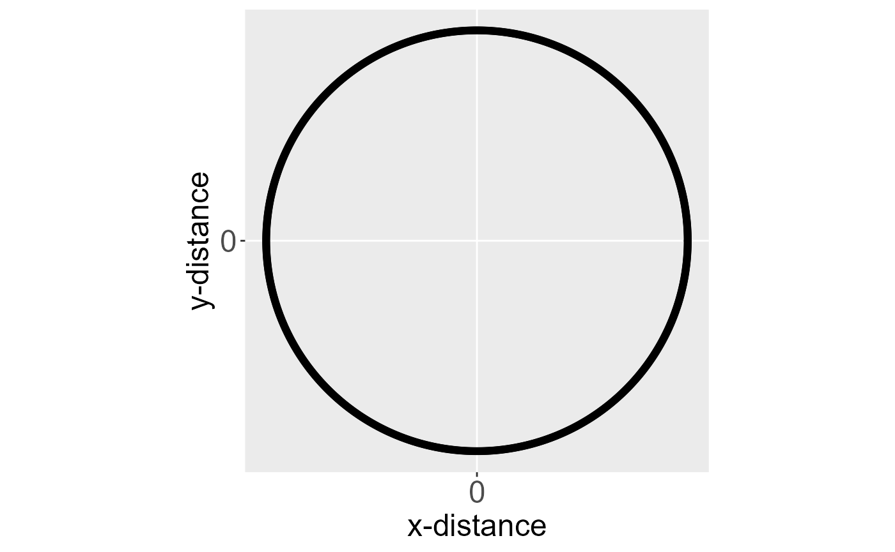
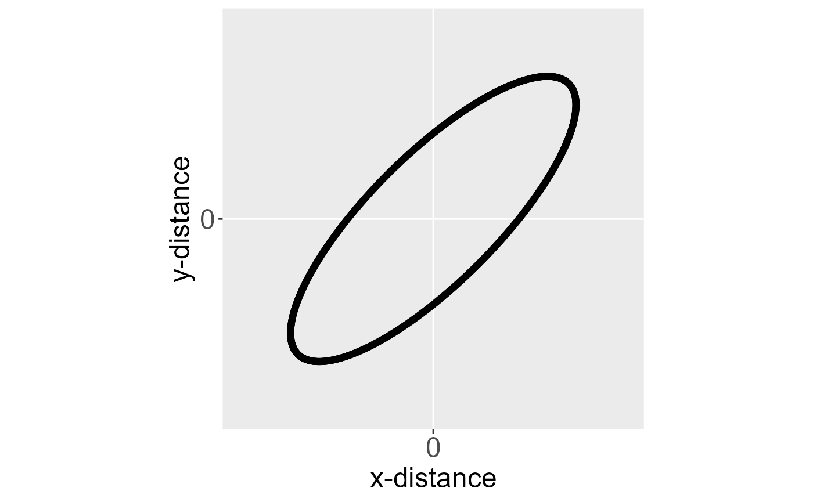

Technical Details
Michael Dumelle, Matt Higham, and Jay M. Ver Hoef
Source:vignettes/articles/technical.Rmd
technical.RmdIntroduction
This vignette covers technical details regarding the functions that
perform computations in spmodel. We first provide a
notation guide and then describe relevant details for each function.
If you use spmodel in a formal publication or report,
please cite it. Citing spmodel lets us devote more
resources to it in the future. To view the spmodel
citation, run
citation(package = "spmodel")#> To cite spmodel in publications use:
#>
#> Dumelle M, Higham M, Ver Hoef JM (2023). spmodel: Spatial statistical
#> modeling and prediction in R. PLOS ONE 18(3): e0282524.
#> https://doi.org/10.1371/journal.pone.0282524
#>
#> A BibTeX entry for LaTeX users is
#>
#> @Article{,
#> title = {{spmodel}: Spatial statistical modeling and prediction in {R}},
#> author = {Michael Dumelle and Matt Higham and Jay M. {Ver Hoef}},
#> journal = {PLOS ONE},
#> year = {2023},
#> volume = {18},
#> number = {3},
#> pages = {1--32},
#> doi = {10.1371/journal.pone.0282524},
#> url = {https://doi.org/10.1371/journal.pone.0282524},
#> }Notation Guide
\[\begin{equation*} \begin{split} n & = \text{Sample size} \\ \mathbf{y} & = \text{Response vector} \\ \boldsymbol{\beta} & = \text{Fixed effect parameter vector} \\ \mathbf{X} & = \text{Design matrix of known explanatory variables (covariates)} \\ p & = \text{The number of linearly independent columns in } \mathbf{X} \\ \boldsymbol{\mu} & = \text{Mean vector} \\ \mathbf{w} & = \text{Latent spatial generalized linear model linear predictor } \boldsymbol{\eta} \text{, on the link scale} \\ \varphi & = \text{Dispersion parameter} \\ \mathbf{Z} & = \text{Design matrix of known random effect variables} \\ \boldsymbol{\theta} & = \text{Covariance parameter vector} \\ \boldsymbol{\Sigma} & = \text{Covariance matrix evaluated at } \boldsymbol{\theta} \\ \boldsymbol{\Sigma}^{-1} & = \text{The inverse of } \boldsymbol{\Sigma} \\ \boldsymbol{\Sigma}^{1/2} & = \text{The square root of } \boldsymbol{\Sigma} \\ \boldsymbol{\Sigma}^{-1/2} & = \text{The inverse of } \boldsymbol{\Sigma}^{1/2} \\ \boldsymbol{\Theta} & = \text{General parameter vector} \\ \ell(\boldsymbol{\Theta}) & = \text{Log-likelihood evaluated at } \boldsymbol{\Theta} \\ \boldsymbol{\tau} & = \text{Spatial (dependent) random error} \\ \boldsymbol{\epsilon} & = \text{Independent (non-spatial) random error} \\ \mathbf{A}^* & = \boldsymbol{\Sigma}^{-1/2}\mathbf{A} \text{ for a general matrix } \mathbf{A} \text{ (this is known as whitening $\mathbf{A}$)} \end{split} \end{equation*}\]A hat indicates the parameters are estimated (i.e., \(\hat{\boldsymbol{\beta}}\)) or evaluated at a relevant estimated parameter vector (e.g., \(\hat{\boldsymbol{\Sigma}}\) is evaluated at \(\hat{\boldsymbol{\theta}}\)). When \(\ell(\boldsymbol{\hat{\Theta}})\) is written, it means the log-likelihood evaluated at its maximum, \(\boldsymbol{\hat{\Theta}}\). When the covariance matrix of \(\mathbf{A}\) is \(\boldsymbol{\Sigma}\), we say \(\mathbf{A}^*\) “whitens” \(\mathbf{A}\) because \[\begin{equation*} \text{Cov}(\mathbf{A}^*) = \text{Cov}(\boldsymbol{\Sigma}^{-1/2}\mathbf{A}) = \boldsymbol{\Sigma}^{-1/2}\text{Cov}(\mathbf{A})\boldsymbol{\Sigma}^{-1/2} = \boldsymbol{\Sigma}^{-1/2}\boldsymbol{\Sigma} \boldsymbol{\Sigma}^{-1/2} = (\boldsymbol{\Sigma}^{-1/2}\boldsymbol{\Sigma}^{1/2})(\boldsymbol{\Sigma}^{1/2}\boldsymbol{\Sigma}^{-1/2}) = \mathbf{I}. \end{equation*}\] Later we discuss how to obtain \(\boldsymbol{\Sigma}^{1/2}\).
A tilde or a dot is also used at various points throughout this vignette (e.g., \(\tilde{\boldsymbol{\beta}}\), \(\tilde{\boldsymbol{\Sigma}}\), \(\dot{\mathbf{y}}_u\), \(\dot{\boldsymbol{\Sigma}}_u\)). Unlike a hat, which always means “estimated” everywhere it appears, a tilde or a dot does not have one fixed meaning across the whole vignette, varying by context.
Two symbols are likewise reused in unrelated roles. In the spatial covariance function tables, \(\eta\) denotes the scaled distance \(h / \phi\) and \(\mathcal{I}\{\cdot\}\) an indicator function; in the spatial generalized linear model sections, \(\eta_i\) (and \(\boldsymbol{\eta}\)) instead denotes the linear predictor. Each is defined where it is used.
Additional notation is used in the predict() section:
\[\begin{equation*}
\begin{split}
\mathbf{y}_o & = \text{Observed response vector} \\
\mathbf{y}_u & = \text{Unobserved response vector} \\
\mathbf{X}_o & = \text{Design matrix of known explanatory
variables at observed response variable locations} \\
\mathbf{X}_u & = \text{Design matrix of known explanatory
variables at unobserved response variable locations} \\
\boldsymbol{\Sigma}_o & = \text{Covariance matrix of
$\mathbf{y}_o$ evaluated at } \boldsymbol{\theta} \\
\boldsymbol{\Sigma}_u & = \text{Covariance matrix of
$\mathbf{y}_u$ evaluated at } \boldsymbol{\theta} \\
\boldsymbol{\Sigma}_{uo} & = \text{A matrix of covariances
between $\mathbf{y}_u$ and $\mathbf{y}_o$ evaluated at }
\boldsymbol{\theta} \\
\mathbf{w}_o & = \text{Latent $\mathbf{w}$ for each observation
in $\mathbf{y}_o$} \\
\mathbf{w}_u & = \text{Latent $\mathbf{w}$ for each observation
in $\mathbf{y}_u$} \\
\mathbf{G}_o & = \text{Hessian for $\mathbf{w}_o$} \\
\end{split}
\end{equation*}\]
Spatial Linear Models
Statistical linear models are often parameterized as \[\begin{equation}\label{eq:lm} \mathbf{y} = \mathbf{X} \boldsymbol{\beta} + \boldsymbol{\epsilon}, \end{equation}\] where for a sample size \(n\), \(\mathbf{y}\) is an \(n \times 1\) column vector of response variables, \(\mathbf{X}\) is an \(n \times p\) design (model) matrix of explanatory variables, \(\boldsymbol{\beta}\) is a \(p \times 1\) column vector of fixed effects controlling the impact of \(\mathbf{X}\) on \(\mathbf{y}\), and \(\boldsymbol{\epsilon}\) is an \(n \times 1\) column vector of random errors. We typically assume that \(\text{E}(\boldsymbol{\epsilon}) = \mathbf{0}\) and \(\text{Cov}(\boldsymbol{\epsilon}) = \sigma^2_\epsilon \mathbf{I}\), where \(\text{E}(\cdot)\) denotes expectation, \(\text{Cov}(\cdot)\) denotes covariance, \(\sigma^2_\epsilon\) denotes a variance parameter, and \(\mathbf{I}\) denotes the identity matrix.
The model \(\mathbf{y} = \mathbf{X} \boldsymbol{\beta} + \boldsymbol{\epsilon}\) assumes the elements of \(\mathbf{y}\) are uncorrelated. Typically for spatial data, elements of \(\mathbf{y}\) are correlated, as observations close together in space tend to be more similar than observations far apart (Tobler 1970). Failing to properly accommodate the spatial dependence in \(\mathbf{y}\) can cause researchers to draw incorrect conclusions about their data. To accommodate spatial dependence in \(\mathbf{y}\), an \(n \times 1\) spatial random effect, \(\boldsymbol{\tau}\), is added to the linear model, yielding the model \[\begin{equation}\label{eq:splm} \mathbf{y} = \mathbf{X} \boldsymbol{\beta} + \boldsymbol{\tau} + \boldsymbol{\epsilon}, \end{equation}\] where \(\boldsymbol{\tau}\) is independent of \(\boldsymbol{\epsilon}\), \(\text{E}(\boldsymbol{\tau}) = \mathbf{0}\), \(\text{Cov}(\boldsymbol{\tau}) = \sigma^2_\tau \mathbf{R}\), \(\mathbf{R}\) is a matrix that determines the spatial dependence structure in \(\mathbf{y}\) and depends on a range parameter, \(\phi\). We discuss \(\mathbf{R}\) in more detail shortly. The parameter \(\sigma^2_\tau\) is called the spatially dependent random error variance or partial sill. The parameter \(\sigma^2_\epsilon\) is called the spatially independent random error variance or nugget. These two variance parameters are henceforth more intuitively written as \(\sigma^2_{de}\) and \(\sigma^2_{ie}\), respectively. The covariance of \(\mathbf{y}\) is denoted \(\boldsymbol{\Sigma}\) and given by \(\sigma^2_{de} \mathbf{R} + \sigma^2_{ie} \mathbf{I}\). The parameters that compose this covariance are contained in the vector \(\boldsymbol{\theta}\), which is called the covariance parameter vector.
The model \(\mathbf{y} = \mathbf{X}
\boldsymbol{\beta} + \boldsymbol{\tau} + \boldsymbol{\epsilon}\)
is called the spatial linear model. The spatial linear model applies to
both point-referenced and areal (i.e., lattice) data. Spatial data are
point-referenced when the elements in \(\mathbf{y}\) are observed at
point-locations indexed by x-coordinates and y-coordinates on a
spatially continuous surface with an infinite number of locations. The
splm() function is used to fit spatial linear models for
point-referenced data (these are sometimes called geostatistical
models). One spatial covariance function available in
splm() is the exponential spatial covariance function,
which has an \(\mathbf{R}\) matrix
given by \[\begin{equation*}
\mathbf{R} = \exp(-\mathbf{M} / \phi),
\end{equation*}\] where \(\mathbf{M}\) is a matrix of Euclidean
distances among observations. Recall that \(\phi\) is the range parameter, controlling
the behavior of the covariance function as a function of distance.
Parameterizations for splm() spatial covariance types and
their \(\mathbf{R}\) matrices can be
seen by running help("splm", "spmodel") or in the
splm() Spatial Covariance Functions section below. Some of
these spatial covariance types (e.g., Matérn) depend on an extra
parameter beyond \(\sigma^2_{de}\),
\(\sigma^2_{ie}\), and \(\phi\).
Spatial data are areal when the elements in \(\mathbf{y}\) are observed as part of a
finite network of polygons whose connections are indexed by a
neighborhood structure. For example, the polygons may represent counties
in a state that are neighbors if they share at least one boundary. Areal
data are often equivalently called lattice data (Cressie 1993). The spautor()
function is used to fit spatial linear models for areal data (these are
sometimes called spatial autoregressive models). One spatial
autoregressive covariance function available in spautor()
is the simultaneous autoregressive spatial covariance function, which
has an \(\mathbf{R}\) matrix given by
\[\begin{equation*}
\mathbf{R} = [(\mathbf{I} - \phi \mathbf{W})(\mathbf{I} - \phi
\mathbf{W})^\top]^{-1},
\end{equation*}\] where \(\mathbf{W}\) is a weight matrix describing
the neighborhood structure in \(\mathbf{y}\). Parameterizations for
spautor() spatial covariance types and their \(\mathbf{R}\) matrices can be seen by
running help("spautor", "spmodel") or in the
spautor() Spatial Covariance Functions section below.
One way to define \(\mathbf{W}\) is through queen contiguity (Anselin et al. 2010). Two observations are queen contiguous if they share a boundary. The \(ij\)th element of \(\mathbf{W}\) is then one if observation \(i\) and observation \(j\) are queen contiguous and zero otherwise. Observations are not considered neighbors with themselves, so each diagonal element of \(\mathbf{W}\) is zero.
Sometimes each element in the weight matrix \(\mathbf{W}\) is divided by its respective row sum. This is called row-standardization. Row-standardizing \(\mathbf{W}\) has several benefits, which are discussed in detail by Ver Hoef et al. (2018).
AIC() and AICc()
The AIC() and AICc() functions in
spmodel are defined for restricted maximum likelihood and
maximum likelihood estimation, which maximize a likelihood. The AIC and
AICc as defined by Hoeting et al. (2006)
are given by \[\begin{equation}\label{eq:sp_aic}
\begin{split}
\text{AIC} & = -2\ell(\hat{\boldsymbol{\Theta}}) +
2(|\hat{\boldsymbol{\Theta}}|) \\
\text{AICc} & = -2\ell(\hat{\boldsymbol{\Theta}}) +
2n(|\hat{\boldsymbol{\Theta}}|) / (n - |\hat{\boldsymbol{\Theta}}| - 1),
\end{split}
\end{equation}\] where \(|\hat{\boldsymbol{\Theta}}|\) is the
cardinality of \(\hat{\boldsymbol{\Theta}}\) (i.e., the
number of estimated parameters). For restricted maximum likelihood,
\(\hat{\boldsymbol{\Theta}} \equiv
\{\hat{\boldsymbol{\theta}}\}\). For maximum likelihood, \(\hat{\boldsymbol{\Theta}} \equiv
\{\hat{\boldsymbol{\theta}}, \hat{\boldsymbol{\beta}}\}\). The
discrepancy arises because restricted maximum likelihood integrates the
fixed effects out of the likelihood, and so the likelihood does not
depend on \(\boldsymbol{\beta}\).
Both criteria balance two competing goals. The first term, \(-2\ell(\hat{\boldsymbol{\Theta}})\), rewards a model for fitting the data well and generally improves as parameters are added. The second term charges a penalty for each parameter, so a parameter only lowers AIC if it improves the fit by more than it costs. AICc, typically preferred for small sample sizes, charges a steeper penalty than AIC (in these contexts, AIC can favor models that are too complex). AIC and AICc are asymptotically equivalent (i.e., as the sample size grows, AICc approaches AIC).
AIC comparisons between a model fit using restricted maximum likelihood and a model fit using maximum likelihood are meaningless, as the models are fit with different likelihoods. AIC comparisons between models fit using restricted maximum likelihood are only valid when the models have the same fixed effect structure. In contrast, AIC comparisons between models fit using maximum likelihood are valid when the models have different fixed effect structures.
anova()
Test statistics from anova() are formed using the
general linear hypothesis test. Let \(\mathbf{L}\) be an \(l \times p\) contrast matrix and \(l_0\) be an \(l
\times 1\) vector. The null hypothesis is that \(\mathbf{L} \boldsymbol{\hat{\beta}} = l_0\)
and the alternative hypothesis is that \(\mathbf{L} \boldsymbol{\hat{\beta}} \neq
l_0\). Usually, \(l_0\) is the
zero vector (in spmodel, this is assumed). The test
statistic is denoted \(Chi2\) and is
given by \[\begin{equation}\label{eq:glht}
Chi2 = [(\mathbf{L} \boldsymbol{\hat{\beta}} - l_0)^\top(\mathbf{L}
(\mathbf{X}^\top \hat{\boldsymbol{\Sigma}}^{-1} \mathbf{X})^{-1}
\mathbf{L}^\top)^{-1}(\mathbf{L} \boldsymbol{\hat{\beta}} - l_0)]
\end{equation}\] The quantity \(\mathbf{L} \boldsymbol{\hat{\beta}} - l_0\)
measures how far the estimated fixed effects are from their null
hypothesis values, and \(\mathbf{L}
(\mathbf{X}^\top \hat{\boldsymbol{\Sigma}}^{-1} \mathbf{X})^{-1}
\mathbf{L}^\top\) is the estimated covariance of that difference.
Sandwiching the inverse covariance between the difference and its
transpose effectively applies a whitening transformation (i.e., as in
GLS), so a large \(Chi2\) means the
data are far from the null, after accounting for the estimated
uncertainty. For a single-row \(\mathbf{L}\), \(\eqref{eq:glht}\) reduces to the square of
the usual \(t\)-like ratio reported by
summary().
By default, \(\mathbf{L}\) is chosen
such that each variable in the data used to fit the model is tested
marginally (i.e., controlling for the other variables) against \(l_0 = \mathbf{0}\). If this default is not
desired, the Terms and L arguments can be used
to pass user-defined \(\mathbf{L}\)
matrices to anova(). They must be constructed in such a way
that \(l_0 = \mathbf{0}\).
It is notoriously difficult to determine appropriate p-values for linear mixed models based on the general linear hypothesis test. lme4, for example, does not report p-values by default. A few reasons why obtaining p-values is so challenging:
- The first (and often most important) challenge is that when estimating \(\boldsymbol{\theta}\) using a finite sample, it is usually not clear what the null distribution of \(Chi2\) is. In certain cases such as ordinary least squares regression or some experimental designs (e.g., blocked design, split plot design, etc.), \(Chi2 / rank(\mathbf{L})\) is F-distributed with known numerator and denominator degrees of freedom. But outside of these well-studied cases, no general results exist.
- The second challenge is that the standard error of \(Chi2\) does not account for the uncertainty in \(\boldsymbol{\hat{\theta}}\). For some approaches to addressing this problem, see Kackar and Harville (1984), Prasad and Rao (1990), Harville and Jeske (1992), and Kenward and Roger (1997).
- The third challenge is in determining denominator degrees of freedom. Again, in some cases, these are known – but this is not true in general. For some approaches to addressing this problem, see Satterthwaite (1946), Schluchter and Elashoff (1990), Fai and Cornelius (1996), Kenward and Roger (1997), Littell et al. (2006), Pinheiro and Bates (2006), and Kenward and Roger (2009).
For these reasons, spmodel generally uses an asymptotic
(i.e., large sample) Chi-squared test when calculating p-values using
anova() (unless sample sizes are small, see further below
for a discussion on ddf and satterthwaite()).
This approach addresses the three points above by assuming that with a
large enough sample size:
- \(Chi2\) is asymptotically Chi-squared (under certain conditions) with \(rank(\mathbf{L})\) degrees of freedom when the null hypothesis is true.
- The uncertainty from estimating \(\boldsymbol{\hat{\theta}}\) is small enough to be safely ignored.
Because the approximation is asymptotic, degree of freedom adjustments can be ignored (it is also worth noting that an \(F\) distribution with infinite denominator degrees of freedom is a Chi-squared distribution divided by \(rank(\mathbf{L})\)). This asymptotic approximation implies these p-values are likely unreliable with small samples.
Note that when comparing full and reduced models, the general linear hypothesis test is analogous to an extra sum of (whitened) squares approach (Myers et al. 2012).
An alternative to the asymptotic Chi-squared test above (for
splm()/spautor() model objects, via the
ddf argument to anova()) directly addresses
the second and third challenges by using Satterthwaite denominator
degrees of freedom (satterthwaite()) instead of assuming
\(n\) is large enough to ignore them.
The \(\eqref{eq:glht}\) test statistic
is rescaled into an \(F\) statistic and
compared to an \(F\) reference
distribution instead of a Chi-squared one: \(F
= Chi2 / rank(\mathbf{L})\), with \(rank(\mathbf{L})\) numerator degrees of
freedom and a Satterthwaite-based denominator degrees of freedom, \(\nu_{\mathbf{L}}\). A Chi-squared statistic
on \(q\) degrees of freedom divided by
\(q\) is equivalently an \(F(q, \infty)\) statistic, so this \(F\) test is a strict generalization of the
asymptotic Chi-squared test, which is recovered as \(\nu_{\mathbf{L}} \to \infty\).
When \(\mathbf{L}\) has a single row
(\(rank(\mathbf{L}) = 1\)), \(\nu_{\mathbf{L}}\) is exactly the
single-coefficient Satterthwaite denominator degrees of freedom
described in satterthwaite(). When \(\mathbf{L}\) has multiple rows (a joint
hypothesis on more than one linear combination of \(\boldsymbol{\beta}\) simultaneously), a
single denominator degrees of freedom for the whole test is obtained
using the approach of Fai and Cornelius
(1996). A challenge is that the \(q\) rows of \(\mathbf{L}\) generally test correlated
quantities, so their individual degrees of freedom cannot simply be
added up. The fix is to first rotate the rows into \(q\) combinations that are uncorrelated with
one another, \[\begin{equation*}
\boldsymbol{\eta} = \mathbf{U}^\top \mathbf{L} \boldsymbol{\hat\beta},
\qquad \text{Cov}(\mathbf{L}\boldsymbol{\hat\beta}) =
\mathbf{L}(\mathbf{X}^\top
\hat{\boldsymbol{\Sigma}}^{-1}\mathbf{X})^{-1}\mathbf{L}^\top =
\mathbf{U} \mathbf{D} \mathbf{U}^\top ,
\end{equation*}\] where \(\mathbf{U}\) contains the eigenvectors of
\(\text{Cov}(\mathbf{L}\boldsymbol{\hat\beta})\).
Each rotated combination \(\eta_i\)
gets its own single-coefficient Satterthwaite degrees of freedom, \(\nu_i\), computed exactly as in
satterthwaite(). Because the \(\eta_i\) are uncorrelated, these \(q\) individual degrees of freedom can now
be combined via \[\begin{equation*}
\nu_{\mathbf{L}} = \begin{cases} 2E / (E - q) & \text{if } E >
q \\ \text{undefined} & \text{otherwise} \end{cases}, \qquad E =
\sum_{i = 1}^q \frac{\nu_i}{\nu_i - 2} .
\end{equation*}\] This is undefined whenever any \(\nu_i \le 2\) (that component’s
covariance-parameter uncertainty is too large, relative to its own
variance estimate, to support a joint test) and reduces to \(\nu_1\) itself when \(q = 1\).
A fundamentally different approach to anova() is
determining p-values via a likelihood ratio test. Let \(\ell(\boldsymbol{\hat{\Theta}})\) be the
log-likelihood for some full model and \(\ell(\boldsymbol{\hat{\Theta}}_0)\) be the
log-likelihood for some reduced model. For the likelihood ratio test to
be valid, the reduced model must be nested in the full model, which
means that \(\ell(\boldsymbol{\hat{\Theta}}_0)\) is
obtained by fixing some parameters in \(\boldsymbol{\Theta}\). When the likelihood
ratio test is valid, \(X^2 =
2\ell(\boldsymbol{\hat{\Theta}}) -
2\ell(\boldsymbol{\hat{\Theta}}_0)\) is asymptotically
Chi-squared with degrees of freedom equal to the difference in estimated
parameters between the full and reduced models. For restricted maximum
likelihood estimation, likelihood ratio tests can only be used to
compare nested models with the same explanatory variables. To use
likelihood ratio tests for comparing different explanatory variable
structures, parameters must be estimated using maximum likelihood
estimation. When using likelihood ratio tests to assess the importance
of parameters on the boundary of a parameter space (e.g., a variance
parameter being zero), p-values tend to be too large (Self and Liang 1987; Stram and Lee 1994; Goldman and
Whelan 2000; Pinheiro and Bates 2006).
BIC()
The BIC() function in spmodel is defined
for restricted maximum likelihood and maximum likelihood estimation,
which maximize a likelihood. The BIC as defined by Schwarz (1978) is given by \[\begin{equation}\label{eq:sp_bic}
\text{BIC} = -2\ell(\hat{\boldsymbol{\Theta}}) +
\ln(n)(|\hat{\boldsymbol{\Theta}}|),
\end{equation}\] where \(n\) is
the sample size and \(|\hat{\boldsymbol{\Theta}}|\) is the
cardinality of \(\hat{\boldsymbol{\Theta}}\). For restricted
maximum likelihood, \(\hat{\boldsymbol{\Theta}} \equiv
\{\hat{\boldsymbol{\theta}}\}\). For maximum likelihood, \(\hat{\boldsymbol{\Theta}} \equiv
\{\hat{\boldsymbol{\theta}}, \hat{\boldsymbol{\beta}}\}\). The
discrepancy arises because restricted maximum likelihood integrates the
fixed effects out of the likelihood, and so the likelihood does not
depend on \(\boldsymbol{\beta}\).
BIC has the same structure as AIC in \(\eqref{eq:sp_aic}\) but charges \(\ln(n)\) per parameter instead of \(2\). Because \(\ln(n) > 2\) whenever \(n \geq 8\), BIC penalizes complexity more heavily than AIC unless the sample size is trivially small. BIC therefore tends to select smaller models than AIC does.
BIC comparisons between a model fit using restricted maximum likelihood and a model fit using maximum likelihood are meaningless, as the models are fit with different likelihoods. BIC comparisons between models fit using restricted maximum likelihood are only valid when the models have the same fixed effect structure. In contrast, BIC comparisons between models fit using maximum likelihood are valid when the models have different fixed effect structures. While BIC was derived by Schwarz (1978) for independent data, Zimmerman and Ver Hoef (2024) show it can be useful for spatially-dependent data as well.
coef()
coef() returns relevant coefficients based on the
type argument. When type = "fixed" (the
default), coef() returns \[\begin{equation*}
\hat{\boldsymbol{\beta}} = (\mathbf{X}^\top
\hat{\boldsymbol{\Sigma}}^{-1} \mathbf{X})^{-1}\mathbf{X}^\top
\hat{\boldsymbol{\Sigma}}^{-1} \mathbf{y} .
\end{equation*}\] If the estimation method is restricted maximum
likelihood or maximum likelihood, \(\hat{\boldsymbol{\beta}}\) is known as the
restricted maximum likelihood or maximum likelihood estimator of \(\boldsymbol{\beta}\). If the estimation
method is semivariogram weighted least squares or semivariogram
composite likelihood, \(\hat{\boldsymbol{\beta}}\) is known as the
empirical generalized least squares estimator of \(\boldsymbol{\beta}\). When
type = "spcov", the estimated spatial covariance parameters
are returned (available for all estimation methods). When
type = "randcov", the estimated random effect variance
parameters are returned (available for restricted maximum likelihood and
maximum likelihood estimation).
confint()
confint() returns confidence intervals for estimated
parameters. Currently, confint() only returns confidence
intervals for \(\boldsymbol{\beta}\).
For splm()/spautor() model objects fit with
ddf = "asymptotic" (or for
spglm()/spgautor() model objects, which have
no ddf argument), the \(100(1 -
\alpha)\)% confidence interval for \(\beta_i\) is \[\begin{equation*}
\hat{\beta}_i \pm z^* \sqrt{(\mathbf{X}^\top
\hat{\boldsymbol{\Sigma}}^{-1} \mathbf{X})^{-1}_{i, i}},
\end{equation*}\] where \((\mathbf{X}^\top \hat{\boldsymbol{\Sigma}}^{-1}
\mathbf{X})^{-1}_{i, i}\) is the \(i\)th diagonal element in \((\mathbf{X}^\top \hat{\boldsymbol{\Sigma}}^{-1}
\mathbf{X})^{-1}\), \(\Phi(z^*) = 1 -
\alpha / 2\), \(\Phi(\cdot)\) is
the standard normal (Gaussian) cumulative distribution function, and
\(\alpha = 1 -\) level,
where level is an argument to confint(). The
default for level is 0.95, which corresponds to a \(z^*\) of approximately 1.96.
For splm()/spautor() model objects fit with
ddf = "satterthwaite" (the default when \(n \le 500\); see
satterthwaite()), \(z^*\)
is instead replaced by \(t^*\), the
\((1 - \alpha/2)\) quantile of a \(t\)-distribution with \(\nu_i\) (the \(i\)th fixed effect’s Satterthwaite
denominator degrees of freedom) degrees of freedom: \[\begin{equation*}
\hat{\beta}_i \pm t^* \sqrt{(\mathbf{X}^\top
\hat{\boldsymbol{\Sigma}}^{-1} \mathbf{X})^{-1}_{i, i}} .
\end{equation*}\] Because a \(t\)-distribution has heavier tails than a
standard normal distribution, Satterthwaite confidence intervals are
wider than asymptotic confidence intervals, appropriately reflecting the
extra uncertainty from estimating \(\boldsymbol{\theta}\) in a finite
sample.
cooks.distance()
Cook’s distance measures the influence of an observation (Cook 1979; Cook and Weisberg 1982). An influential observation has a large impact on the model fit. The vector of Cook’s distances for the spatial linear model is given by \[\begin{equation} \label{eq:cooksd} \frac{\mathbf{e}_s^2}{p} \odot diag(\mathbf{H}_s) \odot \frac{1}{1 - diag(\mathbf{H}_s)}, \end{equation}\] where \(\mathbf{e}_s\) are the standardized residuals and \(diag(\mathbf{H}_s)\) is the diagonal of the spatial hat matrix, \(\mathbf{H}_s \equiv \mathbf{X}^* (\mathbf{X}^{* \top} \mathbf{X}^*)^{-1} \mathbf{X}^{* \top}\) (Montgomery et al. 2021), and \(\odot\) denotes the Hadamard (element-wise) product. The larger the Cook’s distance, the larger the influence.
To better understand \(\eqref{eq:cooksd}\), recall that the non-spatial linear model \(\mathbf{y} = \mathbf{X} \boldsymbol{\beta} + \boldsymbol{\epsilon}\) assumes elements of \(\boldsymbol{\epsilon}\) are independent and identically distributed (iid) with constant variance. In this context the vector of non-spatial Cook’s distances is given by \[\begin{equation*} \frac{\mathbf{e}_s^2}{p} \odot diag(\mathbf{H}) \odot \frac{1}{1 - diag(\mathbf{H})}, \end{equation*}\] where \(diag(\mathbf{H})\) is the diagonal of the non-spatial hat matrix, \(\mathbf{H} \equiv \mathbf{X} (\mathbf{X}^{\top} \mathbf{X})^{-1} \mathbf{X}^{\top}\). When the elements of \(\boldsymbol{\epsilon}\) are not iid or do not have constant variance or both, the spatial Cook’s distance cannot be calculated using \(\mathbf{H}\). First the linear model must be whitened according to \(\mathbf{y}^* = \mathbf{X}^* \boldsymbol{\beta} + \boldsymbol{\epsilon}^*\), where \(\boldsymbol{\epsilon}^*\) is the whitened version of the sum of all random errors in the model. Then the spatial Cook’s distance follows using \(\mathbf{X}^*\), the whitened version of \(\mathbf{X}\).
deviance()
The deviance of a fitted model is \[\begin{equation*} \mathcal{D}_{\boldsymbol{\Theta}} = 2\ell(\boldsymbol{\Theta}_s) - 2\ell(\boldsymbol{\hat{\Theta}}), \end{equation*}\] where \(\ell(\boldsymbol{\Theta}_s)\) is the log-likelihood of a “saturated” model that fits every observation perfectly. For normal (Gaussian) random errors, \[\begin{equation*} \mathcal{D}_{\boldsymbol{\Theta}} = (\mathbf{y} - \mathbf{X} \hat{\boldsymbol{\beta}})^\top \hat{\boldsymbol{\Sigma}}^{-1} (\mathbf{y} - \mathbf{X} \hat{\boldsymbol{\beta}}) . \end{equation*}\] The deviance measures how much worse the fitted model is than a model that fits the data perfectly well. So, smaller deviance values indicate a better fit. For Gaussian errors it is exactly a generalized (whitened) residual sum of squares, the ordinary residual sum of squares with \(\hat{\boldsymbol{\Sigma}}^{-1}\) in place of the identity matrix, downweighting residuals at locations whose neighbors already explain them. Because of that whitening, this is a scaled deviance in the sense of Unscaled and Scaled Deviances: the dispersion is divided out by \(\hat{\boldsymbol{\Sigma}}^{-1}\) rather than left in, so it is the analogue of \(D^*(\mathbf{y})\) there rather than of \(D(\mathbf{y})\).
fitted()
Fitted values can be obtained for the response, spatial random
errors, and random effects. The fitted values for the response
(type = "response"), denoted \(\mathbf{\hat{y}}\), are given by \[\begin{equation}\label{eq:fit_resp}
\mathbf{\hat{y}} = \mathbf{X} \boldsymbol{\hat{\beta}} .
\end{equation}\] They are the estimated mean response given the
set of explanatory variables for each observation. When the model
includes an offset, the offset is added to \(\eqref{eq:fit_resp}\).
Fitted values for spatial random errors (type = "spcov")
and random effects (type = "randcov") are linked to best
linear unbiased predictors from linear mixed model theory. Consider the
standard random effects parameterization \[\begin{equation*}
\mathbf{y} = \mathbf{X} \boldsymbol{\beta} + \mathbf{Z} \mathbf{u} +
\boldsymbol{\epsilon},
\end{equation*}\] where \(\mathbf{Z}\) denotes the random effects
design matrix, \(\mathbf{u}\) denotes
the random effects, and \(\boldsymbol{\epsilon}\) denotes independent
random error. Henderson (1975) states that
the best linear unbiased predictor (BLUP) of a single random effect
vector \(\mathbf{u}\), denoted \(\mathbf{\hat{u}}\), is given by \[\begin{equation}\label{eq:blup_mm}
\mathbf{\hat{u}} = \sigma^2_u \mathbf{Z}^\top
\boldsymbol{\Sigma}^{-1}(\mathbf{y} - \mathbf{X}
\boldsymbol{\hat{\beta}}),
\end{equation}\] where \(\sigma^2_u\) is the variance of \(\mathbf{u}\).
Searle et al. (2009) generalize this idea by showing that for a random vector \(\boldsymbol{\alpha}\) in a linear model, the best linear unbiased predictor (based on the response, \(\mathbf{y}\)) of \(\boldsymbol{\alpha}\), denoted \(\boldsymbol{\hat{\alpha}}\), is given by \[\begin{equation}\label{eq:blup_gen} \boldsymbol{\hat{\alpha}} = \text{E}(\boldsymbol{\alpha}) + \boldsymbol{\Sigma}_\alpha \boldsymbol{\Sigma}^{-1}(\mathbf{y} - \mathbf{X} \boldsymbol{\hat{\beta}}), \end{equation}\] where \(\boldsymbol{\Sigma}_\alpha = \text{Cov}(\boldsymbol{\alpha}, \mathbf{y})\). Evaluating \(\eqref{eq:blup_gen}\) at the plug-in (empirical) estimates of the covariance parameters yields the empirical best linear unbiased predictor (EBLUP) of \(\boldsymbol{\alpha}\).
Recall that the spatial linear model with random effects is \[\begin{equation*} \mathbf{y} = \mathbf{X} \boldsymbol{\beta} + \mathbf{Z} \mathbf{u} + \boldsymbol{\tau} + \boldsymbol{\epsilon}, \end{equation*}\] Building from previous results, we can find BLUPs for each random term in the spatial linear model (\(\mathbf{u}\), \(\boldsymbol{\tau}\), and \(\boldsymbol{\epsilon}\)). For example, the BLUP of \(\mathbf{u}\) is found by noting that \(\text{E}(\mathbf{u}) = \mathbf{0}\) and \[\begin{equation*} \boldsymbol{\Sigma}_u = \text{Cov}(\mathbf{u}, \mathbf{y}) = \text{Cov}(\mathbf{u}, \mathbf{X} \boldsymbol{\beta} + \mathbf{Z} \mathbf{u} + \boldsymbol{\tau} + \boldsymbol{\epsilon}) = \text{Cov}(\mathbf{u}, \mathbf{Z}\mathbf{u}) = \text{Cov}(\mathbf{u}, \mathbf{u})\mathbf{Z}^\top = \sigma^2_u \mathbf{Z}^\top, \end{equation*}\] where the result follows because the random terms in \(\mathbf{y}\) are independent and \(\text{Cov}(\mathbf{u}, \mathbf{u}) = \sigma^2_u \mathbf{I}\). Then it follows that \[\begin{equation*} \hat{\mathbf{u}} = \text{E}(\mathbf{u}) + \boldsymbol{\Sigma}_u \boldsymbol{\Sigma}^{-1}(\mathbf{y} - \mathbf{X} \boldsymbol{\hat{\beta}}) = \sigma^2_u \mathbf{Z}^\top \boldsymbol{\Sigma}^{-1}(\mathbf{y} - \mathbf{X} \boldsymbol{\hat{\beta}}), \end{equation*}\] which matches \(\eqref{eq:blup_mm}\). Similarly, the BLUP of \(\boldsymbol{\tau}\) is found by noting that \(\text{E}(\boldsymbol{\tau}) = \mathbf{0}\) and \[\begin{equation*} \boldsymbol{\Sigma}_{de} = \text{Cov}(\boldsymbol{\tau}, \mathbf{y}) = \text{Cov}(\boldsymbol{\tau}, \mathbf{X} \boldsymbol{\beta} + \mathbf{Z} \mathbf{u} + \boldsymbol{\tau} + \boldsymbol{\epsilon}) = \text{Cov}(\boldsymbol{\tau}, \boldsymbol{\tau}) = \sigma^2_{de} \mathbf{R}, \end{equation*}\] where the result follows because the random terms in \(\mathbf{y}\) are independent and \(\text{Cov}(\boldsymbol{\tau}, \boldsymbol{\tau}) = \sigma^2_{de} \mathbf{R}\), and \(\sigma^2_{de}\) is the variance of \(\boldsymbol{\tau}\). Then it follows that \[\begin{equation}\label{eq:blup_sp} \hat{\boldsymbol{\tau}} = \text{E}(\boldsymbol{\tau}) + \boldsymbol{\Sigma}_{de} \boldsymbol{\Sigma}^{-1}(\mathbf{y} - \mathbf{X} \boldsymbol{\hat{\beta}}) = \sigma^2_{de} \mathbf{R} \boldsymbol{\Sigma}^{-1}(\mathbf{y} - \mathbf{X} \boldsymbol{\hat{\beta}}). \end{equation}\] Fitted values for \(\boldsymbol{\epsilon}\) are obtained using similar arguments. Evaluating these equations at the plug-in (empirical) estimates of the covariance parameters yields EBLUPs.
When partition factors are used, the covariance matrix of all random effects (spatial and non-spatial) can be viewed as the interaction between the non-partitioned covariance matrix and the partition matrix, \(\mathbf{P}\). The \(ij\)th entry in \(\mathbf{P}\) equals one if observation \(i\) and observation \(j\) share the same level of the partition factor and zero otherwise. For spatial random effects, an adjustment is straightforward, as each column in \(\boldsymbol{\Sigma}_{de}\) corresponds to a distinct spatial random effect. Thus with partition factors, \(\boldsymbol{\Sigma}_{de}^* = \boldsymbol{\Sigma}_{de} \odot \mathbf{P} = \sigma^2_{de} \mathbf{R} \odot \mathbf{P}\), where \(\odot\) denotes the Hadamard (element-wise) product, is used instead of \(\boldsymbol{\Sigma}_{de}\). Note that \(\boldsymbol{\Sigma}_{ie}\) is unchanged as it is proportional to the identity matrix. For non-spatial random effects, however, the situation is more complicated. Applying the BLUP formula directly yields BLUPs of random effects corresponding to the interaction between random effect levels and partition levels. Thus a logical approach is to average the non-zero BLUPs for each random effect level across partition levels, yielding a prediction for the random effect level. This does not imply, however, that these estimates are BLUPs of the random effect.
For big data without partition factors, the local indexes act as partition factors. That is, the BLUPs correspond to random effects interacted with each local index. For big data with partition factors, an adjusted partition factor is created as the interaction between each local index and the partition factor. Then this adjusted partition factor is applied to yield \(\hat{\boldsymbol{\alpha}}\).
hatvalues()
Hat values measure the leverage of an observation. An observation has high leverage if its combination of explanatory variables is atypical (far from the mean explanatory vector). The spatial leverage (hat) matrix is given by \[\begin{equation} \label{eq:leverage} \mathbf{H}_s = \mathbf{X}^* (\mathbf{X}^{* \top} \mathbf{X}^*)^{-1} \mathbf{X}^{* \top}. \end{equation}\] The diagonal of this matrix yields the leverage (hat) values for each observation (Montgomery et al. 2021). The larger the hat value, the larger the leverage.
To better understand \(\eqref{eq:leverage}\), recall that the non-spatial linear model \(\mathbf{y} = \mathbf{X} \boldsymbol{\beta} + \boldsymbol{\epsilon}\) assumes elements of \(\boldsymbol{\epsilon}\) are independent and identically distributed (iid) with constant variance. In this context, the leverage (hat) matrix is given by \[\begin{equation*} \mathbf{H} \equiv \mathbf{X} (\mathbf{X}^{\top} \mathbf{X})^{-1} \mathbf{X}^{\top}, \end{equation*}\] When the elements of \(\boldsymbol{\epsilon}\) are not iid or do not have constant variance or both, the spatial leverage (hat) matrix is not \(\mathbf{H}\). First the linear model must be whitened according to \(\mathbf{y}^* = \mathbf{X}^* \boldsymbol{\beta} + \boldsymbol{\epsilon}^*\), where \(\boldsymbol{\epsilon}^*\) is the whitened version of the sum of all random errors in the model. Then the spatial leverage (hat) matrix follows using \(\mathbf{X}^*\), the whitened version of \(\mathbf{X}\).
loocv() and kcv()
\(k\)-fold cross validation is a
useful tool for evaluating model fits using “hold-out” data. The data
are split into \(k\) sets, called
folds. One-by-one, one of the \(k\)
folds is held out, the model is fit to the remaining \(k - 1\) folds, and predictions at each
observation in the hold-out fold are compared to their true values. The
closer the predictions are to the true observations, the better the
model fit. A special case where \(k =
n\) (each fold contains a single observation) is known as
leave-one-out cross validation (loocv), as each observation is left out
one-by-one; kcv() generalizes this to \(k < n\), and calls loocv()
directly whenever \(k = n\) is
requested. Computationally efficient solutions exist for leave-one-out
cross validation in the non-spatial linear model (with iid, constant
variance errors). Outside of this case, however, fitting \(n\) (or, for kcv(), \(k\)) separate models can be computationally
infeasible. loocv()/kcv() make a compromise
that balances an approximation to the true solution with computational
feasibility. First \(\boldsymbol{\theta}\) is estimated using
all of the data. Then for each fold’s model fit,
loocv()/kcv() do not re-estimate \(\boldsymbol{\theta}\) but do re-estimate
\(\boldsymbol{\beta}\). This approach
relies on the assumption that the covariance parameter estimates
obtained using the data with a single fold removed are approximately the
same as the covariance parameter estimates obtained using all the data.
For a large enough sample size (relative to the fold size), this is a
reasonable assumption.
First define \(\boldsymbol{\Sigma}_{-i, -i}\) as \(\boldsymbol{\Sigma}\) with the \(i\)th row and column deleted, \(\boldsymbol{\Sigma}_{i, -i}\) as the \(i\)th row of \(\boldsymbol{\Sigma}\) with the \(i\)th column deleted, \(\boldsymbol{\Sigma}_{i, i}\) as the \(i\)th diagonal element of \(\boldsymbol{\Sigma}\), \(\mathbf{X}_{-i}\) as \(\mathbf{X}\) with the \(i\)th row deleted, \(\mathbf{X}_{i}\) as the \(i\)th row of \(\mathbf{X}\), \(\mathbf{y}_{-i}\) as \(\mathbf{y}\) with the \(i\)th element deleted, and \(y_i\) as the \(i\)th element of \(\mathbf{y}\). Wolf (1978) shows that given \(\boldsymbol{\Sigma}^{-1}\), a computationally efficient form for \(\boldsymbol{\Sigma}^{-1}_{-i}\) exists. First observe that \(\boldsymbol{\Sigma}^{-1}\) can be represented blockwise as \[\begin{equation*} \boldsymbol{\Sigma}^{-1} = \begin{bmatrix} \tilde{\boldsymbol{\Sigma}}_{-i, -i} & \tilde{\boldsymbol{\Sigma}}_{i,-i}^\top \\ \tilde{\boldsymbol{\Sigma}}_{i,-i} & \tilde{\boldsymbol{\Sigma}}_{i, i} \end{bmatrix}, \end{equation*}\] where the dimensions of each \(\tilde{\boldsymbol{\Sigma}}\) match the respective dimensions of relevant blocks in \(\boldsymbol{\Sigma}\). Then it follows that \[\begin{equation*} \boldsymbol{\Sigma}^{-1}_{-i, -i} = \tilde{\boldsymbol{\Sigma}}_{-i, -i} - \tilde{\boldsymbol{\Sigma}}_{i,-i}^\top \tilde{\boldsymbol{\Sigma}}_{i, i}^{-1}\tilde{\boldsymbol{\Sigma}}_{i,-i} \end{equation*}\] and \[\begin{equation*} \hat{\boldsymbol{\beta}}_{-i} = (\mathbf{X}^\top_{-i} \hat{\boldsymbol{\Sigma}}^{-1}_{-i, -i} \mathbf{X}_{-i})^{-1} \mathbf{X}^\top_{-i} \hat{\boldsymbol{\Sigma}}^{-1}_{-i, -i} \mathbf{y}_{-i}, \end{equation*}\] where \(\hat{\boldsymbol{\beta}}_{-i}\) is the estimate of \(\boldsymbol{\beta}\) constructed without the \(i\)th observation. The value of this identity is that \(\boldsymbol{\Sigma}^{-1}_{-i, -i}\) is obtained by rearranging blocks of the \(\boldsymbol{\Sigma}^{-1}\) already computed once from the full data, rather than by inverting a new \((n-1) \times (n-1)\) matrix for every held-out observation. Without it, leave-one-out cross validation would require \(n\) separate \(O(n^3)\) inversions.
The loocv prediction of \(y_i\) is then given by \[\begin{equation*} \hat{y}_i = \mathbf{X}_i \hat{\boldsymbol{\beta}}_{-i} + \hat{\boldsymbol{\Sigma}}_{i, -i}\hat{\boldsymbol{\Sigma}}_{-i, -i}^{-1}(\mathbf{y}_{-i} - \mathbf{X}_{-i} \hat{\boldsymbol{\beta}}_{-i}) \end{equation*}\] and the prediction variance of the loocv prediction of \(y_i\) is given by \[\begin{equation*} \dot{\sigma}^2_i = \hat{\boldsymbol{\Sigma}}_{i, i} - \hat{\boldsymbol{\Sigma}}_{i, - i} \hat{\boldsymbol{\Sigma}}^{-1}_{-i, -i} \hat{\boldsymbol{\Sigma}}_{i, - i}^\top + \mathbf{Q}_i(\mathbf{X}_{-i}^\top \hat{\boldsymbol{\Sigma}}_{-i, -i}^{-1} \mathbf{X}_{-i})^{-1}\mathbf{Q}_i^\top , \end{equation*}\] where \(\mathbf{Q}_i = \mathbf{X}_i - \hat{\boldsymbol{\Sigma}}_{i, -i} \hat{\boldsymbol{\Sigma}}^{-1}_{-i, -i} \mathbf{X}_{-i}\). These formulas are analogous to the formulas used to obtain linear unbiased predictions of unobserved data and prediction variances. Model fits are evaluated using several statistics: bias, mean-squared-prediction error (MSPE), root-mean-squared-prediction error (RMSPE), and the squared correlation (cor2) between the observed data and leave-one-out predictions (regarded as a prediction version of r-squared appropriate for comparing across spatial and nonspatial models).
kcv(): Block Generalization
kcv() replaces each single held-out observation \(i\) above with a held-out fold \(F\), a set of (approximately \(n / k\)) row indices held out together, so
\(-i\) becomes \(-F\) throughout (e.g., \(\hat{\boldsymbol{\Sigma}}_{F, -F}\) is the
covariance between the held-out fold and every other observation). The
Helmert-Wolf-Blocking result of Wolf
(1978) used above is a general block-partitioned-matrix identity,
so it generalizes to a fold of any size the same way: only the scalar
\(\tilde{\boldsymbol{\Sigma}}_{i,
i}^{-1}\) becomes an \(m \times
m\) matrix inverse, where \(m =
|F|\) is the fold size, and \[\begin{equation*}
\boldsymbol{\Sigma}^{-1}_{-F, -F} = \tilde{\boldsymbol{\Sigma}}_{-F,
-F} - \tilde{\boldsymbol{\Sigma}}_{F,-F}^\top
\tilde{\boldsymbol{\Sigma}}_{F,
F}^{-1}\tilde{\boldsymbol{\Sigma}}_{F,-F}.
\end{equation*}\] The prediction \(\hat{\mathbf{y}}_F\) and the prediction
covariance matrix \(\dot{\boldsymbol{\Sigma}}_F\) (a full
covariance matrix here, not just a prediction variance, as the \(m\) held-out predictions in a fold are
correlated with one another) follow by substituting \(F\) for \(i\) throughout the single-observation
leave-one-out equations above: \[\begin{equation*}
\hat{\mathbf{y}}_F = \mathbf{X}_F \hat{\boldsymbol{\beta}}_{-F} +
\hat{\boldsymbol{\Sigma}}_{F, -F}\hat{\boldsymbol{\Sigma}}_{-F,
-F}^{-1}(\mathbf{y}_{-F} - \mathbf{X}_{-F}\hat{\boldsymbol{\beta}}_{-F})
,
\end{equation*}\] \[\begin{equation*}
\dot{\boldsymbol{\Sigma}}_F = \hat{\boldsymbol{\Sigma}}_{F, F} -
\hat{\boldsymbol{\Sigma}}_{F, -F}\hat{\boldsymbol{\Sigma}}_{-F,
-F}^{-1}\hat{\boldsymbol{\Sigma}}_{F, -F}^\top +
\mathbf{Q}_F(\mathbf{X}_{-F}^\top \hat{\boldsymbol{\Sigma}}_{-F,
-F}^{-1}\mathbf{X}_{-F})^{-1}\mathbf{Q}_F^\top ,
\end{equation*}\] where \[\begin{equation*}
\mathbf{Q}_F = \mathbf{X}_F - \hat{\boldsymbol{\Sigma}}_{F,
-F}\hat{\boldsymbol{\Sigma}}_{-F, -F}^{-1}\mathbf{X}_{-F} .
\end{equation*}\] Only the diagonal of \(\dot{\boldsymbol{\Sigma}}_F\) (the
per-observation prediction variance, matching loocv()’s
output shape) is returned by default. At \(m =
1\) (\(k = n\)), every quantity
above reduces exactly to loocv()’s corresponding
single-observation formula. Fold assignment is either random
(k approximately-equally-sized folds; the default is
k = 5) or user-supplied (folds_index), and
bias, MSPE, RMSPE, and cor2 are computed identically to
loocv(), aggregating the prediction error across every
observation regardless of which fold it fell in.
Holding out folds rather than single observations is not merely a computational convenience. A held-out observation’s nearest neighbors are usually still in the training set, so leave-one-out cross validation asks how well the model interpolates over very short distances. Holding out a larger fold removes some of those neighbors too, so the model must predict across a wider gap. Smaller \(k\) therefore can sometimes give a more realistic assessment of how the model will perform at genuinely new locations.
Bias is formally defined as \[\begin{equation*} bias = \frac{1}{n}\sum_{i = 1}^n(y_i - \hat{y}_i). \end{equation*}\]
MSPE is formally defined as \[\begin{equation*} MSPE = \frac{1}{n}\sum_{i = 1}^n(y_i - \hat{y}_i)^2. \end{equation*}\]
RMSPE is formally defined as \[\begin{equation*} RMSPE = \sqrt{\frac{1}{n}\sum_{i = 1}^n(y_i - \hat{y}_i)^2}. \end{equation*}\]
cor2 is formally defined as \[\begin{equation*} cor2 = \text{Cor}(\mathbf{y}, \hat{\mathbf{y}})^2, \end{equation*}\] where Cor\((\cdot)\) is the correlation function. cor2 is only returned for spatial linear models, as it is not applicable for spatial generalized linear models (we are predicting a latent mean parameter, which is unknown and not on the same scale as the original data).
Generally, bias should be near zero for well-fitting models. The lower the MSPE and RMSPE, the better the model fit. The higher the cor2, the better the model fit.
Prediction intervals are also available upon request. Setting
interval = "prediction" (for
splm()/spautor() model objects only, since
spglm()/spgautor() have no observed-scale
latent mean to compare a prediction interval against) additionally
reports the empirical coverage of the (100 \(\times\) level)% cross
validation prediction interval: the proportion of held-out observations
whose true value falls within \(\hat{y}_i \pm
z^* \dot{\sigma}_i\) (for loocv()) or the analogous
fold-level interval (for kcv()), using the same
normal-quantile convention predict() uses by default
(interval = "prediction"). Generally, empirical coverage
should be close to the nominal level for well-fitting
models.
Big Data
Options for big data leave-one-out cross validation rely on the
local argument, which is passed to predict().
The local list for predict() is explained in
detail in the predict() section, but we provide a short
summary of how local interacts with loocv()
and kcv() here.
For splm() and spautor() objects, the
local method can be "all". When the
local method is "all", all of the data are
used for leave-one-out cross validation (i.e., it is implemented exactly
as previously described). Parallelization is implemented when setting
parallel = TRUE in local, and the number of
cores to use for parallelization is specified via
ncores.
For splm() objects, additional options for the
local method are "covariance" and
"distance". When the local method is
"covariance", then a number of observations (specified via
the size argument) having the highest covariance with the
held-out observation are used in the local neighborhood prediction
approach. When the local method is "distance",
then a number of observations (specified via the size
argument) closest to the held-out observation are used in the local
neighborhood prediction approach. When no random effects are used, no
partition factor is used, and the spatial covariance function is
monotone decreasing, "covariance" and
"distance" are equivalent, since the closest observations
are then also the most correlated ones. The local neighborhood approach
only uses the observations in the local neighborhood of the held-out
observation to perform prediction, and is thus an approximation to the
true solution. Its computational efficiency derives from using \(\boldsymbol{\Sigma}_{l, l}\) (the
covariance matrix of the observations in the local neighborhood) instead
of \(\boldsymbol{\Sigma}\) (the
covariance matrix of all the observations). Parallelization is
implemented when setting parallel = TRUE in
local, and the number of cores to use for parallelization
is specified via ncores.
kcv() avoids ever forming the full \(n \times n\) covariance matrix, and for
each fold, kcv() refits the model with \(\boldsymbol{\theta}\) held fixed at its
full-data estimate \(\boldsymbol{\hat\theta}\) (so no numerical
optimization is required, regardless of \(n\)) on the data with that fold set to
missing, genuinely re-estimating \(\boldsymbol{\beta}\) for the fold (unlike
loocv()’s local approximation, which holds \(\boldsymbol{\hat\beta}\) fixed too, a
negligible approximation for a single held-out observation, but not
necessarily for an entire held-out fold), and then predicts the fold via
predict(), which passes local through to its
own big data approximation.
predict()
interval = "none"
The empirical best linear unbiased predictions (i.e., empirical Kriging predictor) of \(\mathbf{y}_u\) are given by \[\begin{equation}\label{eq:blup} \dot{\mathbf{y}}_u = \mathbf{X}_u \hat{\boldsymbol{\beta}} + \hat{\boldsymbol{\Sigma}}_{uo} \hat{\boldsymbol{\Sigma}}^{-1}_{o} (\mathbf{y}_o - \mathbf{X}_o \hat{\boldsymbol{\beta}}) . \end{equation}\]
\(\eqref{eq:blup}\) is sometimes called an empirical universal Kriging predictor, a Kriging with external drift predictor, or a regression Kriging predictor.
\(\eqref{eq:blup}\) has two primary components. The first, \(\mathbf{X}_u \hat{\boldsymbol{\beta}}\), is what an ordinary regression would predict from the explanatory variables alone. The second is a spatial correction: \(\mathbf{y}_o - \mathbf{X}_o \hat{\boldsymbol{\beta}}\) collects how much the observed data came in above or below their own regression predictions, and \(\hat{\boldsymbol{\Sigma}}_{uo} \hat{\boldsymbol{\Sigma}}^{-1}_{o}\) carries those observed departures over to the prediction locations based on how strongly each is correlated with them. If a prediction location is far from every observation, its covariances with them are near zero, the correction vanishes, and the prediction falls back on the regression alone. If it nearly coincides with an observation, the correction pulls the prediction toward that observation’s realized value.
The covariance matrix of \(\dot{\mathbf{y}}_u\) is \[\begin{equation}\label{eq:blup_cov} \dot{\boldsymbol{\Sigma}}_u = \hat{\boldsymbol{\Sigma}}_u - \hat{\boldsymbol{\Sigma}}_{uo} \hat{\boldsymbol{\Sigma}}^{-1}_o \hat{\boldsymbol{\Sigma}}^\top_{uo} + \mathbf{Q}(\mathbf{X}_o^\top \hat{\boldsymbol{\Sigma}}_o^{-1} \mathbf{X}_o)^{-1}\mathbf{Q}^\top , \end{equation}\] where \(\mathbf{Q} = \mathbf{X}_u - \hat{\boldsymbol{\Sigma}}_{uo} \hat{\boldsymbol{\Sigma}}^{-1}_o \mathbf{X}_o\). The three terms of \(\eqref{eq:blup_cov}\) separate the sources of prediction uncertainty. The first is how variable \(\mathbf{y}_u\) is on its own; the second subtracts off the part of that variability the observed data explain; the third adds back the uncertainty that comes from \(\boldsymbol{\beta}\) having been estimated rather than known.
When se.fit = TRUE, standard errors are returned by
taking the square root of the diagonal of \(\dot{\boldsymbol{\Sigma}}_u\) (in fact,
only this diagonal is calculated and off-diagonal terms are
ignored).
interval = "prediction"
The empirical best linear unbiased predictions are returned as \(\dot{\mathbf{y}}_u\). The (100 \(\times\) level)% prediction
interval for \((y_u)_i\) is \((\dot{y}_u)_i \pm z^*
\sqrt{(\dot{\boldsymbol{\Sigma}}_u)_{i, i}}\), where \(\sqrt{(\dot{\boldsymbol{\Sigma}}_u)_{i,
i}}\) is the standard error of \((\dot{y}_u)_i\) obtained from
se.fit = TRUE, \(\Phi(z^*) = 1 -
\alpha / 2\), \(\Phi(\cdot)\) is
the standard normal (Gaussian) cumulative distribution function, \(\alpha = 1 -\) level, and
level is an argument to predict(). The default
for level is 0.95, which corresponds to a \(z^*\) of approximately 1.96.
interval = "confidence"
The best linear unbiased estimates of \(\text{E}[(y_u)_i]\) (\(\text{E}(\cdot)\) denotes expectation) are
returned by evaluating \((\mathbf{X}_u)_i
\hat{\boldsymbol{\beta}}\), where \((\mathbf{X}_u)_i\) is the \(i\)th row of \(\mathbf{X}_u\) (i.e., fitted values
corresponding to \((\mathbf{X}_u)_i\)
are returned). The (100 \(\times\)
level)% confidence interval for \(\text{E}[(y_u)_i]\) is \[\begin{equation*}
(\mathbf{X}_u)_i \hat{\boldsymbol{\beta}} \pm z^* \sqrt{(\mathbf{X}_u)_i
(\mathbf{X}^\top_o \hat{\boldsymbol{\Sigma}}_o^{-1} \mathbf{X}_o)^{-1}
(\mathbf{X}_u)_i^\top} ,
\end{equation*}\] where \(\sqrt{(\mathbf{X}_u)_i (\mathbf{X}^\top_o
\hat{\boldsymbol{\Sigma}}_o^{-1} \mathbf{X}_o)^{-1}
(\mathbf{X}_u)_i^\top}\) is the standard error of \((\mathbf{X}_u)_i \hat{\boldsymbol{\beta}}\)
obtained from se.fit = TRUE, \(\Phi(z^*) = 1 - \alpha / 2\), \(\Phi(\cdot)\) is the standard normal
(Gaussian) cumulative distribution function, \(\alpha = 1 -\) level, and
level is an argument to predict(). The default
for level is 0.95, which corresponds to a \(z^*\) of approximately 1.96.
The distinction between interval = "prediction" and
interval = "confidence" is important to clarify. A
prediction interval covers a single realized value of the response at an
unobserved location, so it must account for that observation’s own
random variability in addition to estimation uncertainty. A confidence
interval covers the mean response at that location, averaging over
random variability but accounting for estimation uncertainty. Prediction
intervals are therefore always wider, and unlike confidence intervals,
they do not shrink toward zero width as the sample size grows.
spautor() extra steps
For spatial autoregressive models, an extra step is required to
obtain \(\hat{\boldsymbol{\Sigma}}_o\),
\(\hat{\boldsymbol{\Sigma}}_u\), and
\(\hat{\boldsymbol{\Sigma}}_{uo}\),
since these describe the joint covariance of the observed and unobserved
data, \(\mathbf{y}_o\) and \(\mathbf{y}_u\), together. Recall that for
autoregressive models, it is \(\boldsymbol{\Sigma}^{-1}\) that is
straightforward to obtain, not \(\boldsymbol{\Sigma}\): the precision matrix
has a simple closed form directly in terms of the neighborhood weight
matrix (e.g., \(\boldsymbol{\Sigma}^{-1}
\propto \mathbf{I} - \phi \mathbf{W}\) for a CAR covariance),
regardless of which locations happen to be observed.
spmodel builds this precision matrix once for the combined
set of observed and unobserved locations, using the neighborhood
structure among all of them together, as is required. Subsetting the
rows and columns of this joint \(\boldsymbol{\Sigma}\) by whether each
location is observed or unobserved then yields \(\hat{\boldsymbol{\Sigma}}_o\), \(\hat{\boldsymbol{\Sigma}}_u\), and \(\hat{\boldsymbol{\Sigma}}_{uo}\) directly,
and a second, smaller Cholesky factorization of \(\hat{\boldsymbol{\Sigma}}_o\) alone (as
described in A Note on Covariance Square Roots and Inverse Products)
supplies the products involving \(\hat{\boldsymbol{\Sigma}}_o^{-1}\) without
ever forming \(\hat{\boldsymbol{\Sigma}}_o^{-1}\)
itself.
Big Data
When the number of observations in the fitted model (observed data)
are large or there are many locations to predict or both, it is often
necessary to implement computationally efficient big data
approximations. Big data approximations are implemented in
spmodel using the local argument to
predict(). When the local method is
"all", all of the fitted model data are used to make
predictions. In this context, computational efficiency is only gained by
parallelizing each prediction. The only available local
method for spautor() fitted models is "all".
This is because the neighborhood structure of spautor()
fitted models does not permit the subsetting used by the
"covariance" and "distance" methods that we
discuss next.
When the local method is "covariance",
\(\hat{\boldsymbol{\Sigma}}_{uo}\) is
computed between the observation being predicted (\(\mathbf{y}_u\)) and the rest of the
observed data. This vector is then ordered by absolute value and a
number of observations (specified via the size argument)
having the highest absolute covariance with \(\mathbf{y}_u\) are subset, yielding \(\check{\boldsymbol{\Sigma}}_{uo}\), which
has dimension \(1 \times size\).
Ranking by absolute value (rather than the raw, signed covariance)
matters only for spatial covariance functions that are not
monotone-decreasing with distance (e.g., cosine, wave, jbessel), which
can have negative covariance; a strongly negatively correlated neighbor
is just as informative for prediction as a strongly positively
correlated one. Then similarly \(\hat{\boldsymbol{\Sigma}}_o\), \(\mathbf{y}_o\), and \(\mathbf{X}_u\) are also subset by these
size observations, yielding \(\check{\boldsymbol{\Sigma}}_{o}\), \(\check{\mathbf{y}}_o\), and \(\check{\mathbf{X}}_u\), respectively. The
previous prediction equations can be evaluated at \(\check{\boldsymbol{\Sigma}}_{uo}\), \(\check{\boldsymbol{\Sigma}}_{o}\), \(\check{\mathbf{y}}_o\), and \(\check{\mathbf{X}}_u\) (except for the
quantity \((\mathbf{X}_o^\top
\hat{\boldsymbol{\Sigma}}_o^{-1} \mathbf{X}_o)^{-1}\), which is
evaluated using all the observed data) to yield predictions and standard
errors. When the local method is "distance", a
similar approach is used except a number of observations (specified via
the size argument) closest (in terms of Euclidean distance)
to \(\mathbf{y}_u\) are subset instead.
When random effects are not used, partition factors are not used, and
the spatial covariance function is monotone decreasing,
"covariance" and "distance" are equivalent.
This approach of subsetting the observed data by the set of locations
closest in covariance or proximity to \(\mathbf{y}_u\) is known as the local
neighborhood approach. As long as size is relatively small
(the default is 100), the local neighborhood approach is very
computationally efficient, mainly because \(\check{\boldsymbol{\Sigma}}_{o}^{-1}\) is
easy to compute. Additional computational efficiency is gained by
parallelizing each prediction. When a random effect or partition factor
is used, observed-by-prediction covariance matrices are, by default,
computed one prediction row at a time; when the product of the observed
and prediction sample sizes is smaller than the
byrow_threshold list element of local (default
\(10000^2\)), they are instead computed
all at once, which can improve computational efficiency because repeated
calls to form the model matrix of random effects or partition factors
are substantially reduced.
Predictions (i.e., Kriging) can also be returned on the weight scale
(type = "weight"). Every prediction discussed above is a
linear combination of \(\mathbf{y}_o\):
\(\dot{y}_u = \mathbf{c}_0^\top
\mathbf{y}_o\) for some weight vector \(\mathbf{c}_0\) that depends on \(\mathbf{x}_0\), \(\hat{\boldsymbol{\Sigma}}_{uo}\), \(\hat{\boldsymbol{\Sigma}}_o\), and \(\mathbf{X}_o\) but not on \(\mathbf{y}_o\) itself.
type = "weight" returns \(\mathbf{c}_0^\top\) instead of \(\dot{y}_u\), letting a user inspect which
observations (and how strongly) contribute to a given prediction.
Writing \(\mathbf{B} = (\mathbf{X}_o^\top
\hat{\boldsymbol{\Sigma}}_o^{-1} \mathbf{X}_o)^{-1} \mathbf{X}_o^\top
\hat{\boldsymbol{\Sigma}}_o^{-1}\), the weight vector is \[\begin{equation*}
\mathbf{c}_0^\top = \mathbf{x}_0^\top \mathbf{B} +
\hat{\boldsymbol{\Sigma}}_{uo} \hat{\boldsymbol{\Sigma}}_o^{-1} -
\hat{\boldsymbol{\Sigma}}_{uo} \hat{\boldsymbol{\Sigma}}_o^{-1}
\mathbf{X}_o \mathbf{B},
\end{equation*}\] confirming \[\begin{equation*}
\dot{y}_u = \mathbf{c}_0^\top \mathbf{y}_o =
\mathbf{x}_0^\top\hat{\boldsymbol{\beta}} +
\hat{\boldsymbol{\Sigma}}_{uo}\hat{\boldsymbol{\Sigma}}_o^{-1}(\mathbf{y}_o
- \mathbf{X}_o\hat{\boldsymbol{\beta}}) ,
\end{equation*}\] which matches \(\eqref{eq:blup}\).
Block Prediction
Rather than making predictions at point-referenced locations, Block
Prediction (i.e., Block Kriging) is a technique used to predict an
average (or total) in some region (i.e., spatial domain). When
interval = "none" or interval = "prediction",
the (empirical) Block Prediction (BP) is given by \[\begin{equation}\label{eq:bp_pred}
\dot{\mathbf{y}}_B = \mathbf{X}_{B} \hat{\boldsymbol{\beta}} +
\hat{\boldsymbol{\Sigma}}_{B} \hat{\boldsymbol{\Sigma}}^{-1}_{o}
(\mathbf{y}_o - \mathbf{X}_o \hat{\boldsymbol{\beta}}).
\end{equation}\] \(\eqref{eq:bp_pred}\) has the same form as
the point prediction in \(\eqref{eq:blup}\); the only change is that
the explanatory variables and the covariances are averaged over the
region rather than evaluated at a single location.
The quantity \(\mathbf{X}_{B} = [\mathbf{x}_{1, B}, \mathbf{x}_{2, B}, \ldots , \mathbf{x}_{k, B}]^\top\), where \(j = 1, 2, \ldots, k\) indexes the columns of \(\mathbf{X}_{B}\) and \[\begin{equation*} \mathbf{x}_{j, B} = \frac{1}{|B|}\int_B \mathbf{x}_j \, d\mathbf{s} \end{equation*}\] for the \(\mathbf{s}\) points in the region. The total area (volume) of the region is \(|B|\). The quantity \(\hat{\boldsymbol{\Sigma}}_{B} = [\hat{\boldsymbol{\Sigma}}_1, \hat{\boldsymbol{\Sigma}}_2, \ldots , \hat{\boldsymbol{\Sigma}}_n]^\top\), where \(i = 1, 2, \ldots , n\) indexes each element in \(\mathbf{y}_o\) and \[\begin{equation*} \hat{\boldsymbol{\Sigma}}_i = \frac{1}{|B|}\int_B \text{Cov}(\mathbf{y}_B, \text{y}_i) \, d\mathbf{s} . \end{equation*}\] The quantity \(\text{Cov}(\mathbf{y}_B, \text{y}_i)\) represents the covariance between \(\text{y}_i\) and all other points in the region. In practice, the Block Prediction integrals are approximated using summation on a fine grid of \(G\) points, similar to other numerical integration techniques. That is, \(\mathbf{x}_{j, B} \approx \frac{1}{|B|}\sum_{g = 1}^G \mathbf{x}_g\) and similarly for \(\hat{\boldsymbol{\Sigma}}_i\), where \(g\) indexes the points on the fine grid. Intuitively, these summations approximate average values in the entire region.
When interval = "prediction", the (100 \(\times\) level)% prediction
interval for \(\dot{\mathbf{y}}_B\) is
\(\dot{\mathbf{y}}_B \pm z^*
\sqrt{\sigma^2_B}\), where \[\begin{equation*}
\sigma^2_B = \sigma^{2*}_B - \hat{\boldsymbol{\Sigma}}_{B}
\hat{\boldsymbol{\Sigma}}^{-1}_{o}\hat{\boldsymbol{\Sigma}}_{B}^\top +
\mathbf{Q}_B (\mathbf{X}_o^\top \hat{\boldsymbol{\Sigma}}_o^{-1}
\mathbf{X}_o)^{-1} \mathbf{Q}_B^\top, \qquad \mathbf{Q}_B = \mathbf{X}_B
- \hat{\boldsymbol{\Sigma}}_B \hat{\boldsymbol{\Sigma}}^{-1}_o
\mathbf{X}_o .
\end{equation*}\] This is \(\eqref{eq:blup_cov}\) with the
region-averaged quantities substituted in, and the leading term
generalized from a single location’s variance to \[\begin{equation*}
\sigma^{2*}_B = \frac{1}{|B|^2}\int_B \int_B
\text{Cov}(\text{y}_\mathbf{s}, \text{y}_\mathbf{u}) \, d\mathbf{s} \,
d\mathbf{u} ,
\end{equation*}\] where \(\mathbf{s}\) and \(\mathbf{u}\) represent points in the region
(the product of \(\mathbf{s}\) and
\(\mathbf{u}\) contains all possible
pairs of points in the region). Intuitively, \(\sigma^{2*}_B\) is the average covariance
between any two points in the region, approximated by summation over the
fine grid of \(G\) points: \[\begin{equation*}
\sigma^{2*}_B \approx \frac{1}{G^2}\sum_{g_i = 1}^G \sum_{g_j = 1}^G
\text{Cov}(\text{y}_{g_i}, \text{y}_{g_j}) .
\end{equation*}\] This averaging is why a block prediction is
generally far more precise than a point prediction: the region’s average
smooths over the location-to-location variability that a single point
prediction cannot ignore.
When interval = "confidence", the average process mean
(i.e., not the realized mean) and uncertainties are returned from the
underlying model. The (process) mean estimate is \(\mathbf{X}_{B} \hat{\boldsymbol{\beta}}\)
and a (100 \(\times\)
level)% confidence interval is \[\begin{equation*}
\mathbf{X}_{B} \hat{\boldsymbol{\beta}} \pm z^* \sqrt{\mathbf{X}_{B}
(\mathbf{X}^\top_o \hat{\boldsymbol{\Sigma}}_o^{-1} \mathbf{X}_o)^{-1}
\mathbf{X}_{B}^\top} .
\end{equation*}\]
For Big Data (observed), when local = TRUE, the same
approach is applied as for point prediction but adjusted slightly to
accommodate the averaging necessary for Block Prediction. Thus, when
method = "covariance" (the default), the size
observations of \(\mathbf{y}_o\) having
the highest average covariance with elements of the fine grid are used
to find the subsets \(\check{\mathbf{X}}_o\), \(\check{\boldsymbol{\Sigma}}_o\), and \(\check{\mathbf{y}}_o\). When
method = "distance", the size observations of
\(\mathbf{y}_o\) having the smallest
average distance to elements of the fine grid are used to find the
subsets \(\check{\mathbf{X}}_o\), \(\check{\boldsymbol{\Sigma}}_o\), and \(\check{\mathbf{y}}_o\). Recall that these
two methods are equivalent for processes without anisotropy, random
effects, or partition factors, but can differ otherwise. The default is
size = 4000, which is much larger than the default of
size = 100 for point prediction. This is because for Block
Prediction, the Cholesky decomposition of \(\check{\boldsymbol{\Sigma}}_o\) needs to
only be computed once (rather than separately for each \(\check{\boldsymbol{\Sigma}}_o\) associated
with each prediction location, as for point prediction), so a much
larger neighborhood can be used.
For Big Data (prediction grid), the dense prediction grid itself
contributes significant computational cost, primarily through the double
sum in \(\sigma^{2*}_B\), which is
quadratic in the number of grid points \(G\). The local elements
method_new, size_new, and
ordering control a separate prediction grid approximation.
The two available methods differ in what they leave exact:
method_new = "basis" (the default) computes the block
prediction \(\dot{\mathbf{y}}_B\)
itself exactly and approximates only its standard error, while
method_new = "subset" also approximates the
covariance-weighted term of \(\dot{\mathbf{y}}_B\) but has a cost that
does not grow with \(G\).
Under method_new = "basis", \(\mathbf{X}_B\) and \(\hat{\boldsymbol{\Sigma}}_B\) are
accumulated over the full grid in chunks (bounding memory, so \(\dot{\mathbf{y}}_B\) in \(\eqref{eq:bp_pred}\) is exact) and only
\(\sigma^{2*}_B\) is approximated.
Selecting \(N\) (size_new)
basis nodes \(\mathbf{s}_{n_1}, \ldots,
\mathbf{s}_{n_N}\) from the grid via ordering and
writing the double sum as a nested average, \[\begin{equation*}
\sigma^{2*}_B \approx \frac{1}{N} \sum_{i = 1}^N h(\mathbf{s}_{n_i}),
\qquad h(\mathbf{s}) = \frac{1}{G} \sum_{j = 1}^G
\text{Cov}(\text{y}_\mathbf{s}, \text{y}_{g_j}) ,
\end{equation*}\] where \(g_1, \ldots,
g_G\) index all \(G\) grid
points. In words: for each basis node, compute its average covariance
with every grid point (\(h(\mathbf{s}_{n_i})\), an average over
\(G\), computed exactly for each node),
then average those \(N\) node values
(an average over \(N\)). The outer
average is approximate, but the inner average (over all grid points for
each basis node) is exact, which makes this approach typically more
accurate than method_new = "subset", which we describe next
(note that setting size_new \(\ge
G\) or local = FALSE makes \(N = G\) and recovers the exact double
sum).
Under method_new = "subset", \(\hat{\boldsymbol{\Sigma}}_B\) and \(\sigma^{2*}_B\) are instead formed only on
the size_new selected grid points, so their cost depends on
size_new (not \(G\)). The
block prediction is then no longer exact: \(\hat{\boldsymbol{\Sigma}}_B\) enters the
covariance-weighted term \(\hat{\boldsymbol{\Sigma}}_{B}
\hat{\boldsymbol{\Sigma}}^{-1}_{o} (\mathbf{y}_o - \mathbf{X}_o
\hat{\boldsymbol{\beta}})\) of \(\eqref{eq:bp_pred}\). The trend term \(\mathbf{X}_B \hat{\boldsymbol{\beta}}\)
stays exact, because \(\mathbf{X}_B\)
is still averaged over the full grid.
Currently, the fine grid used to obtain Block Predictions is supplied
by the user via newdata. For an overview of Block
Prediction, see Cressie (1993). For
applications to a finite population (i.e., a region with a finite number
of point locations), see Ver Hoef (2008)
and Dumelle et al. (2022).
splmRF() and spautorRF()
Random forest spatial residual model predictions are obtained by combining random forest predictions and spatial linear model predictions (i.e., Kriging) of the random forest residuals. Formally, the random forest spatial residual model predictions of \(\mathbf{y}_u\) are given by \[\begin{equation*} \dot{\mathbf{y}}_u = \dot{\mathbf{y}}_{u, rf} + \mathbf{\dot{e}}_{u, slm}, \end{equation*}\] where \(\dot{\mathbf{y}}_{u, rf}\) are the random forest predictions for \(\mathbf{y}_u\) and \(\mathbf{\dot{e}}_{u, slm}\) are the spatial linear model predictions of the random forest residuals for \(\mathbf{y}_u\). This process of obtaining predictions is sometimes analogously called random forest regression Kriging (Fox et al. 2020).
Uncertainty quantification in a random forest context has been
studied (Meinshausen and Ridgeway 2006)
but is not currently available in spmodel. Big data are
accommodated by supplying the local argument to
predict().
pseudoR2()
The pseudo R-squared is a generalization of the classical R-squared from non-spatial linear models. Like the classical R-squared, the pseudo R-squared measures the proportion of variability in the response explained by the fixed effects in the fitted model. Unlike the classical R-squared, the pseudo R-squared can be applied to models whose errors do not satisfy the iid and constant variance assumption. The pseudo R-squared is given by \[\begin{equation*} PR2 = 1 - \frac{\mathcal{D}(\boldsymbol{\hat{\Theta}})}{\mathcal{D}(\boldsymbol{\hat{\Theta}}_0)}. \end{equation*}\] For normal (Gaussian) random errors, the pseudo R-squared is \[\begin{equation*} PR2 = 1 - \frac{(\mathbf{y} - \mathbf{X} \hat{\boldsymbol{\beta}})^\top \hat{\boldsymbol{\Sigma}}^{-1}(\mathbf{y} - \mathbf{X} \hat{\boldsymbol{\beta}})}{(\mathbf{y} - \hat{\mu})^\top \hat{\boldsymbol{\Sigma}}^{-1}(\mathbf{y} - \hat{\mu})}, \end{equation*}\] where \(\hat{\mu} = (\boldsymbol{1}^\top \hat{\boldsymbol{\Sigma}}^{-1} \boldsymbol{1})^{-1} \boldsymbol{1}^\top \hat{\boldsymbol{\Sigma}}^{-1} \mathbf{y}\). For the non-spatial model, the pseudo R-squared reduces to the classical R-squared, as \[\begin{equation*} PR2 = 1 - \frac{(\mathbf{y} - \mathbf{X} \hat{\boldsymbol{\beta}})^\top \hat{\boldsymbol{\Sigma}}^{-1}(\mathbf{y} - \mathbf{X} \hat{\boldsymbol{\beta}})}{(\mathbf{y} - \hat{\mu})^\top \hat{\boldsymbol{\Sigma}}^{-1}(\mathbf{y} - \hat{\mu})} = 1 - \frac{(\mathbf{y} - \mathbf{X} \hat{\boldsymbol{\beta}})^\top (\mathbf{y} - \mathbf{X} \hat{\boldsymbol{\beta}})}{(\mathbf{y} - \hat{\mu})^\top (\mathbf{y} - \hat{\mu})} = 1 - \frac{\text{SSE}}{\text{SST}} = R2, \end{equation*}\] where SSE denotes the error sum of squares and SST denotes the total sum of squares. The result follows because for a non-spatial model, \(\boldsymbol{\Sigma}\) is proportional to the identity matrix.
The adjusted pseudo r-squared adjusts for additional explanatory variables and is given by \[\begin{equation*} PR2adj = 1 - (1 - PR2)\frac{n - 1}{n - p}. \end{equation*}\] If the fitted model does not have an intercept, the \(n - 1\) term is instead \(n\).
residuals()
Terminology regarding residual names is often conflicting and
confusing. Because of this, we explicitly define the residual options we
use in spmodel. These definitions may be different from
others you have seen in the literature.
When type = "response", response residuals are returned:
\[\begin{equation*}
\mathbf{e}_{r} = \mathbf{y} - \mathbf{X} \hat{\boldsymbol{\beta}}.
\end{equation*}\]
When type = "pearson", Pearson residuals are returned:
\[\begin{equation*}
\mathbf{e}_{p} = \hat{\boldsymbol{\Sigma}}^{-1/2}\mathbf{e}_{r} .
\end{equation*}\] Pearson residuals put every observation on
common ground. Response residuals inherit the spatial covariance
structure, so nearby residuals are correlated and residuals at
high-variance locations are systematically larger; whitening by \(\hat{\boldsymbol{\Sigma}}^{-1/2}\) accounts
for this. If the errors are normal (Gaussian), the Pearson residuals
should be approximately normally distributed with mean zero and variance
one. The result follows when \(\hat{\boldsymbol{\Sigma}}^{-1/2} \approx
\boldsymbol{\Sigma}^{-1/2}\) because \[\begin{equation*}
\text{E}(\boldsymbol{\Sigma}^{-1/2} \mathbf{e}_{r}) =
\boldsymbol{\Sigma}^{-1/2} \text{E}(\mathbf{e}_{r}) =
\boldsymbol{\Sigma}^{-1/2} \boldsymbol{0} = \boldsymbol{0}
\end{equation*}\] and \[\begin{equation*}
\begin{split}
\text{Cov}(\boldsymbol{\Sigma}^{-1/2} \mathbf{e}_{r}) & =
\boldsymbol{\Sigma}^{-1/2} \text{Cov}(\mathbf{e}_{r})
\boldsymbol{\Sigma}^{-1/2} \\
& \approx \boldsymbol{\Sigma}^{-1/2} \boldsymbol{\Sigma}
\boldsymbol{\Sigma}^{-1/2} \\
& = (\boldsymbol{\Sigma}^{-1/2}
\boldsymbol{\Sigma}^{1/2})(\boldsymbol{\Sigma}^{1/2}
\boldsymbol{\Sigma}^{-1/2}) \\
& = \mathbf{I} .
\end{split}
\end{equation*}\]
When type = "standardized", standardized residuals are
returned: \[\begin{equation*}
\mathbf{e}_{s} = \mathbf{e}_{p} \odot \frac{1}{\sqrt{1 -
diag(\mathbf{H}_s)}},
\end{equation*}\] where \(diag(\mathbf{H}_s)\) is the diagonal of the
spatial hat matrix, \(\mathbf{H}_s \equiv
\mathbf{X}^* (\mathbf{X}^{* \top} \mathbf{X}^*)^{-1} \mathbf{X}^{*
\top}\), and \(\odot\) denotes
the Hadamard (element-wise) product. This residual transformation
“standardizes” the Pearson residuals so that each has variance one
rather than approximately one. To see where the divisor comes from,
write the Pearson residuals as \(\mathbf{e}_{p} = (\mathbf{I} - \mathbf{H}_s)
\hat{\boldsymbol{\Sigma}}^{-1/2}\mathbf{y}\) and observe that
\[\begin{equation*}
\begin{split}
\text{Cov}(\mathbf{e}_{p}) & = \text{Cov}((\mathbf{I} -
\mathbf{H}_s) \hat{\boldsymbol{\Sigma}}^{-1/2}\mathbf{y}) \\
& \approx \text{Cov}((\mathbf{I} - \mathbf{H}_s)
\boldsymbol{\Sigma}^{-1/2}\mathbf{y}) \\
& = (\mathbf{I} - \mathbf{H}_s) \boldsymbol{\Sigma}^{-1/2}
\text{Cov}(\mathbf{y}) \boldsymbol{\Sigma}^{-1/2}(\mathbf{I} -
\mathbf{H}_s)^\top \\
& = (\mathbf{I} - \mathbf{H}_s) \boldsymbol{\Sigma}^{-1/2}
\boldsymbol{\Sigma} \boldsymbol{\Sigma}^{-1/2}(\mathbf{I} -
\mathbf{H}_s)^\top \\
& = (\mathbf{I} - \mathbf{H}_s) \mathbf{I} (\mathbf{I} -
\mathbf{H}_s)^\top \\
& = (\mathbf{I} - \mathbf{H}_s),
\end{split}
\end{equation*}\] because \((\mathbf{I}
- \mathbf{H}_s)\) is symmetric and idempotent. The \(i\)th Pearson residual therefore has
variance \(1 - diag(\mathbf{H}_s)_i\),
not exactly one, and this variance is smaller for high-leverage
observations. Dividing by \(\sqrt{1 -
diag(\mathbf{H}_s)_i}\) removes that dependence on leverage,
which is what makes standardized residuals comparable to one another.
Note that the average value of \(diag(\mathbf{H}_s)\) is \(p / n\), so \((\mathbf{I} - \mathbf{H}_s) \approx
\mathbf{I}\) for large sample sizes and the two residual types
nearly coincide.
satterthwaite()
Asymptotic (z-based) inference for \(\hat{\boldsymbol{\beta}}\) treats \(\boldsymbol{\hat\theta}\) as if it were
known exactly rather than estimated. This is a reasonable approximation
for large samples but can meaningfully understate uncertainty and
inflate Type I error rates for small samples. Satterthwaite degrees of
freedom (Satterthwaite 1946) address this
by treating the reported variance \(\widehat{\text{Var}}(\hat\beta_i) =
g(\boldsymbol{\hat\theta})\) as approximately \(g(\boldsymbol{\theta}) \chi^2_{\nu_i} /
\nu_i\) for some unknown degrees of freedom \(\nu_i\), then choosing \(\nu_i\) by moment-matching: a \(g(\boldsymbol{\theta})\chi^2_{\nu_i}/\nu_i\)
random variable has variance \(2g(\boldsymbol{\theta})^2/\nu_i\), and
equating this to a delta-method estimate of \(\text{Var}[g(\boldsymbol{\hat\theta})]\)
and solving for \(\nu_i\) yields \[\begin{equation}\label{eq:satt-df}
\hat\nu_i = \frac{2 g(\boldsymbol{\hat\theta})^2}{\nabla
g(\boldsymbol{\hat\theta})^\top
\widehat{\text{Var}}(\boldsymbol{\hat\theta}) \nabla
g(\boldsymbol{\hat\theta})},
\end{equation}\] where \(\nabla
g(\boldsymbol{\hat\theta})\) is the gradient of \(g(\boldsymbol{\theta}) = \text{Var}(\mathbf{L}_i
\boldsymbol{\hat\beta}) =
\mathbf{L}_i(\mathbf{X}^\top\boldsymbol{\Sigma}^{-1}\mathbf{X})^{-1}\mathbf{L}_i^\top\)
with respect to the unknown (estimated, as opposed to fixed/known)
covariance parameters, \(\mathbf{L}_i\)
is the \(i\)th row of the identity
matrix (picking out \(\hat\beta_i\)
alone), and \(\widehat{\text{Var}}(\boldsymbol{\hat\theta})\)
is the estimated variance-covariance matrix of \(\boldsymbol{\hat\theta}\) (available via
vcov(object, type = "cov")). A larger delta-method variance
(i.e., more uncertain covariance parameters, relative to the size of
\(g\)) implies a smaller \(\hat\nu_i\) and hence a heavier-tailed
\(t\) reference distribution; \(\hat\nu_i \to \infty\) recovers the
asymptotic z-based interval as a limiting case.
Two components are needed to evaluate \(\eqref{eq:satt-df}\): \(\widehat{\text{Var}}(\boldsymbol{\hat\theta})\)
and \(\nabla
g(\boldsymbol{\hat\theta})\). Both are available via two methods,
controlled by the method argument to
satterthwaite() ("closed" or
"numeric"):
-
method = "numeric": \(\widehat{\text{Var}}(\boldsymbol{\hat\theta})\) is obtained by numerically differentiating the fitted log-likelihood (on its unconstrained optimizer scale) to approximate the observed Fisher information, inverting it, and then delta-method mapping the result onto the original (constrained) covariance parameter scale. \(\nabla g(\boldsymbol{\hat\theta})\) is likewise obtained via numerical differentiation of \(g(\boldsymbol{\theta})\) itself. -
method = "closed": both quantities use closed-form derivatives \(\partial \boldsymbol{\Sigma}/\partial \theta_j\) instead. The expected (Fisher) information is \[\begin{equation*} I_{jk} = \frac{1}{2}\text{tr}\left(\mathbf{P}\frac{\partial\boldsymbol{\Sigma}}{\partial\theta_j}\mathbf{P}\frac{\partial\boldsymbol{\Sigma}}{\partial\theta_k}\right), \qquad \mathbf{P} = \begin{cases} \boldsymbol{\Sigma}^{-1} & \text{maximum likelihood} \\ \boldsymbol{\Sigma}^{-1} - \boldsymbol{\Sigma}^{-1}\mathbf{X}(\mathbf{X}^\top\boldsymbol{\Sigma}^{-1}\mathbf{X})^{-1}\mathbf{X}^\top\boldsymbol{\Sigma}^{-1} & \text{restricted maximum likelihood,} \end{cases} \end{equation*}\] where the restricted maximum likelihood form of \(\mathbf{P}\) accounts for the marginalization of \(\boldsymbol{\beta}\), and \(\widehat{\text{Var}}(\boldsymbol{\hat\theta}) \approx \mathbf{I}^{-1}\). \(\nabla g(\boldsymbol{\hat\theta})\) is obtained analytically from the same \(\partial\boldsymbol{\Sigma}/\partial\theta_j\) derivatives. Closed-form derivatives are only implemented for the exponential, Gaussian, and spherical spatial covariance functions, plus none and ie (which are equivalent for linear models), and only without anisotropy; every other covariance type, and any anisotropic fit, falls back tomethod = "numeric". The default is"closed"when available and"numeric"otherwise.
Because method = "numeric" differentiates the
log-likelihood itself, and method = "closed"’s expected
information also requires \(\boldsymbol{\Sigma}^{-1}\), Satterthwaite
degrees of freedom are only available for models fit using restricted
maximum likelihood or maximum likelihood estimation (not the
semivariogram-based methods, which have no likelihood to differentiate)
and without a big data local approximation (which
represents \(\boldsymbol{\Sigma}\)
piecewise rather than as a single well-defined matrix to differentiate;
given the large sample size necessitating local, the
degrees of freedom should be very large anyways). Because both methods
require an \(O(n^3)\) operation (a
Hessian or an expected-information matrix) evaluated potentially many
times (once per finite-difference perturbation for
method = "numeric"), Satterthwaite degrees of freedom can
be slow for large samples; splm()/spautor()
default to ddf = "satterthwaite" only when \(n \le 500\) and
ddf = "asymptotic" otherwise (a user can always request
ddf = "satterthwaite" explicitly for larger \(n\), with a corresponding warning about
computation time).
satterthwaite() returns one \(\hat\nu_i\) per fixed effect coefficient.
anova()’s ddf argument and
emmeans::joint_tests() (via spmodel’s
emmeans support) generalize this to joint hypotheses
spanning more than one coefficient using the same underlying \(g(\boldsymbol{\theta})\)/\(\nabla g(\boldsymbol{\theta})\)/\(\widehat{\text{Var}}(\boldsymbol{\hat\theta})\)
machinery, combined via the Fai-Cornelius approach described in
anova(). confint() and ordinary
emmeans()/contrast() t-based inference use
\(\hat\nu_i\) directly, exactly as
summary()/tidy() do.
spautor() and splm()
Next we discuss technical details for the spautor() and
splm() functions. Many of the details for the two functions
are the same, though occasional differences are noted in the following
subsection headers. Specifically, spautor() and
splm() are for different data types and use different
covariance functions. spautor() is for spatial linear
models with areal data (i.e., spatial autoregressive models) and
splm() is for spatial linear models with point-referenced
data (i.e., geostatistical models). There are also a few features
splm() has that spautor() does not:
semivariogram-based estimation, random effects, anisotropy, and big data
approximations.
spautor() Spatial Covariance Functions
For areal data, the covariance matrix depends on the specification of
a neighborhood structure among the observations. Observations with at
least one neighbor (not including itself) are called “connected”
observations. Observations with no neighbors are called “unconnected”
observations. The autoregressive spatial covariance matrix can be
defined as \[\begin{equation*}
\boldsymbol{\Sigma} =
\begin{bmatrix}
\sigma^2_{de} \mathbf{R} & \mathbf{0} \\
\mathbf{0} & \sigma^2_{\xi} \mathbf{I}
\end{bmatrix}
+ \sigma^2_{ie} \mathbf{I},
\end{equation*}\] where \(\sigma^2_{de}\) \((\geq 0)\) is the spatially dependent
(correlated) variance for the connected observations, \(\mathbf{R}\) is a matrix that describes the
spatial dependence for the connected observations, \(\sigma^2_{\xi}\) \((\geq 0)\) is the independent (not
correlated) variance for the unconnected observations, and \(\sigma^2_{ie}\) \((\geq 0)\) is the independent (not
correlated) variance for all observations. As seen, the connected and
unconnected observations are allowed different variances. The total
variance for connected observations is then \(\sigma^2_{de} + \sigma^2_{ie}\) and the
total variance for unconnected observations is \(\sigma^2_{\xi} + \sigma^2_{ie}\).
spmodel accommodates two spatial covariances: conditional
autoregressive (CAR) and simultaneous autoregressive (SAR), both of
which have their \(\mathbf{R}\) forms
provided in the following table.
| Spatial covariance type | \(\mathbf{R}\) functional form |
|---|---|
"car" |
\((\mathbf{I} - \phi\mathbf{W})^{-1}\mathbf{M}\) |
"sar" |
\([(\mathbf{I} - \phi\mathbf{W})(\mathbf{I} - \phi\mathbf{W})^\top]^{-1}\) |
For both CAR and SAR covariance functions, \(\mathbf{R}\) depends on similar quantities: \(\mathbf{I}\), an identity matrix; \(\phi\), a range parameter, and \(\mathbf{W}\), a matrix that defines the neighborhood structure. Often \(\mathbf{W}\) is symmetric but it need not be. Valid values for \(\phi\) are in \((1 / \lambda_{min}, 1 / \lambda_{max})\), where \(\lambda_{min}\) is the minimum eigenvalue of \(\mathbf{W}\) and \(\lambda_{max}\) is the maximum eigenvalue of \(\mathbf{W}\) (Ver Hoef et al. 2018). For SAR covariance functions, \(\lambda_{min}\) must be negative and \(\lambda_{max}\) must be positive. For CAR covariances functions, a matrix \(\mathbf{M}\) matrix must be provided that satisfies the CAR symmetry condition, which enforces the symmetry of the covariance matrix. The CAR symmetry condition states \[\begin{equation*} \frac{\mathbf{W}_{ij}}{\mathbf{M}_{ii}} = \frac{\mathbf{W}_{ji}}{\mathbf{M}_{jj}} \end{equation*}\] for all \(i\) and \(j\), where \(i\) and \(j\) index rows or columns. When \(\mathbf{W}\) is symmetric, \(\mathbf{M}\) is often taken to be the identity matrix.
The default in spmodel is to row-standardize \(\mathbf{W}\) by dividing each element by
its respective row sum, which decreases variance. If row-standardization
is not used for a CAR model, the default in spmodel for
\(\mathbf{M}\) is the identity
matrix.
splm() Spatial Covariance Functions
For point-referenced data, the spatial covariance is given by \[\begin{equation*}
\sigma^2_{de}\mathbf{R} + \sigma^2_{ie} \mathbf{I},
\end{equation*}\] where \(\sigma^2_{de}\) \((\geq 0)\) is the spatially dependent
(correlated) variance, \(\mathbf{R}\)
is a spatial correlation matrix, \(\sigma^2_{ie}\) \((\geq 0)\) is the spatially independent
(not correlated) variance, and \(\mathbf{I}\) is an identity matrix. The
\(\mathbf{R}\) matrix always depends on
a range parameter, \(\phi\) \((> 0)\), that controls the behavior of
the covariance function with distance. For some covariance functions,
the \(\mathbf{R}\) matrix depends on an
additional parameter that we call the “extra” parameter. The following
table shows the parametric form for all \(\mathbf{R}\) matrices available in
splm(). The range parameter is denoted as \(\phi\), the distance is denoted as \(h\), the distance divided by the range
parameter (\(h / \phi\)) is denoted as
\(\eta\), \(\mathcal{I}\{\cdot\}\) is an indicator
function equal to one when the argument occurs and zero otherwise, and
the extra parameter is denoted as \(\xi\) (when relevant).
| Spatial Covariance Type | R Functional Form |
|---|---|
"exponential" |
\(e^{-\eta}\) |
"spherical" |
\((1 - 1.5\eta + 0.5\eta^3)\mathcal{I}\{h \leq \phi \}\) |
"gaussian" |
\(e^{-\eta^2}\) |
"triangular" |
\((1 - \eta)\mathcal{I}\{h \leq \phi \}\) |
"circular" |
\((1 - \frac{2}{\pi}[m\sqrt{1 - m^2} + sin^{-1}\{m\}])\mathcal{I}\{h \leq \phi \}, m = min(\eta, 1)\) |
"cubic" |
\((1 - 7\eta^2 + 8.75\eta^3 - 3.5\eta^5 + 0.75 \eta^7)\mathcal{I}\{h \leq \phi \}\) |
"pentaspherical" |
\((1 - 1.875\eta + 1.250\eta^3 - 0.375\eta^5)\mathcal{I}\{h \leq \phi \}\) |
"cosine" |
\(\cos(\eta)\) |
"wave" |
\(\frac{\sin(\eta)}{\eta}\mathcal{I}\{h > 0 \} + \mathcal{I}\{h = 0 \}\) |
"jbessel" |
\(B_j(h\phi), B_j\) is Bessel-J |
"gravity" |
\((1 + \eta^2)^{-1/2}\) |
"rquad" |
\((1 + \eta^2)^{-1}\) |
"magnetic" |
\((1 + \eta^2)^{-3/2}\) |
"matern" |
\(\frac{2^{(1 - \xi)}}{\Gamma(\xi)} \alpha^\xi B_k(\alpha, \xi), \alpha = \sqrt{2\xi}\, \eta, B_k\) is Bessel-K with order \(\xi\), \(\xi \in [1/5, 5]\) |
"cauchy" |
\((1 + \eta^2)^{-\xi}\), \(\xi > 0\) |
"pexponential" |
\(\exp(-h^\xi / \phi)\), \(\xi \in (0, 2]\) |
"none" |
\(0\) |
"ie" |
\(0\) |
Model-fitting
Likelihood-based Estimation (estmethod = "reml" or
estmethod = "ml")
Minus twice a profiled (by \(\boldsymbol{\beta}\)) Gaussian log-likelihood is given by \[\begin{equation}\label{eq:ml-lik} -2\ell_p(\boldsymbol{\theta}) = \ln{|\boldsymbol{\Sigma}|} + (\mathbf{y} - \mathbf{X} \tilde{\boldsymbol{\beta}})^\top \boldsymbol{\Sigma}^{-1} (\mathbf{y} - \mathbf{X} \tilde{\boldsymbol{\beta}}) + n \ln{2\pi}, \end{equation}\] where \(\tilde{\boldsymbol{\beta}} = (\mathbf{X}^\top \boldsymbol{\Sigma}^{-1} \mathbf{X})^{-1} \mathbf{X}^\top \boldsymbol{\Sigma}^{-1} \mathbf{y}\). Minimizing \(\eqref{eq:ml-lik}\) yields \(\boldsymbol{\hat{\theta}}_{ml}\), the maximum likelihood estimates for \(\boldsymbol{\theta}\). Then a closed form solution exists for \(\boldsymbol{\hat{\beta}}_{ml}\), the maximum likelihood estimates for \(\boldsymbol{\beta}\): \(\boldsymbol{\hat{\beta}}_{ml} = \tilde{\boldsymbol{\beta}}_{ml}\), where \(\tilde{\boldsymbol{\beta}}_{ml}\) is \(\tilde{\boldsymbol{\beta}}\) evaluated at \(\boldsymbol{\hat{\theta}}_{ml}\). Maximum likelihood estimates of \(\boldsymbol{\theta}\) tend to be biased because they do not account for the degrees of freedom used by simultaneously estimating \(\boldsymbol{\beta}\). The classic one-dimensional analogue is the sample variance: dividing by \(n\) rather than \(n - 1\) understates the variance precisely because the sample mean was estimated from the same data. Restricted maximum likelihood estimation (REML) (Patterson and Thompson 1971; Harville 1977; Wolfinger et al. 1994) removes this bias by integrating \(\boldsymbol{\beta}\) out of a Gaussian likelihood rather than maximizing over it, yielding the restricted Gaussian likelihood. Minus twice a restricted Gaussian log-likelihood is given by \[\begin{equation}\label{eq:reml-lik} -2\ell_R(\boldsymbol{\theta}) = -2\ell_p(\boldsymbol{\theta}) + \ln{|\mathbf{X}^\top \boldsymbol{\Sigma}^{-1} \mathbf{X}|} - p \ln{2\pi} , \end{equation}\] where \(p\) equals the dimension of \(\boldsymbol{\beta}\). Minimizing \(\eqref{eq:reml-lik}\) yields \(\boldsymbol{\hat{\theta}}_{reml}\), the restricted maximum likelihood estimates for \(\boldsymbol{\theta}\). Then a closed form solution exists for \(\boldsymbol{\hat{\beta}}_{reml}\), the restricted maximum likelihood estimates for \(\boldsymbol{\beta}\): \(\boldsymbol{\hat{\beta}}_{reml} = \tilde{\boldsymbol{\beta}}_{reml}\), where \(\tilde{\boldsymbol{\beta}}_{reml}\) is \(\tilde{\boldsymbol{\beta}}\) evaluated at \(\boldsymbol{\hat{\theta}}_{reml}\).
The covariance matrix can often be written as \(\boldsymbol{\Sigma} = \sigma^2 \boldsymbol{\Sigma}^*\), where \(\sigma^2\) is the overall variance and \(\boldsymbol{\Sigma}^*\) is a covariance matrix that depends on parameter vector \(\boldsymbol{\theta}^*\) with one less dimension than \(\boldsymbol{\theta}\). Then the overall variance, \(\sigma^2\), can be profiled out of \(\eqref{eq:ml-lik}\) and \(\eqref{eq:reml-lik}\). Profiling means solving for a parameter analytically and substituting that solution back into the likelihood, so the optimizer never has to search over it. This reduces the number of parameters requiring optimization by one, which can dramatically reduce estimation time, since each additional dimension multiplies the number of likelihood evaluations the optimizer needs. Further profiling out \(\sigma^2\) yields \[\begin{equation}\label{eq:ml-plik} -2\ell_p^*(\boldsymbol{\theta}^*) = \ln{|\boldsymbol{\Sigma^*}|} + n\ln[(\mathbf{y} - \mathbf{X} \tilde{\boldsymbol{\beta}})^\top \boldsymbol{\Sigma}^{* -1} (\mathbf{y} - \mathbf{X} \tilde{\boldsymbol{\beta}})] + n + n\ln{2\pi / n}. \end{equation}\] After finding \(\hat{\boldsymbol{\theta}}^*_{ml}\), a closed form solution for \(\hat{\sigma}^2_{ml}\) exists: \(\hat{\sigma}^2_{ml} = [(\mathbf{y} - \mathbf{X} \boldsymbol{\tilde{\beta}})^\top \boldsymbol{\Sigma}^{* -1} (\mathbf{y} - \mathbf{X} \tilde{\boldsymbol{\beta}})] / n\). Then \(\boldsymbol{\hat{\theta}}^*_{ml}\) is combined with \(\hat{\sigma}^2_{ml}\) to yield \(\boldsymbol{\hat{\theta}}_{ml}\) and subsequently \(\boldsymbol{\hat{\beta}}_{ml}\). A similar result holds for restricted maximum likelihood estimation. Further profiling out \(\sigma^2\) yields \[\begin{equation}\label{eq:reml-plik} -2\ell_R^*(\boldsymbol{\theta}^*) = \ln{|\boldsymbol{\Sigma}^*|} + (n - p)\ln[(\mathbf{y} - \mathbf{X} \tilde{\boldsymbol{\beta}})^\top \boldsymbol{\Sigma}^{* -1} (\mathbf{y} - \mathbf{X} \tilde{\boldsymbol{\beta}})] + \ln{|\mathbf{X}^\top \boldsymbol{\Sigma}^{* -1} \mathbf{X}|} + (n - p) + (n - p)\ln2\pi / (n - p). \end{equation}\] After finding \(\hat{\boldsymbol{\theta}}^*_{reml}\), a closed form solution for \(\hat{\sigma}^2_{reml}\) exists: \(\hat{\sigma}^2_{reml} = [(\mathbf{y} - \mathbf{X} \boldsymbol{\tilde{\beta}})^\top \boldsymbol{\Sigma}^{* -1} (\mathbf{y} - \mathbf{X} \tilde{\boldsymbol{\beta}})] / (n - p)\). Then \(\boldsymbol{\hat{\theta}}^*_{reml}\) is combined with \(\hat{\sigma}^2_{reml}\) to yield \(\boldsymbol{\hat{\theta}}_{reml}\) and subsequently \(\boldsymbol{\hat{\beta}}_{reml}\). For more on profiling Gaussian likelihoods, see Wolfinger et al. (1994).
Both maximum likelihood and restricted maximum likelihood estimation rely on the \(n \times n\) covariance matrix inverse. Inverting an \(n \times n\) matrix is an enormous computational demand that scales cubically with the sample size. For this reason, maximum likelihood and restricted maximum likelihood estimation have historically been infeasible to implement in their standard form with data larger than a few thousand observations. This motivates the use for big data approaches.
Semivariogram-based Estimation (splm() only)
An alternative approach to likelihood-based estimation is semivariogram-based estimation. The semivariogram of a constant-mean process \(\mathbf{y}\) is the expectation of half of the squared difference between two observations \(h\) distance apart. More formally, the semivariogram is denoted \(\gamma(h)\) and defined as \[\begin{equation}\label{eq:sv} \gamma(h) = \text{E}[(y_i - y_j)^2] / 2 , \end{equation}\] where \(h\) is the Euclidean distance between the locations of \(y_i\) and \(y_j\). When the process \(\mathbf{y}\) is second-order stationary, the semivariogram and covariance function are intimately connected: \(\gamma(h) = \sigma^2 - \text{Cov}(h)\), where \(\sigma^2\) is the overall variance and \(\text{Cov}(h)\) is the covariance function evaluated at \(h\). The two convey similar information: covariance is large where observations resemble one another, while the semivariogram is small there. This is why \(\eqref{eq:sv}\) can be used to estimate the same \(\boldsymbol{\theta}\) that a likelihood would. As such, the semivariogram and covariance function rely on the same parameter vector \(\boldsymbol{\theta}\). Both of the semivariogram approaches described next are more computationally efficient than restricted maximum likelihood and maximum likelihood estimation because the major computational burden of the semivariogram approaches (calculations based on squared differences among pairs) scales quadratically with the sample size (i.e., not the cubed sample size like the likelihood-based approaches).
Weighted Least Squares (estmethod = "sv-wls")
The empirical semivariogram is a moment-based estimate of the semivariogram denoted by \(\hat{\gamma}(h)\). It is defined as \[\begin{equation*} \hat{\gamma}(h) = \frac{1}{2|N(h)|} \sum_{N(h)} (y_i - y_j)^2, \end{equation*}\] where \(N(h)\) is the set of observations in \(\mathbf{y}\) that are \(h\) distance units apart (distance classes) and \(|N(h)|\) is the cardinality of \(N(h)\) (Cressie 1993). One criticism of the empirical semivariogram is that distance bins and cutoffs tend to be arbitrarily chosen (i.e., not chosen according to some statistical criteria).
Cressie (1985) proposed estimating \(\boldsymbol{\theta}\) by minimizing an objective function that involves \(\gamma(h)\) and \(\hat{\gamma}(h)\) and is based on a weighted least squares criterion. This criterion is defined as \[\begin{equation}\label{eq:svwls} \sum_i w_i [\hat{\gamma}(h)_i - \gamma(h)_i]^2, \end{equation}\] where \(w_i\), \(\hat{\gamma}(h)_i\), and \(\gamma(h)_i\) are the weights, empirical semivariogram, and semivariogram for the \(i\)th distance class, respectively. Minimizing \(\eqref{eq:svwls}\) yields \(\boldsymbol{\hat{\theta}}_{wls}\), the semivariogram weighted least squares estimate of \(\boldsymbol{\theta}\). After estimating \(\boldsymbol{\theta}\), \(\boldsymbol{\beta}\) estimates are constructed using (empirical) generalized least squares: \(\boldsymbol{\hat{\beta}}_{wls} = (\mathbf{X}^\top \hat{\boldsymbol{\Sigma}}^{-1} \mathbf{X})^{-1} \mathbf{X}^\top \hat{\boldsymbol{\Sigma}}^{-1} \mathbf{y}\).
Cressie (1985) recommends setting \(w_i = |N(h)| / \gamma(h)_i^2\), which gives
more weight to distance classes with more observations (\(|N(h)|\)) and shorter distances (\(1 / \gamma(h)_i^2\)). The default in
spmodel is to use these \(w_i\), known as Cressie weights, though
several other options for \(w_i\) exist
and are available via the weights argument. The following
table contains all \(w_i\) available
via the weights argument.
| \(w_i\) Name | \(w_i\) Form | weight = |
|---|---|---|
| Cressie | \(|N(h)| / \gamma(h)_i^2\) | "cressie" |
| Cressie (Denominator) Root | \(|N(h)| / \gamma(h)_i\) | "cressie-dr" |
| Cressie No Pairs | \(1 / \gamma(h)_i^2\) | "cressie-nopairs" |
| Cressie (Denominator) Root No Pairs | \(1 / \gamma(h)_i\) | "cressie-dr-nopairs" |
| Pairs | \(|N(h)|\) | "pairs" |
| Pairs Inverse Distance | \(|N(h)| / h\) | "pairs-invd" |
| Pairs Inverse (Root) Distance | \(|N(h)| / h^2\) | "pairs-invrd" |
| Ordinary Least Squares | 1 | "ols" |
The number of \(N(h)\) classes and
the maximum distance for \(h\) are
specified by passing the bins and cutoff
arguments to splm() (these arguments are passed via
... to esv()). The default value for
bins is 15 and the default value for cutoff is
half the diagonal of the spatial domain’s bounding box (the same
quantity the grid search uses to set candidate range values). Note this
differs slightly from calling esv() directly, whose default
cutoff is half the maximum observed distance between two
observations.
Recall that the semivariogram is defined for a constant-mean process. Generally, \(\mathbf{y}\) does not necessarily have a constant mean so the empirical semivariogram and \(\boldsymbol{\hat{\theta}}_{wls}\) are typically constructed using the residuals from an ordinary least squares regression of \(\mathbf{y}\) on \(\mathbf{X}\). These ordinary least squares residuals are assumed to have mean zero.
Composite Likelihood (estmethod = "sv-cl")
Composite likelihood approaches involve constructing likelihoods based on conditional or marginal events for which likelihoods are available and then adding together these individual components. Composite likelihoods are attractive because they behave very similar to likelihoods but are easier to handle, both from a theoretical and from a computational perspective. Curriero and Lele (1999) derive a particular composite likelihood for estimating semivariogram parameters. The negative log of this composite likelihood, denoted \(\text{CL}(h)\), is given by \[\begin{equation}\label{eq:svcl} \text{CL}(h) = \sum_{i = 1}^{n - 1} \sum_{j > i} \left( \frac{(y_i - y_j)^2}{2\gamma(h)} + \ln(\gamma(h)) \right) , \end{equation}\] where \(\gamma(h)\) is the semivariogram. Each term in \(\eqref{eq:svcl}\) is the negative log-density of a single pair’s difference treated idependently, making. \(\eqref{eq:svcl}\) a composite rather than a genuine likelihood. This computation is efficient because no \(n \times n\) matrix is ever formed or inverted. Minimizing \(\eqref{eq:svcl}\) yields \(\boldsymbol{\hat{\theta}}_{cl}\), the semivariogram composite likelihood estimates of \(\boldsymbol{\theta}\). After estimating \(\boldsymbol{\theta}\), \(\boldsymbol{\beta}\) estimates are constructed using (empirical) generalized least squares: \(\boldsymbol{\hat{\beta}}_{cl} = (\mathbf{X}^\top \hat{\boldsymbol{\Sigma}}^{-1} \mathbf{X})^{-1} \mathbf{X}^\top \hat{\boldsymbol{\Sigma}}^{-1} \mathbf{y}\).
An advantage of the composite likelihood approach to semivariogram estimation is that it does not require arbitrarily specifying empirical semivariogram bins and cutoffs. It does tend to be more computationally demanding than weighted least squares, however. The composite likelihood is constructed from \(\binom{n}{2}\) pairs for a sample size \(n\), whereas the weighted least squares approach only requires calculating \(\binom{|N(h)|}{2}\) pairs for each distance bin \(N(h)\). As with the weighted least squares approach, the composite likelihood approach requires a constant-mean process, so typically the residuals from an ordinary least squares regression of \(\mathbf{y}\) on \(\mathbf{X}\) are used to estimate \(\boldsymbol{\theta}\).
Optimization
Parameter estimation is performed using stats::optim().
The default estimation method is Nelder-Mead (Nelder and Mead 1965) and the stopping
criterion is a relative convergence tolerance (reltol) of
1e-6 (1e-4 prior to version 0.13.0). If only one parameter requires
estimation (on the profiled scale if relevant), the Brent algorithm is
used (Brent 1971) instead. Arguments to
optim() are passed via ... to
splm() and spautor(). For example, the default
estimation method and convergence criteria are overridden by passing
method and control, respectively, to
splm() and spautor().
If the lower and upper arguments to
optim() are specified in splm() and
spautor() to be passed to optim(), they are
ignored, as optimization for all parameters is unconstrained. This is
because covariance parameters are not optimized on their original scale
but on a transformed one that maps their constrained ranges (e.g., a
variance must be non-negative, and a correlation must lie in \([-1, 1]\)) onto the whole real line. The
optimizer therefore never has to be told about the constraints, and it
can never propose an invalid parameter value. The one exception is
Brent, which requires finite bounds by construction;
spmodel supplies \(\pm
50\) on the transformed scale, which is far wider than any
practically relevant parameter value. Initial values for
optim() are found using the grid search described next.
Grid Search
spmodel uses a grid search to find suitable initial
values for use in optimization. The grid search evaluates the objective
function at a small, deliberately spread out set of candidate parameter
values and hands the optimizer the best one, which makes the reported
fit more robust against local optima.
For spatial linear models without random effects, the spatially
dependent variance (\(\sigma^2_{de}\))
and spatially independent variance (\(\sigma^2_{ie}\)) parameters are given
“low”, “medium”, and “high” values. The sample variance of a non-spatial
linear model is slightly inflated by a factor of 1.2 (non-spatial models
can underestimate the variance when there is spatial dependence) and
these “low”, “medium”, and “high” values correspond to 10%, 50%, and 90%
of the inflated sample variance. Only combinations of \(\sigma^2_{de}\) and \(\sigma^2_{ie}\) whose proportions sum to
100% are considered. The range (\(\phi\)) and extra (\(\xi\)) parameters are given “low” and
“high” values that are unique to each spatial covariance function. For
example, when using an exponential covariance function, a base value of
\(\phi\) is first set to one-half the
diagonal of the domain’s bounding box, divided by three. This base value
is chosen so that the effective range (the distance at which the
covariance is approximately zero), which equals \(3\phi\) for the exponential covariance
function, is reached at one-half the diagonal of the domain’s bounding
box. The “low” value of \(\phi\) is
then one-half of this base value, and the “high” value is three-halves
of this base value. The anisotropy rotation parameter (\(\alpha\)) is given three values that
correspond to 0, \(\pi/6\), and \(\pi/3\) radians (i.e., 0, 30, and 60
degrees). The anisotropy scale parameter (\(S\)) is given “low”, “medium”, and “high”
values that correspond to scaling factors of 0.25, 0.75, and 1. Note
that the anisotropy parameters are only used during grid searches for
point-referenced data, and only when anisotropy = TRUE;
otherwise \(\alpha\) and \(S\) are held at 0 and 1, respectively.
The crossing of all appropriate parameter values is considered. If initial values are used for a parameter, the initial value replaces all values of the parameter in this crossing. Duplicate crossings are then omitted. The parameter configuration that yields the smallest value of the objective function is then used as an initial value for optimization. Suppose the inflated sample variance is 10, the exponential covariance is used assuming isotropy, and the diagonal of the bounding box is 180 distance units. The parameter configurations evaluated are shown in the following table.
| \(\sigma^2_{de}\) | \(\sigma^2_{ie}\) | \(\phi\) | \(\alpha\) | \(S\) |
|---|---|---|---|---|
| 9 | 1 | 15 | 0 | 1 |
| 1 | 9 | 15 | 0 | 1 |
| 5 | 5 | 15 | 0 | 1 |
| 9 | 1 | 45 | 0 | 1 |
| 1 | 9 | 45 | 0 | 1 |
| 5 | 5 | 45 | 0 | 1 |
For spatial linear models with random effects, the same approach is used to create a crossing of spatial covariance parameters. A separate approach is used to create a set of random effect variances. The random effect variances are similarly first grouped by proportions. The first combination is such that the first random effect variance is given 90% of variance, and the remaining 10% is spread out evenly among the remaining random effect variances. The second combination is such that the second random effect variance is given 90% of the variance, and the remaining 10% is spread out evenly among the remaining random effect variances. And so on and so forth. These combinations ascertain whether one random effect dominates variability. A final grouping is lastly considered: all 100% of variance is spread out evenly among all random effects.
When finding parameter values \(\sigma^2_{de}\), \(\sigma^2_{ie}\), and the random effect
variances (\(\sigma^2_{u_i}\) for the
\(i\)th random effect), three scenarios
are considered. In the first scenario, \(\sigma^2_{de}\) and \(\sigma^2_{ie}\) get 90% of the inflated
sample variance and the random effect variances get 10%. In this
scenario, only the random effect grouping where the variance is evenly
spread out is considered. This is because the random effect variances
are already contributing little to the overall variability, so
performing additional objective function evaluations is unnecessary. In
the second scenario, the random effects get 90% of the inflated sample
variances and \(\sigma^2_{de}\) and
\(\sigma^2_{ie}\) get 10%. Similarly in
this scenario, only the \(\sigma^2_{de}\) and \(\sigma^2_{ie}\) grouping where the variance
is evenly spread out is considered. Also in this scenario, only the
lowest value for range and extra are used. In
the third scenario, the 50% of the inflated sample variance is given to
\(\sigma^2_{de}\) and \(\sigma^2_{ie}\) and 50% to the random
effects. In this scenario, the only parameter combination considered is
the case where variances are evenly spread out among \(\sigma^2_{de}\), \(\sigma^2_{ie}\), and the random effect
variances. Together, there are parameter configurations where the
spatial variability dominates (scenario 1), the random variability
dominates (scenario 2), and where there is an even contribution from
spatial and random variability. The parameter configuration that
minimizes the objective function is then used as an initial value for
optimization. Recall that random effects are only used with restricted
maximum likelihood or maximum likelihood estimation, so the objective
function is always a likelihood.
Suppose the inflated sample variance is 10, the exponential covariance is used assuming isotropy, the diagonal of the bounding box is 180 distance units, and there are two random effects. The parameter configurations evaluated are shown in the following table.
| \(\sigma^2_{de}\) | \(\sigma^2_{ie}\) | \(\phi\) | \(\alpha\) | \(S\) | \(\sigma^2_{u1}\) | \(\sigma^2_{u2}\) |
|---|---|---|---|---|---|---|
| 8.1 | 0.9 | 15 | 0 | 1 | 0.5 | 0.5 |
| 0.9 | 8.1 | 15 | 0 | 1 | 0.5 | 0.5 |
| 4.5 | 4.5 | 15 | 0 | 1 | 0.5 | 0.5 |
| 8.1 | 0.9 | 45 | 0 | 1 | 0.5 | 0.5 |
| 0.9 | 8.1 | 45 | 0 | 1 | 0.5 | 0.5 |
| 4.5 | 4.5 | 45 | 0 | 1 | 0.5 | 0.5 |
| 0.5 | 0.5 | 15 | 0 | 1 | 8.1 | 0.9 |
| 0.5 | 0.5 | 15 | 0 | 1 | 0.9 | 8.1 |
| 0.5 | 0.5 | 15 | 0 | 1 | 4.5 | 4.5 |
| 2.5 | 2.5 | 15 | 0 | 1 | 2.5 | 2.5 |
| 2.5 | 2.5 | 45 | 0 | 1 | 2.5 | 2.5 |
This grid search approach balances a thorough exploration of the parameter space with computational efficiency, as each objective function evaluation can be computationally expensive.
Hypothesis Testing
The hypothesis test for each \(\hat{\beta}_i\) returned by
summary() or tidy() of an splm or
spautor object has null hypothesis \(\beta_i = 0\) and test statistic \[\begin{equation*}
\tilde{t} = \frac{\hat{\beta}_i}{\text{SE}(\hat{\beta}_i)},
\end{equation*}\] where \(\text{SE}(\hat{\beta}_i)\) is the standard
error of \(\hat{\beta}_i\), which
equals the square root of the \(i\)th
diagonal element of \((\mathbf{X}^\top
\hat{\boldsymbol{\Sigma}}^{-1} \mathbf{X})^{-1}\). When
ddf = "asymptotic" (or for
spglm()/spgautor() objects, which have no
ddf), this is an asymptotic z-test based on the normal
(Gaussian) distribution (a Wald test), and the p-value is \(2(1 - \Phi(|\tilde{t}|))\), where \(\Phi(\cdot)\) is the standard normal
(Gaussian) cumulative distribution function. When
ddf = "satterthwaite" (the default when \(n \le 500\); satterthwaite()),
this is instead a \(t\)-test with \(\nu_i\) (the \(i\)th fixed effect’s Satterthwaite
denominator degrees of freedom) degrees of freedom, and the p-value is
\(2(1 - t_{\nu_i}(|\tilde{t}|))\),
where \(t_{\nu_i}(\cdot)\) is the
cumulative distribution function of a \(t\)-distribution with \(\nu_i\) degrees of freedom. Both cases
correspond to an equal-tailed, two-sided hypothesis test of level \(\alpha\), and a \(t\)-distribution with infinite degrees of
freedom is the standard normal distribution, so the asymptotic z-test is
a limiting case of the Satterthwaite t-test as \(\nu_i \to \infty\).
Random Effects (splm() only and "reml" or
"ml" estmethod only)
The random effects contribute directly to the covariance through their design matrices. Let \(\mathbf{u}\) be a mean-zero random effect column vector of length \(n_u\), where \(n_u\) is the number of levels of the random effect, with design matrix \(\mathbf{Z}_u\). Then \(\text{Cov}(\mathbf{Z}_u\mathbf{u}) = \mathbf{Z}_u \text{Cov}(\mathbf{u})\mathbf{Z}_u^\top\). Because each element of \(\mathbf{u}\) is independent of one another, this reduces to \(\text{Cov}(\mathbf{Z}_u\mathbf{u}) = \sigma^2_u \mathbf{Z}_u \mathbf{Z}_u^\top\), where \(\sigma^2_u\) is the variance parameter corresponding to the random effect (i.e., the random effect variance parameter).
The \(\mathbf{Z}\) matrices index the levels of the random effect. \(\mathbf{Z}\) has dimension \(n \times n_u\), where \(n\) is the sample size. Each row of \(\mathbf{Z}\) corresponds to an observation and each column to a level of the random effect. For example, suppose we have \(n = 4\) observations, so \(\mathbf{y} = \{y_1, y_2, y_3, y_4\}\). Also suppose that the random effect \(\mathbf{u}\) has two levels and that \(y_1\) and \(y_4\) are in the first level and \(y_2\) and \(y_3\) are in the second level. For random intercepts, each element of \(\mathbf{Z}\) is one if the observation is in the appropriate level of the random effect and zero otherwise. So it follows that \[\begin{equation*} \mathbf{Z}\mathbf{u} = \begin{bmatrix} 1 & 0 \\ 0 & 1 \\ 0 & 1 \\ 1 & 0 \end{bmatrix} \begin{bmatrix} u_1 \\ u_2 \end{bmatrix}, \end{equation*}\] where \(u_1\) and \(u_2\) are the random intercepts for the first and second levels of \(\mathbf{u}\), respectively. For random slopes, each element of \(\mathbf{Z}\) equals the value of an auxiliary variable, \(\mathbf{k}\), if the observation is in the appropriate level of the random effect and zero otherwise. So if \(\mathbf{k} = \{2, 7, 5, 4 \}\) it follows that \[\begin{equation*} \mathbf{Z}\mathbf{u} = \begin{bmatrix} 2 & 0 \\ 0 & 7 \\ 0 & 5 \\ 4 & 0 \end{bmatrix} \begin{bmatrix} u_1 \\ u_2 \end{bmatrix}, \end{equation*}\] where \(u_1\) and \(u_2\) are the random slopes for the first and second levels of \(\mathbf{u}\), respectively. If a random slope is included in the model, it is common for the auxiliary variable to be a column in \(\mathbf{X}\), the fixed effects design matrix (i.e., also a fixed effect). Denote this column as \(\mathbf{x}\). Here \(\boldsymbol{\beta}\) captures the average effect of \(\mathbf{x}\) on \(\mathbf{y}\) (accounting for other explanatory variables) and \(\mathbf{u}\) captures a subject-specific effect of \(\mathbf{x}\) on \(\mathbf{y}\). So for a subject in the \(i\)th level of \(\mathbf{u}\), the average increase in \(y\) associated with a one-unit increase in \(x\) is \(\beta + u_i\).
The sv-wls and sv-cl estimation methods do
not use a likelihood, and thus, they do not allow for the estimation of
random effects in spmodel.
Anisotropy (splm() only)
An isotropic spatial covariance function behaves similarly in all directions (i.e., is independent of direction) as a function of distance. An anisotropic spatial covariance function does not behave similarly in all directions as a function of distance. The following figure shows ellipses for an isotropic and anisotropic spatial covariance function centered at the origin (a distance of zero). The black outline of each ellipse is a level curve of equal correlation. The left ellipse (a circle) represents an isotropic covariance function. The distance at which the correlation between two observations lies on the level curve is the same in all directions. The right ellipse represents an anisotropic covariance function. The distance at which the correlation between two observations lies on the level curve is different in different directions.


In the left figure, the ellipse of an isotropic spatial covariance function centered at the origin is shown. In the right figure, the ellipse of an anisotropic spatial covariance function centered at the origin is shown. The black outline of each ellipse is a level curve of equal correlation.
To accommodate spatial anisotropy, the original coordinates must be transformed such that the transformed coordinates yield an isotropic spatial covariance. This transformation involves a rotation and a scaling. Consider a set of \(x\) and \(y\) coordinates that should be transformed into \(x^*\) and \(y^*\) coordinates. This transformation is formally defined as \[\begin{equation*} \begin{bmatrix} x^* \\ y^* \end{bmatrix} = \begin{bmatrix} 1 & 0 \\ 0 & 1 / S \end{bmatrix} \begin{bmatrix} \cos(\alpha) & \sin(\alpha) \\ -\sin(\alpha) & \cos(\alpha) \end{bmatrix} \begin{bmatrix} x \\ y \end{bmatrix}. \end{equation*}\] The original coordinates are first multiplied by the rotation matrix, which rotates the coordinates clockwise by angle \(\alpha\). They are then multiplied by the scaling matrix, which scales the minor axis of the spatial covariance ellipse by the reciprocal of \(S\). The transformed coordinates are then used to compute distances and the resulting spatial covariances. This type of anisotropy is more formally known as “geometric” anisotropy because it involves a geometric transformation of the coordinates. The following figure shows this process step-by-step.
![In the left figure, the ellipse of an anisotropic spatial covariance function centered at the origin is shown. The blue lines represent the original axes and the red lines the transformed axes. The solid lines represent the x-axes and the dotted lines the y-axes. Note that the solid, red line is the major axis of the ellpise and the dashed, red line is the minor axis of the ellipse. In the center figure, the ellipse has been rotated clockwise by the rotate parameter so the major axis is the transformed x-axis and the minor axis is the transformed y-axis. In the right figure, the minor axis of the ellipse has been scaled by the reciprocal of the scale parameter so that the ellipse becomes a circle, which corresponds to an isotropic spatial covariance function. The transformed coordinates are then used to compute distances and spatial covariances.](technical_files/figure-html/anisotropy2-1.png)
![In the left figure, the ellipse of an anisotropic spatial covariance function centered at the origin is shown. The blue lines represent the original axes and the red lines the transformed axes. The solid lines represent the x-axes and the dotted lines the y-axes. Note that the solid, red line is the major axis of the ellpise and the dashed, red line is the minor axis of the ellipse. In the center figure, the ellipse has been rotated clockwise by the rotate parameter so the major axis is the transformed x-axis and the minor axis is the transformed y-axis. In the right figure, the minor axis of the ellipse has been scaled by the reciprocal of the scale parameter so that the ellipse becomes a circle, which corresponds to an isotropic spatial covariance function. The transformed coordinates are then used to compute distances and spatial covariances.](technical_files/figure-html/anisotropy2-2.png)
![In the left figure, the ellipse of an anisotropic spatial covariance function centered at the origin is shown. The blue lines represent the original axes and the red lines the transformed axes. The solid lines represent the x-axes and the dotted lines the y-axes. Note that the solid, red line is the major axis of the ellpise and the dashed, red line is the minor axis of the ellipse. In the center figure, the ellipse has been rotated clockwise by the rotate parameter so the major axis is the transformed x-axis and the minor axis is the transformed y-axis. In the right figure, the minor axis of the ellipse has been scaled by the reciprocal of the scale parameter so that the ellipse becomes a circle, which corresponds to an isotropic spatial covariance function. The transformed coordinates are then used to compute distances and spatial covariances.](technical_files/figure-html/anisotropy2-3.png)
In the left figure, the ellipse of an anisotropic spatial covariance function centered at the origin is shown. The blue lines represent the original axes and the red lines the transformed axes. The solid lines represent the x-axes and the dotted lines the y-axes. Note that the solid, red line is the major axis of the ellpise and the dashed, red line is the minor axis of the ellipse. In the center figure, the ellipse has been rotated clockwise by the rotate parameter so the major axis is the transformed x-axis and the minor axis is the transformed y-axis. In the right figure, the minor axis of the ellipse has been scaled by the reciprocal of the scale parameter so that the ellipse becomes a circle, which corresponds to an isotropic spatial covariance function. The transformed coordinates are then used to compute distances and spatial covariances.
Anisotropy parameters (\(\alpha\)
and \(S\)) can be estimated in
spmodel using restricted maximum likelihood or maximum
likelihood. Estimating anisotropy can be challenging. First, we need to
restrict the parameter space so that the two parameters are identifiable
(there is a unique parameter set for each possible outcome). We
restricted \(\alpha\) to \([0, \pi]\) radians due to symmetry of the
covariance ellipse at rotations \(\alpha\) and \(\alpha + j \pi\), where \(j\) is any integer. We also restricted
\(S\) to \([0, 1]\) because we have defined \(S\) as the scaling factor for the length of
the minor axis relative to the major axis – otherwise it would not be
clear whether \(S\) refers to the minor
or major axis. Given this restricted parameter space, there is still an
issue of local maxima, particularly at rotation parameters near zero,
which have a rotation very close to rotation parameter \(\pi\), but zero is far from \(\pi\) in the parameter space. To address
the local maxima problem, each optimization iteration actually involves
two likelihood evaluations – one for \(\alpha\) and another for \(|\pi - \alpha|\), where \(|\cdot|\) denotes absolute value. Thus one
likelihood evaluation is always in \([0,
\pi/2]\) radians and another in \([\pi/2, \pi]\) radians, exploring different
quadrants of the parameter space and allowing optimization to test
solutions near zero and \(\pi\)
simultaneously.
Anisotropy parameters cannot be estimated in spmodel
when estmethod is sv-wls or
sv-cl. However, known anisotropy parameters for these
estimation methods can be specified via spcov_initial and
incorporated into estimation of \(\boldsymbol{\theta}\) and \(\boldsymbol{\beta}\). Anisotropy is not
defined for areal data given its (binary) neighborhood structure.
Partition Factors
A partition factor is a factor (or categorical) variable in which observations from different levels of the partition factor are assumed uncorrelated. A partition matrix \(\mathbf{P}\) of dimension \(n \times n\) can be constructed to represent the partition factor. The \(ij\)th element of \(\mathbf{P}\) equals one if the observation in the \(i\)th row and \(j\)th column are from the same level of the partition factor and zero otherwise. Then the initial covariance matrix (ignoring the partition factor) is updated by taking the Hadamard (element-wise) product with the partition matrix: \[\begin{equation*} \boldsymbol{\Sigma}_{updated} = \boldsymbol{\Sigma}_{initial} \odot \mathbf{P}, \end{equation*}\] where \(\odot\) indicates the Hadamard product. Because \(\mathbf{P}\) is zero for every pair of observations in different levels, the Hadamard product simply erases those covariances while leaving within-level covariances untouched. Partition factors impose a block structure in \(\boldsymbol{\Sigma}\), which allows for efficient computation of \(\boldsymbol{\Sigma}^{-1}\) used for estimation and prediction.
Partition factors are useful whenever spatial proximity alone would overstate how related two observations are. For example, consider two sets of observations, each taken in separate years. One may want to allow spatial correlation within years but not across years, a modeling choice that partition factors make explicit and achievable.
When computing the empirical semivariogram using esv(),
semivariances are ignored when observations are from different levels of
the partition factor. For the sv-wls and sv-cl
estimation methods, semivariances are ignored when observations are from
different levels of the partition factor.
Big Data (splm() only)
Big data model-fitting is accommodated in spmodel using
a “local” spatial indexing (SPIN) approach (Ver
Hoef et al. 2023). The idea is relatively simple – split the data
up into several small, spatially compact subsets, estimate parameters
for each subset, and pool the results appropriately.
Suppose there are \(m\) unique
indexes, and each observation has one of the indexes. Then \(\boldsymbol{\Sigma}\) can be represented
blockwise as \[\begin{equation}\label{eq:full_cov}
\boldsymbol{\Sigma} =
\begin{bmatrix}
\boldsymbol{\Sigma}_{1,1} & \boldsymbol{\Sigma}_{1,2} & \ldots
& \ldots & \boldsymbol{\Sigma}_{1,m} \\
\boldsymbol{\Sigma}_{2,1} & \boldsymbol{\Sigma}_{2,2} &
\boldsymbol{\Sigma}_{2,3} & \ldots & \boldsymbol{\Sigma}_{2,m}
\\
\vdots & \boldsymbol{\Sigma}_{3,2} & \ddots &
\boldsymbol{\Sigma}_{3,4} & \vdots \\
\vdots & \vdots & \boldsymbol{\Sigma}_{4,3} & \ddots &
\vdots \\
\boldsymbol{\Sigma}_{m,1} & \ldots & \ldots & \ldots &
\boldsymbol{\Sigma}_{m, m}
\end{bmatrix} .
\end{equation}\] To perform estimation for big data, observations
with the same index value are assumed independent of observations with
different index values, yielding a “big-data” covariance matrix given by
\[\begin{equation}\label{eq:bd_cov}
\boldsymbol{\Sigma}_{bd} =
\begin{bmatrix}
\boldsymbol{\Sigma}_{1,1} & \boldsymbol{0} & \ldots &
\ldots & \boldsymbol{0} \\
\boldsymbol{0} & \boldsymbol{\Sigma}_{2,2} & \boldsymbol{0}
& \ldots & \boldsymbol{0} \\
\vdots & \boldsymbol{0} & \ddots & \boldsymbol{0} &
\vdots \\
\vdots & \vdots & \boldsymbol{0} & \ddots & \vdots \\
\boldsymbol{0} & \ldots & \ldots & \ldots &
\boldsymbol{\Sigma}_{m, m}
\end{bmatrix} .
\end{equation}\] Estimation then proceeds using \(\boldsymbol{\Sigma}_{bd}\) instead of \(\boldsymbol{\Sigma}\). Inverting \(\eqref{eq:full_cov}\) costs on the order of
\(n^3\) operations, but \(\eqref{eq:bd_cov}\) is block diagonal, so
it is inverted by inverting each block separately. With \(m\) blocks of roughly \(k = n/m\) observations each, that is on the
order of \(m k^3\), much smaller than
\(n^3\). The cost is that information
in the off-diagonal blocks of \(\eqref{eq:full_cov}\): pairs of
observations in different groups are treated as uncorrelated even when
they are close together in space. Assigning nearby observations to the
same group (i.e., compactly) helps lessen the cost of assuming
independence across blocks. When computing the empirical semivariogram,
semivariances are ignored when observations have different local
indexes. For the sv-wls and sv-cl estimation
methods, semivariances are ignored when observations have different
local indexes. Via \(\eqref{eq:bd_cov}\), it can be seen that
the local index acts as a partition factor separate from the partition
factor explicitly defined by partition_factor.
spmodel allows for custom local indexes to be passed to
splm(). If a custom local index is not passed, the local
index is determined using the "random" or
"kmeans" method. The "random" method assigns
observations to indexes randomly based on the number of groups desired.
The "kmeans" method uses k-means clustering (MacQueen 1967) on the x-coordinates and
y-coordinates to assign observations to indexes (based on the number of
clusters (groups) desired).
The estimate of \(\boldsymbol{\beta}\) when using \(\boldsymbol{\Sigma}_{bd}\) is given by \[\begin{equation}\label{eq:beta_bd} \hat{\boldsymbol{\beta}}_{bd} = (\mathbf{X}^\top \boldsymbol{\hat{\Sigma}}^{-1}_{bd}\mathbf{X})^{-1}\mathbf{X}^\top \boldsymbol{\hat{\Sigma}}^{-1}_{bd} \mathbf{y} = \mathbf{T}^{-1}_{xx}\mathbf{t}_{xy}, \end{equation}\] where \(\mathbf{T}_{xx} = \sum_{i = 1}^m \mathbf{X}_i^\top \boldsymbol{\hat{\Sigma}}^{-1}_{i, i}\mathbf{X}_i\) and \(\mathbf{t}_{xy} = \sum_{i = 1}^m \mathbf{X}_i^\top \hat{\boldsymbol{\Sigma}}^{-1}_{i, i} \mathbf{y}_i\). Note that in \(\hat{\boldsymbol{\beta}}_{bd}\), \(\mathbf{X}_i\) and \(\mathbf{y}_i\) are the subsets of \(\mathbf{X}\) and \(\mathbf{y}\), respectively, for the \(i\)th local index. This estimator acts as a pooled estimator of \(\boldsymbol{\beta}\) across the indexes.
Treating the indexes as independent is a useful approximation for
estimating \(\boldsymbol{\beta}\) but
not necessarily for its corresponding uncertainty. Discarding the
cross-index covariances discards real positive correlation between
observations in different groups, and ignoring positive correlation
makes a sample look like it contains more independent information than
it does. The reported standard errors would therefore risk being too
small. Through the var_adjust argument to
local, spmodel offers four different
approaches to estimating the covariance matrix of \(\hat{\boldsymbol{\beta}}_{bd}\).
The first approach implements no adjustment
(var_adjust = "none") and simply uses \(\mathbf{T}_{xx}^{-1}\), which is the
covariance matrix of \(\hat{\boldsymbol{\beta}}_{bd}\) using \(\boldsymbol{\Sigma}_{bd}\). While
computationally efficient, this approach ignores the covariance across
indexes. It can be shown that the covariance of \(\hat{\boldsymbol{\beta}}_{bd}\) using \(\boldsymbol{\Sigma}\), the full covariance
matrix, is given by \[\begin{equation}\label{eq:var_theo}
\mathbf{T}_{xx}^{-1} + \mathbf{T}_{xx}^{-1}
\mathbf{W}_{xx}\mathbf{T}_{xx}^{-1},
\end{equation}\] where \[\begin{equation*}
\mathbf{W}_{xx} = \sum_{i = 1}^{m - 1} \sum_{j = i + 1}^m \left[
(\mathbf{X}_i^\top \hat{\boldsymbol{\Sigma}}^{-1}_{i, i}
\hat{\boldsymbol{\Sigma}}_{i, j} \hat{\boldsymbol{\Sigma}}^{-1}_{j, j}
\mathbf{X}_j) + (\mathbf{X}_i^\top \hat{\boldsymbol{\Sigma}}^{-1}_{i, i}
\hat{\boldsymbol{\Sigma}}_{i, j} \hat{\boldsymbol{\Sigma}}^{-1}_{j, j}
\mathbf{X}_j)^\top \right] .
\end{equation*}\] \(\eqref{eq:var_theo}\) can be viewed as the
sum of the unadjusted covariance matrix of \(\hat{\boldsymbol{\beta}}_{bd}\) (\(\mathbf{T}_{xx}^{-1}\)) and a correction
that incorporates the covariance across indexes (\(\mathbf{T}_{xx}^{-1}
\mathbf{W}_{xx}\mathbf{T}_{xx}^{-1}\)). Note that \(\mathbf{W}_{xx}\) sums over every pair of
distinct indexes, which is why the correction is exact but expensive: it
requires forming the very off-diagonal blocks \(\hat{\boldsymbol{\Sigma}}_{i,j}\) that
\(\eqref{eq:bd_cov}\) was constructed
to avoid (although it does not need to invert them). This adjustment is
known as the “theoretically-correct”
(var_adjust = "theoretical") adjustment because it uses
\(\boldsymbol{\Sigma}\). The
theoretical adjustment is the default adjustment in spmodel
because it is theoretically correct, but it is the most computationally
expensive adjustment; when the sample size exceeds 100,000,
spmodel switches the default to
var_adjust = "none" and issues a message, since the
theoretical adjustment’s cost grows with the square of the number of
indexes.
Two alternative adjustments are also provided, and while not equal to
the theoretical adjustment, they are easier to compute. They are the
empirical (var_adjust = "empirical") and pooled
(var_adjust = "pooled") adjustments. The empirical
adjustment measures the spread of the per-index quantities \(\boldsymbol{\hat{\beta}}_i\) about the
pooled estimate and is given by \[\begin{equation*}
\frac{1}{m(m -1)} \sum_{i = 1}^m (\boldsymbol{\hat{\beta}}_i -
\boldsymbol{\hat{\beta}}_{bd})(\boldsymbol{\hat{\beta}}_i -
\boldsymbol{\hat{\beta}}_{bd})^\top,
\end{equation*}\] where \(\boldsymbol{\hat{\beta}}_i =
\mathbf{T}_{xx}^{-1}\mathbf{X}_i^\top \hat{\boldsymbol{\Sigma}}^{-1}_{i,
i} \mathbf{y}_i\) is the \(i\)th
index’s contribution to \(\hat{\boldsymbol{\beta}}_{bd}\) (so that
\(\hat{\boldsymbol{\beta}}_{bd} = \sum_i
\boldsymbol{\hat{\beta}}_i\)). This is cheap, since it reuses
quantities already computed, but it is noisy when \(m\) is small. A similar adjustment could
use \(\boldsymbol{\hat{\beta}}_i =
(\mathbf{X}_i^\top \hat{\boldsymbol{\Sigma}}^{-1}_{i, i}
\mathbf{X}_i)^{-1}\mathbf{X}_i^\top \hat{\boldsymbol{\Sigma}}^{-1}_{i,
i} \mathbf{y}_i\), which more closely resembles a composite
likelihood approach. This approach is sensitive to the presence of at
least one singularity in \(\mathbf{X}_i^\top
\hat{\boldsymbol{\Sigma}}^{-1}_{i, i} \mathbf{X}_i\), in which
case the variance adjustment cannot be computed. The
"pooled" variance adjustment instead averages each index’s
own covariance matrix and is given by \[\begin{equation*}
\frac{1}{m^2} \sum_{i = 1}^m (\mathbf{X}^\top_i
\hat{\boldsymbol{\Sigma}}^{-1}_{i, i} \mathbf{X}_i)^{-1}.
\end{equation*}\] Note that the pooled variance adjustment cannot
be computed if any \(\mathbf{X}_i^\top
\hat{\boldsymbol{\Sigma}}^{-1}_{i, i} \mathbf{X}_i\) are
singular; in that case spmodel warns and falls back to
var_adjust = "none". The adjustment is also reset to
"none" whenever there is only one index, since there is
then no cross-index covariance to recover.
splmRF() and spautorRF()
splmRF() and spautorRF() fit random forest
spatial residual models designed for prediction. These models are fit by
combining aspects of random forest and spatial linear modeling. First, a
random forest model (Breiman 2001; James et al.
2013) is fit using the ranger R
package (Wright and Ziegler 2017). Then
random forest fitted values are obtained for each data observation and
used to compute a residual (by subtracting the fitted value from the
observed value). Then an intercept-only spatial linear model is fit to
these residuals: \[\begin{equation*}
\mathbf{e}_{rf} = \beta_0 + \boldsymbol{\tau} + \boldsymbol{\epsilon},
\end{equation*}\] where \(\mathbf{e}_{rf}\) are the random forest
residuals. Random forest spatial residual models can significantly
improve predictive accuracy for new data compared to standard random
forest models by formally incorporating spatial covariance in the random
forest residuals (Fox et al. 2020).
Different estimation methods, different spatial covariance functions,
fixing spatial covariance parameter values, random effects, anisotropy,
partition factors, and big data are accommodated in the spatial linear
model portion of the random forest spatial residual models by supplying
their respective named arguments to splmRF() and
spautorRF().
sprnorm()
Spatial normal (Gaussian) random variables are simulated by taking the sum of a fixed mean and random errors. The random errors have mean zero and covariance matrix \(\boldsymbol{\Sigma}\). A realization of the random errors is obtained from \(\boldsymbol{\Sigma}^{1/2} \mathbf{e}\), where \(\mathbf{e}\) is a normal random variable with mean zero and covariance matrix \(\mathbf{I}\). Then the spatial normal random variable equals \[\begin{equation*} \mathbf{y} = \boldsymbol{\mu} + \boldsymbol{\Sigma}^{1/2} \mathbf{e}, \end{equation*}\] where \(\boldsymbol{\mu}\) is the fixed mean. It follows that \[\begin{equation*} \begin{split} \text{E}(\mathbf{y}) & = \boldsymbol{\mu} + \boldsymbol{\Sigma}^{1/2} \text{E}(\mathbf{e}) = \boldsymbol{\mu} \\ \text{Cov}(\mathbf{y}) & = \text{Cov}(\boldsymbol{\Sigma}^{1/2} \mathbf{e}) = \boldsymbol{\Sigma}^{1/2} \text{Cov}(\mathbf{e}) \boldsymbol{\Sigma}^{1/2} = \boldsymbol{\Sigma}^{1/2} \boldsymbol{\Sigma}^{1/2} = \boldsymbol{\Sigma} . \end{split} \end{equation*}\]
varcomp()
varcomp() decomposes the total variability in the
response into a portion attributable to the fixed effects and a portion
attributable to each variance parameter in the fitted covariance
structure. It answers a question the individual parameter estimates do
not: of everything that varies in the response, how much is explained by
the covariates, how much by spatial dependence, and how much is left
over as unstructured noise.
The fixed effects are credited with the pseudo r-squared
(pseudoR2()), and the remaining \(1 - PR2\) is split among \(\sigma^2_{de}\), \(\sigma^2_{ie}\), and any random effect
variances \(\sigma^2_{u_k}\) in
proportion to their share of the total variance: \[\begin{equation*}
\begin{split}
\text{proportion}_{\text{covariates}} & = PR2 \\
\text{proportion}_{de} & = (1 -
PR2)\frac{\sigma^2_{de}}{\sigma^2_{de} + \sigma^2_{ie} + \sum_k
\sigma^2_{u_k}} \\
\text{proportion}_{ie} & = (1 -
PR2)\frac{\sigma^2_{ie}}{\sigma^2_{de} + \sigma^2_{ie} + \sum_k
\sigma^2_{u_k}} \\
\text{proportion}_{u_k} & = (1 -
PR2)\frac{\sigma^2_{u_k}}{\sigma^2_{de} + \sigma^2_{ie} + \sum_k
\sigma^2_{u_k}}.
\end{split}
\end{equation*}\] For spautor() model objects with
unconnected sites (i.e., a nonzero \(\sigma^2_{\xi}\); see
spautor() Spatial Covariance Functions), this decomposition
is instead computed separately for the connected and unconnected sites,
with \(\sigma^2_{\xi}\) taking the
place of \(\sigma^2_{de}\) in the
unconnected sites’ decomposition (unconnected sites have no spatial
dependence structure to attribute variance to). A third quantity, the
ratio of the connected sites’ total variance to the unconnected sites’
total variance, is also returned in this case.
vcov()
vcov() returns the variance-covariance matrix of
estimated parameters. When type = "fixed" (the default),
vcov() returns the variance-covariance matrix of \(\hat{\boldsymbol{\beta}}\), given by \((\mathbf{X}^\top \hat{\boldsymbol{\Sigma}}^{-1}
\mathbf{X})^{-1}\).
For splm()/spautor() model objects fit with
ddf = "satterthwaite" (satterthwaite()),
vcov() can also return \(\widehat{\text{Var}}(\hat{\boldsymbol{\theta}})\),
the estimated variance-covariance matrix of the covariance parameters
themselves (the matrix Satterthwaite degrees of freedom are built from).
When type = "cov", the full matrix (spatial and, if
present, random effect variance parameters together) is returned. When
type = "spcov" or type = "randcov", only the
spatial or only the random effect block of that matrix is returned,
respectively. These are only available when object$ddf is
non-NULL (i.e., Satterthwaite degrees of freedom were
successfully computed when the model was fit).
Spatial Generalized Linear Models
When building spatial linear models, the response vector \(\mathbf{y}\) is typically assumed Gaussian (given \(\mathbf{X}\)). Relaxing this assumption on the distribution of \(\mathbf{y}\) yields a rich class of spatial generalized linear models that can describe binary data, proportion data, count data, and skewed data that is parameterized as \[\begin{equation}\label{eq:spglm} g(\boldsymbol{\mu}) = \boldsymbol{\eta} = \mathbf{X} \boldsymbol{\beta} + \boldsymbol{\tau} + \boldsymbol{\epsilon}, \end{equation}\] where \(g(\cdot)\) is called a link function, \(\boldsymbol{\mu}\) is the mean of \(\mathbf{y}\), and the remaining terms \(\mathbf{X}\), \(\boldsymbol{\beta}\), \(\boldsymbol{\tau}\), \(\boldsymbol{\epsilon}\) represent the same quantities as for the spatial linear models. The link function, \(g(\cdot)\), “links” a function of \(\boldsymbol{\mu}\) to the linear term \(\boldsymbol{\eta}\), denoted here as \(\mathbf{X} \boldsymbol{\beta} + \boldsymbol{\tau} + \boldsymbol{\epsilon}\), which is familiar from spatial linear models. Note that the linking of \(\boldsymbol{\mu}\) to \(\boldsymbol{\eta}\) applies element-wise to each vector. Each link function \(g(\cdot)\) has a corresponding inverse link function, \(g^{-1}(\cdot)\). The inverse link function “links” a function of \(\boldsymbol{\eta}\) to \(\boldsymbol{\mu}\). Notice that for spatial generalized linear models, we are not modeling \(\mathbf{y}\) directly as we do for spatial linear models, but rather we are modeling a function of the mean of \(\mathbf{y}\). Also notice that \(\boldsymbol{\eta}\) is unconstrained but \(\boldsymbol{\mu}\) is usually constrained in some way (e.g., positive).
The model \(g(\boldsymbol{\mu}) =
\boldsymbol{\eta} = \mathbf{X} \boldsymbol{\beta} + \boldsymbol{\tau} +
\boldsymbol{\epsilon}\) is called the spatial generalized linear
model. spmodel allows fitting of spatial generalized linear
models when \(\mathbf{y}\) is a
binomial (or Bernoulli), beta, Poisson, negative binomial, gamma, or
inverse Gaussian random vector via the Laplace approximation and
restricted maximum likelihood estimation or maximum likelihood
estimation – Ver Hoef et al. (2024)
provide further details. For binomial and beta \(\mathbf{y}\), the logit link function is
defined as \(g(\boldsymbol{\mu}) =
\ln(\frac{\boldsymbol{\mu}}{1 - \boldsymbol{\mu}}) =
\boldsymbol{\eta}\), and the inverse logit link function is
defined as \(g^{-1}(\boldsymbol{\eta}) =
\frac{\exp(\boldsymbol{\eta})}{1 + \exp(\boldsymbol{\eta})} =
\boldsymbol{\mu}\). For Poisson, negative binomial, gamma, and
inverse Gaussian \(\mathbf{y}\), the
log link function is defined as \(g(\boldsymbol{\mu}) = \ln(\boldsymbol{\mu}) =
\boldsymbol{\eta}\), and the inverse log link function is defined
as \(g^{-1}(\boldsymbol{\eta}) =
\exp(\boldsymbol{\eta}) = \boldsymbol{\mu}\). Full
parameterizations of these distributions are given later.
For spatial linear models, one can marginalize over \(\boldsymbol{\beta}\) and the random
components to obtain an explicit distribution of only the data (\(\mathbf{y}\)) and covariance parameters
(\(\boldsymbol{\theta}\)) – this is the
REML likelihood. For spatial generalized linear models, this
marginalization is more challenging. First define \(\mathbf{w} = \mathbf{X} \boldsymbol{\beta} +
\boldsymbol{\tau} + \boldsymbol{\epsilon}\). This is the same
object as the linear predictor \(\boldsymbol{\eta}\) in \(\eqref{eq:spglm}\), renamed to emphasize
that it is treated from here on as a latent random vector to be
integrated over rather than as a fixed quantity. The two symbols denote
the same thing; \(\mathbf{w}\) is used
generally throughout the remainder of this vignette to describe
spmodel’s approach, while \(\boldsymbol{\eta}\) appears only where a
general (non-spatial) generalized linear model result is being quoted.
Our goal is to marginalize the joint distribution of \(\mathbf{y}\) and \(\mathbf{w}\) over \(\mathbf{w}\) (and \(\boldsymbol{\beta}\)) to obtain a
distribution of only the data (\(\mathbf{y}\)), a dispersion parameter
(\(\varphi\)), and covariance
parameters (\(\boldsymbol{\theta}\)).
To accomplish this feat, we use a hierarchical construction that treats
the \(\mathbf{w}\) as latent (i.e.,
unobserved) variables and then use the Laplace approximation to perform
integration. We briefly describe this approach next, but it is described
in full detail in Ver Hoef et al.
(2024).
The marginal distribution of interest can be written hierarchically as \[\begin{equation*} [\mathbf{y}|\mathbf{X}, \varphi, \boldsymbol{\theta}] = \int_\mathbf{w} [\mathbf{y} | g^{-1}(\mathbf{w}), \varphi] [\mathbf{w} | \mathbf{X}, \boldsymbol{\theta}] d\mathbf{w} . \end{equation*}\] The term \([\mathbf{y}|g^{-1}(\mathbf{w}), \varphi]\) is the likelihood of the generalized linear model with mean function \(g^{-1}(\mathbf{w})\), and the term \([\mathbf{w}|\mathbf{X}, \boldsymbol{\theta}]\) is the (restricted) density of \(\mathbf{w}\) given the covariance parameters (that is, the spatial linear model of the first part of this vignette, applied to \(\mathbf{w}\) rather than to \(\mathbf{y}\)_. The integral is what makes this hard: there is one latent \(w_i\) per observation, so it is an \(n\)-dimensional integral with no closed form.
Next define \(\ell_\mathbf{w} = \ln([\mathbf{y} | g^{-1}(\mathbf{w}), \varphi] [\mathbf{w} | \mathbf{X}, \boldsymbol{\theta}])\). Let \(\mathbf{g}\) be the gradient vector where \(g_i = \frac{\partial \ell_\mathbf{w}}{\partial w_i}\) and \(\mathbf{G}\) be the Hessian matrix with \(ij\)th element \(G_{i, j} = \frac{\partial^2 \ell_\mathbf{w}}{\partial w_i \partial w_j}\). Using a multivariate Taylor series expansion around some point \(\mathbf{a}\), \[\begin{equation*} \int_\mathbf{w} \exp(\ell_\mathbf{w}) d\mathbf{w} \approx \int_\mathbf{w} \exp(\ell_\mathbf{a} + \mathbf{g}^\top(\mathbf{w} - \mathbf{a}) + \frac{1}{2}(\mathbf{w} - \mathbf{a})^\top \mathbf{G} (\mathbf{w} - \mathbf{a})) d\mathbf{w}. \end{equation*}\] If \(\mathbf{a}\) is the value at which \(\mathbf{g} = \mathbf{0}\), then \[\begin{equation*} \int_\mathbf{w} \exp(\ell_\mathbf{w}) d\mathbf{w} \approx \exp(\ell_\mathbf{a}) \int_\mathbf{w} \exp \left(-\frac{1}{2} (\mathbf{w} - \mathbf{a})^\top (- \mathbf{G})(\mathbf{w} - \mathbf{a}) \right) d\mathbf{w} = \exp(\ell_\mathbf{a}) (2 \pi)^{n/2} |-\mathbf{G}_a|^{-1/2}, \end{equation*}\] where \(\mathbf{G}_a\) is the Hessian evaluated at \(\mathbf{a}\) and \(|\cdot|\) is the determinant operator. The previous result follows from the normalizing constant of a Gaussian distribution with kernel \(\exp(-\frac{1}{2} (\mathbf{w} - \mathbf{a})^\top [(- \mathbf{G})^{-1}]^{-1}(\mathbf{w} - \mathbf{a}))\), which has a closed form based on a determinant. Finally, we arrive at \[\begin{equation*} \int_\mathbf{w} \exp(\ell_\mathbf{w}) d\mathbf{w} \approx [\mathbf{y} | g^{-1}(\mathbf{a}), \varphi] [\mathbf{a} | \mathbf{X}, \boldsymbol{\theta}] (2 \pi)^{n/2} |-\mathbf{G}_a|^{-1/2}, \end{equation*}\] which is a distribution that has been marginalized over the latent \(\mathbf{w}\) and depends only on the data, a dispersion parameter, and the covariance parameters. Solving this integral requires an application of the Laplace approximation; Ver Hoef et al. (2024) provide further details.
For a broad review of generalized linear model theory, see McCullagh and Nelder (1989), Myers et al. (2012), and Faraway (2016).
AIC() and AICc()
AIC() and AICc() for spatial generalized
linear models is defined the same as for spatial linear models.
anova()
anova() for spatial generalized linear models is defined
the same as for spatial linear models.
AUROC()
AUROC() is the area under the receiver operating
characteristic curve and is relevant for binomial (i.e., logistic)
regression models where each response represents a single success or
failure (i.e., is binary). The AUROC ranges from zero to one and is a
measure of the model’s classification accuracy averaged over all
possible threshold values. More formally, it represents the probability
that a randomly chosen success (datum value of one) has a larger fitted
value than the fitted value of a randomly chosen failure (datum value of
zero), with an adjustment for ties in the fitted values (Muschelli 2020). AUROC() in
spmodel leverages the auc() function in
pROC (Robin et al. 2011). For
more on the AUROC, see Hanley and McNeil
(1982) and Fawcett (2006).
BIC()
BIC() for spatial generalized linear models is defined
the same as for spatial linear models.
coef()
coef() for spatial generalized linear models is defined
the same as for spatial linear models.
confint()
confint() for spatial generalized linear models is
defined the same as for spatial linear models.
cooks.distance()
The Cook’s distance is defined as the standard generalized linear
model Cook’s distance after conditioning on \(\mathbf{w}\). That is, after conditioning
on \(\mathbf{w}\), the Cook’s distance
is \[\begin{equation}
\frac{\mathbf{e}_s^2}{p} \odot diag(\mathbf{H}_c) \odot \frac{1}{1 -
diag(\mathbf{H}_c)},
\end{equation}\] where \(\mathbf{e}_s\) are the standardized
residuals, \(diag(\mathbf{H}_c)\) is
the diagonal of the leverage (hat) matrix conditional on \(\mathbf{w}\) and given by \(\mathbf{H}_c = \mathbf{X}_v
(\mathbf{X}_v^\top\mathbf{X}_v)^{-1} \mathbf{X}_v^\top\), where
\(\mathbf{X}_v =
\mathbf{V}^{1/2}\mathbf{X}\) is defined as in
hatvalues(), and \(\odot\)
denotes the Hadamard (element-wise) product.
deviance()
deviance() returns \(D(\mathbf{y}) = \sum_i \text{deviance}_i\),
the sum of each observation’s deviance contribution derived family by
family in Distribution Parameterizations, evaluated conditional on \(\mathbf{w}\) (i.e., at \(\hat{\mu}_i = g^{-1}(\hat{w}_i)\), or at
\(g^{-1}(\hat{w}_i + o_i)\) when the
model includes an offset; see Model Fitting With Offsets). This is the
unscaled deviance – see Unscaled and Scaled Deviances for what
that means, how it differs from the scaled deviance \(D^*(\mathbf{y})\), and how both compare to
glm().
fitted()
The fitted values on the link scale (type = "link") are
given by \(\hat{\mathbf{w}}\). The
fitted values on the response scale (type = "response") are
given by \(g^{-1}(\hat{\mathbf{w}})\).
The fitted values for the spatial random errors
(type = "spcov") and random effects
(type = "randcov") are derived similarly as for spatial
linear models but treat \(\hat{\mathbf{w}}\) as the response instead
of \(\mathbf{y}\) (and are on the link
scale). When the model includes an offset, the first two are evaluated
at \(\hat{\mathbf{w}} + \mathbf{o}\)
while the last two remain on the offset-free \(\hat{\mathbf{w}}\).
hatvalues()
The leverage (hat) matrix is obtained by finding the standard
generalized linear model leverage (hat) matrix after conditioning on
\(\mathbf{w}\). That is, after
conditioning on \(\mathbf{w}\) the
leverage (hat) matrix, \(\mathbf{H}_c\), is \[\begin{equation}
\mathbf{H}_c = \mathbf{X}_v (\mathbf{X}_v^\top\mathbf{X}_v)^{-1}
\mathbf{X}_v^\top,
\end{equation}\] where \(\mathbf{X}_v =
\mathbf{V}^{1/2}\mathbf{X}\) and \(\mathbf{V}\) is a diagonal weight matrix
with \(V_{i,i}\) equaling the “working
weights” (defined precisely in Variance Functions), mirroring the
general approach used by glm(). Here \(\mathbf{V}\) plays the role that \(\boldsymbol{\Sigma}^{-1}\) plays in the
spatial linear model’s \(\eqref{eq:leverage}\), reweighting each row
of \(\mathbf{X}\) by a measure of
precision.
logLik()
logLik() for spatial generalized linear models is
defined the same as for spatial linear models, in that the
log-likelihood is returned. The log-likelihood for spatial generalized
linear models is given by \[\begin{equation*}
\ell_p(\varphi, \boldsymbol{\theta}) = \ln([\mathbf{y} |
g^{-1}(\mathbf{a}), \varphi]) + \ln([\mathbf{a} | \mathbf{X},
\boldsymbol{\theta}]) - \frac{1}{2} \ln(|- \mathbf{G}_{\mathbf{a}}|).
\end{equation*}\]
loocv() and kcv()
loocv() and kcv() for spatial generalized
linear models are defined similarly as for spatial linear models, except
that \(\mathbf{w}\) is predicted
instead of \(\mathbf{y}\) (with \(\mathbf{w}_{-i}\)/\(\mathbf{w}_{-F}\) in place of \(\mathbf{y}_{-i}\)/\(\mathbf{y}_{-F}\) throughout). Then \(g^{-1}(\hat{\mathbf{w}})\) (the held-out
prediction, on the response scale) is compared to \(\mathbf{y}\) to compute
mean-squared-prediction-error. That is, \[\begin{equation*}
MSPE = \frac{1}{n}\sum_{i = 1}^n(y_i - g^{-1}(\hat{w}_i))^2.
\end{equation*}\]
When cv_predict = TRUE, the predictions of held-out
\(\mathbf{w}\) (on the link scale) are
returned. The standard errors of these predictions are returned when
se.fit = TRUE; setting type = "response" and
delta = TRUE additionally returns these on the response
scale via the same delta-method transform used by predict()
(interval = "prediction"). Note that \(\mathbf{G}_{-i}\) (or, for
kcv(), \(\mathbf{G}_{-F}\)) is determined from \(\mathbf{G}\) using Helmert-Wolf blocking as
is done for \(\boldsymbol{\Sigma}_{-i}\)/\(\boldsymbol{\Sigma}_{-F}\) and \(\boldsymbol{\Sigma}\).
interval/level prediction interval coverage
(loocv() and kcv()) is not available here,
since spglm()/spgautor() have no
observed-scale latent mean to compare a prediction interval against.
Big Data
loocv() for big data spatial generalized linear models
is defined similarly as for big data spatial linear models, except that
\(\mathbf{w}\) is predicted instead of
\(\mathbf{y}\). Additionally, \(\mathbf{G}_{l, l}\) is determined from each
local neighborhood as is done for \(\boldsymbol{\Sigma}_{l, l}\).
predict()
interval = "none"
Building from the previously defined empirical best linear unbiased
predictions (i.e., empirical Kriging predictions), predictions of \(\mathbf{w}_u\) are given on the link scale
(type = "link") by \[\begin{equation}\label{eq:glm_blup}
\dot{\mathbf{w}}_u = \mathbf{X}_u \hat{\boldsymbol{\beta}} +
\hat{\boldsymbol{\Sigma}}_{uo} \hat{\boldsymbol{\Sigma}}^{-1}_{o}
(\hat{\mathbf{w}}_o - \mathbf{X}_o \hat{\boldsymbol{\beta}}) .
\end{equation}\] These predictions are given on the response
(inverse link) scale (type = "response") as \(g^{-1}(\dot{\mathbf{w}}_u)\).
Similar to the covariance matrix of \(\hat{\boldsymbol{\beta}}\), the covariance matrix of \(\dot{\mathbf{w}}_u\) requires an adjustment to account for the fact that the \(\mathbf{w}\) are not actually observed. First let \[\begin{equation*} \boldsymbol{\Lambda} = \mathbf{X}_u \mathbf{B} + \hat{\boldsymbol{\Sigma}}_{uo} \hat{\boldsymbol{\Sigma}}_o^{-1} - \hat{\boldsymbol{\Sigma}}_{uo} \hat{\boldsymbol{\Sigma}}_o^{-1} \mathbf{X}_o \mathbf{B}, \qquad \mathbf{B} = (\mathbf{X}_o^\top \hat{\boldsymbol{\Sigma}}_o^{-1} \mathbf{X}_o)^{-1} \mathbf{X}_o^\top \hat{\boldsymbol{\Sigma}}_o^{-1} , \end{equation*}\] and note that \(\dot{\mathbf{w}}_u = \boldsymbol{\Lambda} \hat{\mathbf{w}}_o\) (using \(\hat{\boldsymbol{\beta}} = \mathbf{B}\hat{\mathbf{w}}_o\), this reduces to \(\mathbf{X}_u \hat{\boldsymbol{\beta}} + \hat{\boldsymbol{\Sigma}}_{uo}\hat{\boldsymbol{\Sigma}}_o^{-1}(\hat{\mathbf{w}}_o - \mathbf{X}_o\hat{\boldsymbol{\beta}})\), matching \(\eqref{eq:glm_blup}\)). Using the law of conditional variance and conditioning on \(\mathbf{w}_o\) as if we had observed them, it follows that \[\begin{equation*} \text{Cov}(\dot{\mathbf{w}}_u - \mathbf{w}_u) = \text{E}_{\mathbf{w}_o}[\text{Cov}(\boldsymbol{\Lambda} \hat{\mathbf{w}}_o - \mathbf{w}_u | \mathbf{w}_o)] + \text{Cov}_{\mathbf{w}_o}[\text{E}(\boldsymbol{\Lambda} \hat{\mathbf{w}}_o - \mathbf{w}_u | \mathbf{w}_o)] . \end{equation*}\] The two terms separate sources of uncertainty in \(\dot{\mathbf{w}}_u\): the first is the additional variance from estimtaing (and not directly observing) \(\mathbf{w}_o\); the second is the standard prediction error variance.
We assume \(\hat{\mathbf{w}}_o\) is
unbiased for \(\mathbf{w}_o\) (i.e.,
\(\text{E}(\hat{\mathbf{w}}_o | \mathbf{w}_o)
= \mathbf{w}_o\)). Then \[\begin{equation*}
\text{Cov}_{\mathbf{w}_o}[\text{E}(\boldsymbol{\Lambda}
\hat{\mathbf{w}}_o - \mathbf{w}_u | \mathbf{w}_o)] =
\text{Cov}_{\mathbf{w}_o}(\boldsymbol{\Lambda} \mathbf{w}_o -
\mathbf{w}_u) = \hat{\boldsymbol{\Sigma}}_u -
\hat{\boldsymbol{\Sigma}}_{uo} \hat{\boldsymbol{\Sigma}}^{-1}_o
\hat{\boldsymbol{\Sigma}}^\top_{uo} + \mathbf{Q}(\mathbf{X}_o^\top
\hat{\boldsymbol{\Sigma}}_o^{-1} \mathbf{X}_o)^{-1}\mathbf{Q}^\top ,
\end{equation*}\] where \(\mathbf{Q} =
\mathbf{X}_u - \hat{\boldsymbol{\Sigma}}_{uo}
\hat{\boldsymbol{\Sigma}}^{-1}_o \mathbf{X}_o\), the usual form
for the mean squared prediction error of \(\dot{\mathbf{w}}_u\) (compare \(\eqref{eq:blup_cov}\)). Next note that
(viewing \(\mathbf{w}_u\) as a
constant) \(\text{E}_{\mathbf{w}_o}[\text{Cov}(\boldsymbol{\Lambda}
\hat{\mathbf{w}}_o - \mathbf{w}_u | \mathbf{w}_o)]\) can be
viewed as the observed Fisher Information inverse, \(- \mathbf{G}^{-1}\). Evaluating \(\mathbf{G}\) at \(\mathbf{a}\) eventually yields the adjusted
covariance matrix of \(\boldsymbol{\Lambda}
\hat{\mathbf{w}}_o - \mathbf{w}_u\)
(var_correct = TRUE) given by \[\begin{equation}\label{eq:glm_blup_cov}
\text{Cov}(\boldsymbol{\Lambda} \hat{\mathbf{w}}_o - \mathbf{w}_u) =
\dot{\boldsymbol{\Sigma}}_u = \boldsymbol{\Lambda}
(-\mathbf{G}_\mathbf{a})^{-1} \boldsymbol{\Lambda}^\top +
\hat{\boldsymbol{\Sigma}}_u - \hat{\boldsymbol{\Sigma}}_{uo}
\hat{\boldsymbol{\Sigma}}^{-1}_o \hat{\boldsymbol{\Sigma}}^\top_{uo} +
\mathbf{Q}(\mathbf{X}_o^\top \hat{\boldsymbol{\Sigma}}_o^{-1}
\mathbf{X}_o)^{-1}\mathbf{Q}^\top .
\end{equation}\]
The unadjusted covariance matrix of \(\boldsymbol{\Lambda} \hat{\mathbf{w}}_o -
\mathbf{w}_u\) (var_correct = FALSE) can also be
returned and is given by \[\begin{equation}\label{eq:glm_blup_cov_unadj}
\text{Cov}(\boldsymbol{\Lambda} \hat{\mathbf{w}}_o - \mathbf{w}_u) =
\dot{\boldsymbol{\Sigma}}_u = \hat{\boldsymbol{\Sigma}}_u -
\hat{\boldsymbol{\Sigma}}_{uo} \hat{\boldsymbol{\Sigma}}^{-1}_o
\hat{\boldsymbol{\Sigma}}^\top_{uo} + \mathbf{Q}(\mathbf{X}_o^\top
\hat{\boldsymbol{\Sigma}}_o^{-1} \mathbf{X}_o)^{-1}\mathbf{Q}^\top .
\end{equation}\] Comparing \(\eqref{eq:glm_blup_cov}\) with \(\eqref{eq:glm_blup_cov_unadj}\) shows that
the two differ by exactly the \(\boldsymbol{\Lambda} (-\mathbf{G}_\mathbf{a})^{-1}
\boldsymbol{\Lambda}^\top\) term, so
var_correct = FALSE always reports prediction standard
errors no larger than when var_correct = TRUE.
When se.fit = TRUE, standard errors are returned on the
link scale by taking the square root of the diagonal of the relevant
\(\dot{\boldsymbol{\Sigma}}_u\).
Predictions (i.e., Kriging) can also be returned on the weight scale
(type = "weight"), analogous to
type = "weight" for
splm()/spautor(). Because \(\dot{\mathbf{w}}_u = \boldsymbol{\Lambda}
\hat{\mathbf{w}}_o\) is already a linear combination of \(\hat{\mathbf{w}}_o\),
type = "weight" simply returns the relevant row of \(\boldsymbol{\Lambda}\) itself.
interval = "prediction"
Predictions of \(\mathbf{w}_u\) are
returned on the link scale (type = "link") by evaluating
\(\dot{\mathbf{w}}_u\). The (100 \(\times\) level)% prediction
interval for \((w_u)_i\) is \((\dot{w}_u)_i \pm z^*
\sqrt{(\dot{\boldsymbol{\Sigma}}_u)_{i, i}}\), where \(\sqrt{(\dot{\boldsymbol{\Sigma}}_u)_{i,
i}}\) is the standard error of \((\dot{w}_u)_i\) obtained from
se.fit = TRUE, \(\Phi(z^*) = 1 -
\alpha / 2\), \(\Phi(\cdot)\) is
the standard normal (Gaussian) cumulative distribution function, \(\alpha = 1 -\) level, and
level is an argument to predict(). The default
for level is 0.95, which corresponds to a \(z^*\) of approximately 1.96. These
predictions and corresponding prediction intervals are returned on the
response scale (type = "response") by applying \(g^{-1}(\cdot)\) (inverse link) to each of
the three link-scale quantities: the prediction \((\dot{w}_u)_i\) and its two interval
endpoints \((\dot{w}_u)_i \mp z^*
\sqrt{(\dot{\boldsymbol{\Sigma}}_u)_{i, i}}\). Note that the
prediction intervals are symmetric on the link scale but are not
generally symmetric on the response scale, because the inverse link
stretches one side of the interval more than the other. One could
instead obtain (approximately) symmetric standard errors on the response
scale using the delta method (Ver Hoef
2012) (delta = TRUE), \[\begin{equation*}
\text{SE}[g^{-1}((\dot{w}_u)_i)] \approx \left|g^{-1
\prime}((\dot{w}_u)_i)\right| \sqrt{(\dot{\boldsymbol{\Sigma}}_u)_{i,
i}} ,
\end{equation*}\] where \(g^{-1
\prime}(\cdot)\) is the derivative of the inverse link function.
For the log link (Poisson, negative binomial, gamma, inverse Gaussian),
\(g^{-1 \prime}(w) = \exp(w)\); for the
logit link (binomial, beta), \(g^{-1
\prime}(w) = \frac{\exp(w)}{(1 + \exp(w))^2} = \mu(1 - \mu)\),
further multiplied by the number of trials \(m\) for the binomial family (whose response
is a count, not a proportion). loocv() supports the same
delta argument for its response-scale cross-validation
standard errors.
interval = "confidence"
Estimates for \((\mathbf{X}_u)_i
\boldsymbol{\beta}\) (the fixed effects portion of the model) are
returned on the link scale (type = "link") by evaluating
\((\mathbf{X}_u)_i
\hat{\boldsymbol{\beta}}\) (i.e., fitted values corresponding to
\((\mathbf{X}_u)_i\)). Write \[\begin{equation*}
\text{SE}[(\mathbf{X}_u)_i \hat{\boldsymbol{\beta}}] =
\sqrt{(\mathbf{X}_u)_i \left[\mathbf{B} (-\mathbf{G}_\mathbf{a})^{-1}
\mathbf{B}^\top + (\mathbf{X}_o^\top \hat{\boldsymbol{\Sigma}}^{-1}_o
\mathbf{X}_o)^{-1}\right](\mathbf{X}_u)_i^\top}
\end{equation*}\] for the standard error obtained from
se.fit = TRUE, where \((\mathbf{X}_u)_i\) is the \(i\)th row of \(\mathbf{X}_u\) and the bracketed matrix is
the var_correct = TRUE covariance matrix of \(\hat{\boldsymbol{\beta}}\). The (100 \(\times\) level)% confidence
interval for \((\mathbf{X}_u)_i
\boldsymbol{\beta}\) is then \[\begin{equation*}
(\mathbf{X}_u)_i \hat{\boldsymbol{\beta}} \pm z^* \,
\text{SE}[(\mathbf{X}_u)_i \hat{\boldsymbol{\beta}}] ,
\end{equation*}\] where \(\Phi(z^*) = 1
- \alpha / 2\), \(\Phi(\cdot)\)
is the standard normal (Gaussian) cumulative distribution function,
\(\alpha = 1 -\) level,
and level is an argument to predict(). The
default for level is 0.95, which corresponds to a \(z^*\) of approximately 1.96. These
estimates and corresponding confidence intervals are returned on the
response scale (type = "response") by applying \(g^{-1}(\cdot)\) (inverse link) to the
estimate and to each of the two interval endpoints. Note that the
confidence intervals are symmetric on the link scale but are generally
not symmetric on the response scale, since the inverse link is a
nonlinear function. One could obtain symmetric confidence intervals on
the response scale using the delta method (Ver
Hoef 2012).
spgautor() extra steps
The extra step required to obtain \(\hat{\boldsymbol{\Sigma}}^{-1}_o\), \(\hat{\boldsymbol{\Sigma}}_u\), and \(\hat{\boldsymbol{\Sigma}}_{uo}\) is the same for spatial generalized autoregressive models as it is for spatial autoregressive models.
Big Data
predict() for big data spatial generalized linear models
is defined similarly as for big data spatial linear models, except that
\(\hat{\mathbf{w}}\) are subset or
predicted (instead of \(\mathbf{y}\))
to find \(\check{\hat{\mathbf{w}}}_o\)
(instead of \(\check{\mathbf{y}}_o\)).
If standard errors are required, \(\check{\mathbf{G}}_o\) is also found.
pseudoR2()
pseudoR2() for spatial generalized linear models uses
the same ratio construction as for spatial linear models, \[\begin{equation*}
PR2 = 1 -
\frac{D(\hat{\boldsymbol{\mu}})}{D(\hat{\boldsymbol{\mu}}_0)},
\end{equation*}\] where \(D(\hat{\boldsymbol{\mu}})\) is the
(unscaled) deviance deviance() returns – see Unscaled and
Scaled Deviances – and \(D(\hat{\boldsymbol{\mu}}_0)\) is the same
quantity for the intercept-only (“null”) model, refit at the full
model’s dispersion \(\hat{\varphi}\)
rather than its own. Adjustment for the number of explanatory variables
proceeds as in the spatial linear model case.
residuals()
The residuals are obtained by applying standard generalized linear model definitions after conditioning on \(\mathbf{w}\).
When type = "response", response residuals are returned:
\[\begin{equation*}
\mathbf{e}_{r} = \mathbf{y} - g^{-1}(\hat{\mathbf{w}}).
\end{equation*}\]
When type = "pearson", Pearson residuals are returned:
\[\begin{equation*}
\mathbf{e}_{p} = \mathbf{V}_y^{-1/2}\mathbf{e}_{r},
\end{equation*}\] where \(\mathbf{V}_y\) is a diagonal matrix with
\(i\)th diagonal element equal to \(\text{Var}(y_i)\), the
(dispersion-adjusted) response-scale variance implied by the family
evaluated at \(\hat{\mathbf{w}}\). This
differs from glm(), which does not adjust by dispersion
(both spmodel and glm() adjust by dispersion
for the standardized residuals).
When type = "deviance", deviance residuals are returned:
\[\begin{equation*}
\mathbf{e}_{d} = \text{sign}(\mathbf{e}_r) \odot
\sqrt{\text{deviance}_i},
\end{equation*}\] where \(\text{deviance}_i\) is the (unscaled)
deviance contribution of \(y_i\)
(conditional on \(w_i\)), the summand
in \(D(\mathbf{y})\) from
deviance(), and \(\odot\)
denotes the Hadamard (element-wise) product.
When type = "standardized", standardized residuals are
returned: \[\begin{equation}\label{eq:glm_std_resid}
\mathbf{e}_{s} = \mathbf{e}_{d} \odot \frac{1}{\sqrt{\boldsymbol{\kappa}
\odot (1 - diag(\mathbf{H}_c))}},
\end{equation}\] where \(diag(\mathbf{H}_c)\) is the diagonal of the
leverage (hat) matrix conditional on \(\mathbf{w}\) and given by \(\mathbf{H}_c \equiv \mathbf{X}_v
(\mathbf{X}_v^\top\mathbf{X}_v)^{-1} \mathbf{X}_v^\top\), where
\(\mathbf{X}_v =
\mathbf{V}^{1/2}\mathbf{X}\), and \(\odot\) denotes the Hadamard (element-wise)
product. The \(\boldsymbol{\kappa}\)
term rescales the deviance residual (see Unscaled and Scaled Deviances)
while the \(1 - diag(\mathbf{H}_c)\)
term corrects for the shrinkage caused by having fitted the mean (as it
does for spatial linear models).
spgautor() and spglm()
Many of the details regarding spglm() and
spgautor() for spatial generalized linear models are the
same as splm() and spautor() for spatial
linear models, though occasional differences are noted in the following
subsection headers.
spgautor() Spatial Covariance Functions
Covariance functions for spgautor() are defined the same
as covariance functions for spautor().
spglm() Spatial Covariance Functions
Covariance functions for spglm() are defined the same as
covariance functions for splm() except that for
"none", the ie parameter is also set to zero
(analogous to glm() models).
Model-fitting
Recall that the likelihood of interest is \[\begin{equation*} \int_\mathbf{w} \exp(\ell_\mathbf{w}) d\mathbf{w} \approx [\mathbf{y} | g^{-1}(\mathbf{a}), \varphi] [\mathbf{a} | \mathbf{X}, \boldsymbol{\theta}] (2 \pi)^{n/2} |-\mathbf{G}_a|^{-1/2}, \end{equation*}\] and that \(\mathbf{a}\) is the value at which the gradient, \(\mathbf{g}\), equals zero. Given \(\mathbf{a}\), minus twice a profiled (by \(\boldsymbol{\beta}\)) marginal Laplace log-likelihood is given by \[\begin{equation*} -2\ell_p(\varphi, \boldsymbol{\theta}) = -2\ln([\mathbf{y} | g^{-1}(\mathbf{a}), \varphi]) -2\ln([\mathbf{a} | \mathbf{X}, \boldsymbol{\theta}]) + \ln(|- \mathbf{G}_{\mathbf{a}}|). \end{equation*}\] Note that \(-2\ln[\mathbf{a} | \mathbf{X}, \boldsymbol{\theta}]\) is exactly \(\eqref{eq:ml-lik}\) (for maximum likelihood) or \(\eqref{eq:reml-lik}\) (for restricted maximum likelihood), the spatial linear model log-likelihood equations, evaluated with \(\mathbf{a}\) in place of \(\mathbf{y}\), where now \(\tilde{\boldsymbol{\beta}} = (\mathbf{X}^\top \boldsymbol{\Sigma}^{-1} \mathbf{X})^{-1} \mathbf{X}^\top \boldsymbol{\Sigma}^{-1} \mathbf{a}\). The \((2\pi)^{n/2}\) term from the Laplace approximation is a constant that may be ignored during optimization.
Assuming \(\mathbf{y}\) and \(g^{-1}(\mathbf{w})\) are conditionally independent and \(\varphi\) and \(\boldsymbol{\theta}\) are known, it can be shown that maximizing \(\ell_{\mathbf{w}}\) (with respect to \(\mathbf{w}\)) amounts to maximizing (up to a constant) \[\begin{equation*} \sum_{i = 1}^n \ln[y_i | w_i, \varphi] - \frac{1}{2}(\mathbf{w} - \mathbf{X} \hat{\boldsymbol{\beta}})^\top \boldsymbol{\Sigma}^{-1}(\mathbf{w} - \mathbf{X}\hat{\boldsymbol{\beta}}). \end{equation*}\] The two terms pull in different directions, and the balance between them is what the latent \(\mathbf{w}\) resolves. The first term rewards values of \(w_i\) that make the observed \(y_i\) likely, taken one observation at a time. The second penalizes \(\mathbf{w}\) for departing from the spatial model’s own expectation, and does so in a spatially aware way, so an isolated \(w_i\) that disagrees sharply with its neighbors is penalized more than one that fits the surrounding pattern. Thus the gradient of \(\ell_{\mathbf{w}}\) can be shown to equal \[\begin{equation*} \mathbf{g} = \mathbf{d} - \boldsymbol{\Sigma}^{-1}\mathbf{w} + \boldsymbol{\Sigma}^{-1}\mathbf{X} \hat{\boldsymbol{\beta}} = \mathbf{d} - \mathbf{P}\mathbf{w}, \end{equation*}\] and the Hessian of \(\ell_{\mathbf{w}}\) is \(\mathbf{G} = \mathbf{D} - \mathbf{P}\). The terms \(\mathbf{d}\) and \(\mathbf{D}\) collect the derivatives of the conditional term, \[\begin{equation*} d_i = \frac{\partial \ln[y_i | g^{-1}(w_i), \varphi]}{\partial w_i}, \qquad D_{i, i} = \frac{\partial^2 \ln[y_i | g^{-1}(w_i), \varphi]}{\partial w_i^2}, \end{equation*}\] while \(\mathbf{P}\) collects derivitaves of the spatial term, \[\begin{equation*} \mathbf{P} = \boldsymbol{\Sigma}^{-1} - \boldsymbol{\Sigma}^{-1} \mathbf{X} (\mathbf{X}^\top \boldsymbol{\Sigma}^{-1} \mathbf{X})^{-1} \mathbf{X}^\top \boldsymbol{\Sigma}^{-1}.\end{equation*}\]
The Newton-Raphson algorithm can be used to update \(\mathbf{w}\): \[\begin{equation*}
\mathbf{w}^{k + 1} = \mathbf{w}^k - \alpha \mathbf{G}^{-1}\mathbf{g} ,
\end{equation*}\] where \(0 < \alpha
\leq 1\) is a step size. spmodel uses \(\alpha = 1\) (a full Newton step) whenever
the step does not make things worse, and falls back to \(\alpha = 0.1\) (a shortened step in the
same direction) for that iteration if the proposed update would increase
the largest absolute gradient element. Generally, the Newton-Raphson
algorithm converges rapidly. The value of \(\mathbf{w}\) at convergence is defined as
\(\mathbf{a}\).
It follows that finding \(\varphi\) and \(\boldsymbol{\theta}\) for unknown \(\mathbf{a}\) requires a doubly-iterative algorithm. First, a value of \(\mathbf{a}\) is proposed (e.g., \(\mathbf{a} = \mathbf{0}\)). Then given \(\mathbf{a}_0\), the Laplace log-likelihood is maximized, yielding \(\hat{\varphi}_0\) and \(\hat{\boldsymbol{\theta}}_0\). Then given \(\hat{\varphi}_0\) and \(\hat{\boldsymbol{\theta}}_0\), \(\ell_{\mathbf{w}}\) is maximized, yielding \(\mathbf{a}_1\). Then given \(\mathbf{a}_1\), the Laplace log-likelihood is maximized, yielding \(\hat{\varphi}_1\) and \(\hat{\boldsymbol{\theta}}_1\). Then given \(\hat{\varphi}_1\) and \(\hat{\boldsymbol{\theta}}_1\), \(\ell_{\mathbf{w}}\) is maximized, yielding \(\mathbf{a}_2\). This process continues until convergence, yielding optimized values for \(\varphi\) and \(\boldsymbol{\theta}\) and, using these optimized values, a value of \(\mathbf{a}\).
Note that the Laplace approximation incorporates a likelihood, and as
a result, the only estimation methods available via the
estmethod argument are "reml" (the default)
and "ml". The doubly-iterative algorithm used to fit
spatial generalized linear models is far more computationally expensive
than fitting spatial linear models.
Optimization
Optimization for spglm() and spgautor()
works as it does for splm() and spautor(),
with one additional step. The convergence criteria for \(\mathbf{w}\) (within each covariance
parameter iteration) is achieved when the largest absolute value of
\(\mathbf{w}_k - \mathbf{w}_{k - 1}\)
is less than \(1/10^4\) or \(k > 50\) (\(k\) indexes the Newton-Raphson
iterations).
Grid Search
The grid search for spglm() and spgautor()
works as it does for splm() and spautor()
except that for spglm() and spgautor(), the
grid search initial values are on the link scale and the grid search
sample variance is calculated by regressing \(\ln(\mathbf{y} + 1)\) on \(\mathbf{X}\) instead of \(\mathbf{y}\) on \(\mathbf{X}\). For negative binomial, beta,
gamma, and inverse Gaussian families, the initial value of the
dispersion parameter is set to one.
Hypothesis Testing
Hypothesis testing for spatial generalized linear models is defined the same as for spatial linear models. That is, the hypothesis tests are asymptotic z-tests based on the normal (Gaussian) distribution (Wald tests). The null hypothesis for the test associated with each \(\hat{\beta}_i\) is that \(\beta_i = 0\). For spatial generalized linear models, \(\text{Cov}(\hat{\boldsymbol{\beta}})\) requires an adjustment to account for the fact that the \(\mathbf{w}\) are not actually observed. Intuitively, \(\hat{\boldsymbol{\beta}}\) is computed as though \(\hat{\mathbf{w}}\) were data, but \(\hat{\mathbf{w}}\) is itself estimated, and treating an estimate as though it were an observation understates uncertainty. First let \(\mathbf{B} = (\mathbf{X}^\top \boldsymbol{\Sigma}^{-1} \mathbf{X})^{-1} \mathbf{X}^\top \boldsymbol{\Sigma}^{-1}\) and note that \(\hat{\boldsymbol{\beta}} = \mathbf{B}\hat{\mathbf{w}}\). Using the law of conditional variance and conditioning on \(\mathbf{w}\) as if we had observed them, it follows that \[\begin{equation*} \text{Cov}(\mathbf{B} \hat{\mathbf{w}}) = \text{E}_\mathbf{w}[\text{Cov}(\mathbf{B}\hat{\mathbf{w}} | \mathbf{w})] + \text{Cov}_\mathbf{w}[\text{E}(\mathbf{B}\hat{\mathbf{w}} | \mathbf{w})] . \end{equation*}\] We assume \(\hat{\mathbf{w}}\) is unbiased for \(\mathbf{w}\) (i.e., \(\text{E}(\hat{\mathbf{w}} | \mathbf{w}) = \mathbf{w}\)). Then \(\text{Cov}(\text{E}(\mathbf{B} \hat{\mathbf{w}} | \mathbf{w})) = \text{Cov}(\mathbf{B}\mathbf{w}) = \mathbf{B} \boldsymbol{\Sigma} \mathbf{B}^\top\), which reduces to \((\mathbf{X}^\top \boldsymbol{\Sigma}^{-1} \mathbf{X})^{-1}\), the usual form for \(\text{Cov}(\hat{\boldsymbol{\beta}})\). Next note that \(\text{Cov}(\hat{\mathbf{w}} | \mathbf{w})\) can be viewed as the inverse of the observed Fisher Information, which is \(-\mathbf{G}^{-1}\), which depends on \(\mathbf{w}\) through the diagonal elements in \(\mathbf{D}\). Evaluating \(-\mathbf{G}\) at \(\mathbf{a}\) yields the adjusted covariance matrix of \(\hat{\boldsymbol{\beta}}\) given by \[\begin{equation*} \text{Cov}(\hat{\boldsymbol{\beta}}) = \mathbf{B} (-\mathbf{G}_a)^{-1} \mathbf{B}^\top + (\mathbf{X}^\top \boldsymbol{\Sigma}^{-1} \mathbf{X})^{-1} . \end{equation*}\]
spmodel uses this observed information, \(-\mathbf{G}_a\) (through \(\mathbf{D}\)), both to locate \(\hat{\mathbf{w}}\) via Newton-Raphson above
and to form \(\text{Cov}(\hat{\boldsymbol{\beta}})\)
here. This is a different choice than glm()’s Fisher
scoring, which replaces \(\mathbf{D}\)
by its expectation \(\mathbf{V} =
-\text{E}(\mathbf{D})\) (see Variance Functions) at every step,
so glm()’s point estimates and standard errors are built
from expected rather than observed information throughout. The two
coincide under a canonical link: the score is then linear in \(y_i\), so \(D_{i,i}\) is a function of \(\mu_i\) alone and does not fluctuate with
\(y_i\) at all – the Poisson and
binomial rows of the \(d_i, D_{i,i}\)
table illustrate this. Under a non-canonical link, which
spmodel uses for the other four families, \(D_{i,i}\) retains a term that depends on
\(y_i\) directly (the gamma’s \(D_{i,i} = -\varphi y_i/\exp(w_i)\) is a
clear example), so a particular sample’s observed information need not
match its expectation \(V_{i,i}\).
Random Effects (spglm() only)
Random effects for spatial generalized linear models are defined the same as for spatial linear models. Note that random effects for spatial generalized linear models are on the link scale.
Anisotropy (spglm() only)
Anisotropy for spatial generalized linear models is defined the same as for spatial linear models. Note that anisotropy parameters for spatial generalized linear models are on the link scale.
Partition Factors
Partition factors for spatial generalized linear models are defined the same as for spatial linear models.
Big Data (spglm() only)
Big data model-fitting for spatial generalized linear models is in
many ways the same as for spatial linear models. The local
argument behaves the same for spatial generalized linear models as it
does for spatial linear models. This is because fundamentally, the
“local” spatial indexing (SPIN) approach to representing \(\boldsymbol{\Sigma}\) blockwise is still
applied and serves as the basis for massive computational gains when
fitting spatial generalized linear models (Ver
Hoef et al. 2023).
The additional step that is required to fit big data spatial generalized linear models involves efficiently manipulating the Hessian, \(\mathbf{G}\), to obtain its inverse and log determinant. Before providing further details, we review the Sherman-Morrison-Woodbury (SMW) formula (Sherman 1949; Sherman and Morrison 1950; Woodbury 1950). The SMW formula states that for an \(n \times n\) matrix \(\mathbf{A}\), an \(n \times k\) matrix \(\mathbf{U}\), a \(k \times k\) matrix \(\mathbf{C}\), and a \(k \times n\) matrix \(\mathbf{V}\), \[\begin{equation*} (\mathbf{A} + \mathbf{U} \mathbf{C} \mathbf{V})^{-1} = \mathbf{A}^{-1} - \mathbf{A}^{-1} \mathbf{U} (\mathbf{C}^{-1} + \mathbf{V}\mathbf{A}^{-1}\mathbf{U})^{-1} \mathbf{V} \mathbf{A}^{-1} \end{equation*}\] and \[\begin{equation*} |\mathbf{A} + \mathbf{U} \mathbf{C} \mathbf{V}| = |\mathbf{A}||\mathbf{C}||\mathbf{C}^{-1} + \mathbf{V}\mathbf{A}^{-1}\mathbf{U}|. \end{equation*}\] The determinant result above implies \[\begin{equation*} \ln|\mathbf{A} + \mathbf{U} \mathbf{C} \mathbf{V}| = \ln|\mathbf{A}| + \ln|\mathbf{C}| + \ln|\mathbf{C}^{-1} + \mathbf{V}\mathbf{A}^{-1}\mathbf{U}|. \end{equation*}\] The SMW formula is important because if the inverse and log determinant of \(\mathbf{A}\) is efficient to compute and \(k << n\), then the inverse and log determinant of the desired sum can also be efficient to compute. This is because except for \(\mathbf{A}^{-1}\) and \(\mathbf{|A|}\), the SMW formula only requires finding \(k \times k\) inverses and log determinants.
Recall that the Hessian can be written as \[\begin{equation*} \mathbf{G} = \mathbf{D} - \boldsymbol{\Sigma}^{-1} + \boldsymbol{\Sigma}^{-1} \mathbf{X} (\mathbf{X}^\top \boldsymbol{\Sigma}^{-1} \mathbf{X})^{-1} \mathbf{X}^\top \boldsymbol{\Sigma}^{-1} . \end{equation*}\] Because \(\boldsymbol{\Sigma}\) can be represented blockwise, \(\boldsymbol{\Sigma}^{-1}\) can be represented blockwise and thus the inverse and log determinant can be efficiently computed. Because \(\mathbf{D}\) is diagonal, \(\mathbf{D} - \boldsymbol{\Sigma}^{-1}\) can be represented blockwise and thus the inverse and log determinant can be efficiently computed. Then the SMW formula can be used, taking \(\mathbf{A} = \mathbf{D} - \boldsymbol{\Sigma}^{-1}\), \(\mathbf{U} = \boldsymbol{\Sigma}^{-1} \mathbf{X}\), \(\mathbf{C} = (\mathbf{X}^\top \boldsymbol{\Sigma}^{-1} \mathbf{X})^{-1}\), and \(\mathbf{V} = \mathbf{X}^\top \boldsymbol{\Sigma}^{-1}\).
As previously mentioned, fitting big data spatial generalized linear models requires a doubly-iterative algorithm. This makes it far more computationally expensive than fitting big data spatial linear models.
Simulation Functions (sprpois(),
sprnbinom(), sprbinom(),
sprbeta(), sprgamma(),
sprinvgauss())
Poisson, negative binomial, binomial, beta, gamma, and inverse
Gaussian random variables can be simulated using sprpois(),
sprnbinom(), sprbinom(),
sprbeta(), sprgamma(), and
sprinvgauss(), respectively. All of these functions work
similarly. First, relevant arguments are passed to
sprnorm() to simulate \(\mathbf{w}\) on the link scale. Then using
\(\mathbf{w}\) and the dispersion
parameter (when required), relevant generalized linear model random
variables are simulated independently for each \(w_i\). Note that the dispersion parameter
is not required for sprpois() and
sprbinom().
varcomp()
varcomp() for spatial generalized linear models is
defined the same as for spatial linear models but is applied on the link
scale.
vcov()
The corrected variance-covariance matrix of the fixed effects
(var_correct = TRUE) is given by \(\mathbf{B} (-\mathbf{G}_a)^{-1} \mathbf{B}^\top +
(\mathbf{X}^\top \boldsymbol{\Sigma}^{-1} \mathbf{X})^{-1}\). The
uncorrected variance-covariance matrix
(var_correct = FALSE) is given by \(\text{Cov}(\hat{\boldsymbol{\beta}}) =
(\mathbf{X}^\top \boldsymbol{\Sigma}^{-1} \mathbf{X})^{-1}\).
Note that both forms are built from the spatial covariance matrix
\(\boldsymbol{\Sigma}\), not from the
generalized linear model working weights \(\mathbf{V}\). This is a genuine departure
from glm(), which reports \((\mathbf{X}^\top \mathbf{V}
\mathbf{X})^{-1}\); see Variance Functions.
Distribution Parameterizations
spmodel supports six generalized linear models families:
Poisson and negative binomial for count data, binomial for binary data,
gamma and inverse Gaussian for skewed data, and beta for proportion
data, each parameterized following Ver Hoef et
al. (2024). Following these parameterizations, the Poisson,
binomial, gamma, and negative binomial (when \(\varphi\) is treated as known)
distributions are members of the exponential (dispersion) family in
\(y\). The inverse Gaussian and beta
are not; for these distributions, the mean and dispersion parameters
cannot be separated in a way required by the exponential (dispersion)
family structure (Ferrari and Cribari-Neto
2004). It does mean the natural parameter does not multiply \(y\) itself for either family, so the
canonical link is undefined for both. Each family’s density,
log-likelihood, first and second derivatives of the log-likelihood with
respect to \(\mathbf{w}\) (\(d_i\) and \(D_{i,i}\)), and deviance are derived below,
and the derivatives are collected in a table at the end of the
section.
Unscaled and Scaled Deviances
In generalized linear models, two closely related quantities called the scaled deviance and unscaled deviance are often conflated. The term deviance is used to refer to one of these terms, though the specific term is often not clear or referred to inconsistently. Often, the unscaled and scaled deviances are equivalent, which adds to the confusion. Here, we call the scaled deviance twice the difference between the log-likelihood of the saturated model (which fits each \(y_i\) exactly, so \(\boldsymbol{\mu}_s = \mathbf{y}\)) and that of the fitted model: \[\begin{equation*} D^*(\mathbf{y}) = 2\left[\ln f(\mathbf{y} | \boldsymbol{\mu}_s) - \ln f(\mathbf{y} | \hat{\boldsymbol{\mu}})\right]. \end{equation*}\] If the model is appropriately specified, the scaled deviance is approximately distributed as a \(\chi^2_{n - p}\) random variable. Multiplying the scaled deviance by a dispersion rescaling factor \(\kappa\) gives the deviance, \(D(\mathbf{y}) = \kappa D^*(\mathbf{y})\). The dispersion rescaling factor is actually the quantity that standardizes the deviance residuals, yielding the standardized residuals \(\mathbf{e}_s\). For the exponential (dispersion) family distributions, the dispersion rescaling factor equals the dispersion factor in Var(\(y_i\)), \(a(\varphi)\).
The scaled and unscaled deviance are both are goodness-of-fit
statistics for which smaller values indicate a better model fit,
differing only \(\kappa\). In an
Gaussian linear model with independent errors, the scaled deviance \(D^*(\mathbf{y}) = \sum_{i = 1}^n (y_i -
\hat{y}_i)^2 / \hat{\sigma}^2\) is approximately distributed as
\(\chi^2_{n - p}\). The unscaled
deviance \(D(\mathbf{y}) = \hat{\sigma}^2
D^*(\mathbf{y}) = \sum_{i = 1}^n (y_i - \hat{y}_i)^2\).
spmodel returns the the unscaled deviance from
deviance(). This matches glm(), which supports
the Poisson, binomial, gamma, and inverse Gaussian distributions (though
recall that spmodel uses a separate inverse Gaussian
parameterization). For the Poisson and binomial families, \(\kappa = 1\) (which means the unscaled and
scaled deviances are equivalent). For the gamma family, \(\kappa = 1/\varphi\). For the inverse
Gaussian family (in spmodel), \(\kappa_i = 1/\hat{\mu}_i \varphi\), which
varies by observation. Returning the unscaled deviance also matches
glm.nb() from MASS (Venables and
Ripley 2002), which supports the negative binomial distribution;
here, \(\kappa = 1\) (and the unscaled
and scaled deviances are equivalent). betareg() from
betareg() (Cribari-Neto and Zeileis
2010) supports the beta distribution but does not return a
deviance from deviance(); for the beta family in
spmodel, \(\kappa = 1\) by
convention (there is no clear dispersion rescaling factor available) and
the unscaled and scaled deviances are (somewhat trivially)
equivalent.
Poisson Distribution
The Poisson distribution is defined as \[\begin{equation*} f(y | \mu) = \frac{\mu^y \exp(-\mu)}{y!}, \end{equation*}\] where \(y\) is a non-negative integer, \(\mu > 0\), \(\text{E}(y) = \mu\), and \(\text{Var}(y) = \mu\).
The log-likelihood (of a single observation) is defined as \[\begin{equation*} \ln f(y | \mu) = y \ln(\mu) - \mu - \ln(y!). \end{equation*}\]
Using the inverse log link and writing in terms of \(\mu = \exp(w)\), the log-likelihood can be written as \[\begin{equation*} \ln f(y | \mu) = yw - \exp(w) - \ln(y!). \end{equation*}\]
The derivative of the Poisson distribution with respect to \(w\) is \[\begin{equation*} \frac{d}{d w} \ln f(y | \mu) = y - \exp(w). \end{equation*}\]
The second derivative of the Poisson distribution with respect to \(w\) is \[\begin{equation*} \frac{d^2}{d w^2} \ln f(y | \mu) = - \exp(w). \end{equation*}\]
The log-likelihood of the saturated model is \[\begin{equation*} \ln f(\mathbf{y} | \boldsymbol{\mu}_s) = \sum_i y_i \ln(y_i) - y_i - \ln(y_i!). \end{equation*}\]
The log-likelihood of the fitted (observed) model is \[\begin{equation*} \ln f(\mathbf{y} | \hat{\boldsymbol{\mu}}) = \sum_i y_i \ln(\hat{\mu}_i) - \hat{\mu}_i - \ln(y_i!). \end{equation*}\]
The quantity \(\hat{\mu}_i\) is the model’s fitted value (i.e., an estimate of \(y_i\)).
Twice the difference of the two log-likelihoods above is the scaled deviance, which for the Poisson family matches the unscaled deviance (\(\kappa = 1\)). Thus the unscaled deviance is \[\begin{equation*} 2 \sum_i \left[y_i \ln(y_i / \hat{\mu}_i) - (y_i - \hat{\mu}_i)\right], \end{equation*}\] where the \(i\)th term is taken to be \(-2(y_i - \hat\mu_i)\) when \(y_i = 0\), since \(y \ln(y) \to 0\) as \(y \to 0\).
Negative Binomial Distribution
The negative binomial distribution is defined as \[\begin{equation*} f(y | \mu, \varphi) = \frac{\Gamma(y + \varphi)}{\Gamma(\varphi) y!} \left( \frac{\mu}{\mu + \varphi} \right)^y \left( \frac{\varphi}{\mu + \varphi} \right)^\varphi, \end{equation*}\] where \(y\) is a non-negative integer, \(\mu > 0\), \(\varphi > 0\), \(\text{E}(y) = \mu\), and \(\text{Var}(y) = \mu + \frac{\mu^2}{\varphi}\).
The log-likelihood (of a single observation) is defined as \[\begin{equation*} \ln f(y | \mu, \varphi) = \ln(\Gamma(y + \varphi)) - \ln(\Gamma(\varphi)) - \ln(y!) + y \ln(\mu) - y \ln(\mu + \varphi) + \varphi \ln(\varphi) - \varphi \ln(\mu + \varphi). \end{equation*}\]
Using the inverse log link and writing in terms of \(\mu = \exp(w)\), the log-likelihood can be written as \[\begin{equation*} \ln f(y | \mu) = \ln(\Gamma(y + \varphi)) - \ln(\Gamma(\varphi)) - \ln(y!) + y [w - \ln(\exp(w) + \varphi)] + \varphi [\ln(\varphi) - \ln(\exp(w) + \varphi)]. \end{equation*}\]
The derivative of the negative binomial distribution with respect to \(w\) is \[\begin{equation*} \begin{split} \frac{d}{d w} \ln f(y | \mu) & = y\left(1 - \frac{\exp(w)}{\exp(w) + \varphi}\right) + \varphi \left(- \frac{\exp(w)}{\exp(w) + \varphi} \right) \\ & = \frac{y\varphi}{\exp(w) + \varphi} - \frac{\varphi \exp(w)}{\exp(w) + \varphi} \\ & = \frac{\varphi (y - \exp(w))}{\exp(w) + \varphi}. \end{split} \end{equation*}\]
The second derivative of the negative binomial distribution with respect to \(w\) is \[\begin{equation*} \frac{d^2}{d w^2} \ln f(y | \mu) = - \frac{\varphi \exp(w) (y + \varphi)}{(\varphi + \exp(w))^2} . \end{equation*}\]
The log-likelihood of the saturated model is \[\begin{equation*} \ln f(\mathbf{y} | \boldsymbol{\mu}_s) = \sum_i \ln(\Gamma(y_i + \varphi)) - \ln(\Gamma(\varphi)) - \ln(y_i!) + y_i \ln(y_i) - y_i \ln(y_i + \varphi) + \varphi \ln(\varphi) - \varphi \ln(y_i + \varphi). \end{equation*}\]
The log-likelihood of the fitted (observed) model is \[\begin{equation*} \ln f(\mathbf{y} | \hat{\boldsymbol{\mu}}) = \sum_i \ln(\Gamma(y_i + \varphi)) - \ln(\Gamma(\varphi)) - \ln(y_i!) + y_i \ln(\hat{\mu}_i) - y_i \ln(\hat{\mu}_i + \varphi) + \varphi \ln(\varphi) - \varphi \ln(\hat{\mu}_i + \varphi). \end{equation*}\]
Twice the difference of the two log-likelihoods above is the scaled deviance, which for the negative binomial family matches the unscaled deviance (\(\kappa = 1\)). Thus the unscaled deviance is \[\begin{equation*} 2 \sum_i \left\{y_i [\ln(y_i) - \ln(y_i + \varphi) - \ln(\hat{\mu}_i) + \ln(\hat{\mu}_i + \varphi)] + \varphi [ - \ln(y_i + \varphi) + \ln(\hat{\mu}_i + \varphi)]\right\}. \end{equation*}\]
Binomial Distribution
The binomial distribution is defined as \[\begin{equation*} f(y | \mu, m) = \binom{m}{y} \mu^y (1 - \mu)^{m - y}, \end{equation*}\] where \(m\) is the (known) number of Bernoulli trials, \(y\) is a non-negative integer, \(0 \le \mu \le 1\), \(\text{E}(y) = m\mu\), and \(\text{Var}(y) = m\mu (1 - \mu)\).
The log-likelihood (of a single observation) is defined as \[\begin{equation*} \ln f(y | \mu) = \ln \left[ \binom{m}{y} \right] + y \ln(\mu) + (m - y) \ln(1 - \mu). \end{equation*}\]
Using the inverse logit link and writing in terms of \(\mu = \exp(w) / (1 + \exp(w))\), the log-likelihood can be written as \[\begin{equation*} \ln f(y | \mu) = \ln \left[ \binom{m}{y} \right] + y \ln(\exp(w) / (1 + \exp(w))) + (m - y) \ln(1 - \exp(w) / (1 + \exp(w))). \end{equation*}\]
The derivative of the binomial distribution with respect to \(w\) is \[\begin{equation*} \frac{d}{d w} \ln f(y | \mu) = y - \frac{m \exp(w)}{1 + \exp(w)} . \end{equation*}\]
The second derivative of the binomial distribution with respect to \(w\) is \[\begin{equation*} \frac{d^2}{d w^2} \ln f(y | \mu) = - \frac{m \exp(w)}{(1 + \exp(w))^2}. \end{equation*}\]
The log-likelihood of the saturated model is \[\begin{equation*} \ln f(\mathbf{y} | \boldsymbol{\mu}_s) = \sum_i \ln \left[ \binom{m_i}{y_i} \right] + y_i \ln(y_i) + (m_i - y_i) \ln(m_i - y_i) - m_i \ln(m_i). \end{equation*}\]
The log-likelihood of the fitted (observed) model is \[\begin{equation*} \ln f(\mathbf{y} | \hat{\boldsymbol{\mu}}) = \sum_i \ln \left[ \binom{m_i}{y_i} \right] + y_i \ln(\hat{\mu}_i) + (m_i - y_i) \ln(1 - \hat{\mu}_i). \end{equation*}\]
Twice the difference of the two log-likelihoods above is the scaled deviance, which for the binomial family matches the unscaled deviance (\(\kappa = 1\)). Thus the unscaled deviance is \[\begin{equation*} 2 \sum_i \left\{y_i[ \ln(y_i) - \ln(m_i \hat{\mu}_i)] + (m_i - y_i)[ \ln(m_i - y_i) - \ln(m_i - m_i \hat{\mu}_i) ]\right\}. \end{equation*}\]
Beta Distribution
The beta distribution is defined as \[\begin{equation*} f(y | \mu, \varphi) = \frac{\Gamma(\varphi)}{\Gamma(\mu \varphi) \Gamma((1 - \mu)\varphi)} y^{\mu \varphi - 1} (1 - y)^{(1 - \mu)\varphi - 1}, \end{equation*}\] where \(0 < y < 1\), \(0 < \mu < 1\), \(\text{E}(y) = \mu\), and \(\text{Var}(y) = \mu (1 - \mu) / (1 + \varphi)\).
The log-likelihood (of a single observation) is defined as \[\begin{equation*} \ln f(y | \mu) = \ln(\Gamma(\varphi)) - \ln(\Gamma(\mu \varphi)) - \ln(\Gamma((1 - \mu)\varphi)) + (\mu \varphi - 1) \ln(y) + ((1 - \mu)\varphi - 1) \ln(1 - y). \end{equation*}\]
Using the inverse logit link and writing in terms of \(\mu = \exp(w) / (1 + \exp(w))\), the log-likelihood can be written as \[\begin{equation*} \begin{split} \ln f(y | \mu, \varphi) & = \ln(\Gamma(\varphi)) - \ln(\Gamma(\frac{\exp(w)}{1 + \exp(w)} \varphi)) - \ln(\Gamma((1 - \frac{\exp(w)}{1 + \exp(w)})\varphi)) \\ & + (\frac{\exp(w)}{1 + \exp(w)} \varphi - 1) \ln(y) + ((1 - \frac{\exp(w)}{1 + \exp(w)})\varphi - 1) \ln(1 - y). \end{split} \end{equation*}\]
It can be shown that the derivative of beta distribution with respect to \(w\) is \[\begin{equation*} \frac{d}{d w} \ln f(y | \mu) = - \frac{\varphi \exp(w) k_0(w | y, \varphi)}{(1 + \exp(w))^2}, \end{equation*}\] where \(k_0(w | y, \varphi) = \psi^{(0)}(\frac{\varphi \exp(w)}{1 + \exp(w)}) - \psi^{(0)}(\frac{\varphi}{1 + \exp(w)}) + \ln( \frac{1}{y} - 1)\) and \(\psi^{(0)}\) is the digamma function (equivalently, its own \(0\)th derivative).
It can be shown that the second derivative of the beta distribution with respect to \(w\) is \[\begin{equation*} \frac{d^2}{d w^2} \ln f(y | \mu) = - \frac{\varphi \exp(2w) k_1(w | y, \varphi)}{(1 + \exp(w))^4}, \end{equation*}\] where \[\begin{equation*} k_1(w | y, \varphi) = \varphi \left[\psi^{(1)}\left(\frac{\varphi \exp(w)}{1 + \exp(w)}\right) + \psi^{(1)}\left( \frac{\varphi}{1 + \exp(w)}\right)\right] - 2\sinh(w) \, k_0(w | y, \varphi) \end{equation*}\] and \(\psi^{(n)}\) is the \(n\)th derivative of the digamma function (so \(\psi^{(1)}\) is the trigamma function). The two terms of \(k_1\) come from differentiating \(d = -\varphi \mu (1 - \mu) k_0\) by the product rule: the trigamma term differentiates \(k_0\), and the \(\sinh\) term differentiates \(\varphi \mu(1 - \mu)\).
The log-likelihood of the saturated model is \[\begin{equation*} \ln f(\mathbf{y} | \boldsymbol{\mu}_s) = \sum_i \ln(\Gamma(\varphi)) - \ln(\Gamma(y_i \varphi)) - \ln(\Gamma((1 - y_i)\varphi)) + (y_i \varphi - 1) \ln(y_i) + ((1 - y_i)\varphi - 1) \ln(1 - y_i). \end{equation*}\]
The log-likelihood of the fitted (observed) model is \[\begin{equation*} \ln f(\mathbf{y} | \hat{\boldsymbol{\mu}}) = \sum_i \ln(\Gamma(\varphi)) - \ln(\Gamma(\hat{\mu}_i \varphi)) - \ln(\Gamma((1 - \hat{\mu}_i)\varphi)) + (\hat{\mu}_i \varphi - 1) \ln(y_i) + ((1 - \hat{\mu}_i)\varphi - 1) \ln(1 - y_i). \end{equation*}\]
Twice the difference of the two log-likelihoods above is the scaled deviance, which for the beta family matches the unscaled deviance (\(\kappa = 1\)). Thus the unscaled deviance is \[\begin{equation*} 2 \sum_i \left\{- \ln(\Gamma(y_i \varphi)) - \ln(\Gamma((1 - y_i) \varphi )) + \ln(\Gamma(\hat{\mu}_i \varphi)) + \ln(\Gamma((1 - \hat{\mu}_i) \varphi )) + (y_i - \hat{\mu}_i) \varphi \ln(y_i) + (\hat{\mu}_i - y_i) \varphi \ln(1 - y_i)\right\}. \end{equation*}\]
Sometimes the deviance contribution from the \(i\)th observation can be computationally
unstable and yield a negative value (Espinheira
et al. 2008). This can happen, for example, when \(y_i\) is close to zero or one. When this
happens, the deviance contribution is truncated to zero to reflect the
fact that the theoretical deviance contribution must be non-negative.
spmodel applies this truncation to every family, not just
the beta, though it is most often needed here.
Gamma Distribution
The gamma distribution is defined as \[\begin{equation*} f(y | \mu, \varphi) = \frac{1}{\Gamma(\varphi)} \left( \frac{\varphi}{\mu} \right)^\varphi y^{\varphi - 1} \exp(\frac{-y \varphi}{\mu}), \end{equation*}\] where \(y > 0\), \(\mu > 0\), \(\text{E}(y) = \mu\), and \(\text{Var}(y) = \mu^2/\varphi\).
The log-likelihood (of a single observation) is defined as \[\begin{equation*} \ln f(y | \mu) = - \ln(\Gamma(\varphi)) + \varphi [\ln(\varphi) - \ln(\mu)] + (\varphi - 1) \ln(y) - \frac{y \varphi}{\mu}. \end{equation*}\]
Using the inverse log link and writing in terms of \(\mu = \exp(w)\), the log-likelihood can be written as \[\begin{equation*} \ln f(y | \mu) = - \ln(\Gamma(\varphi)) + \varphi [\ln(\varphi) - w] + (\varphi - 1) \ln(y) - \frac{y \varphi}{\exp(w)}. \end{equation*}\]
The derivative of the gamma distribution with respect to \(w\) is \[\begin{equation*} \frac{d}{d w} \ln f(y | \mu) = -\varphi + \frac{\varphi y}{\exp(w)}. \end{equation*}\]
The second derivative of the gamma distribution with respect to \(w\) is \[\begin{equation*} \frac{d^2}{d w^2} \ln f(y | \mu) = - \frac{\varphi y}{\exp(w)}. \end{equation*}\]
The log-likelihood of the saturated model is \[\begin{equation*} \ln f(\mathbf{y} | \boldsymbol{\mu}_s) = \sum_i - \ln(\Gamma(\varphi)) + \varphi [\ln(\varphi) - \ln(y_i)] + (\varphi - 1) \ln(y_i) - \frac{y_i \varphi}{y_i}. \end{equation*}\]
The log-likelihood of the fitted (observed) model is \[\begin{equation*} \ln f(\mathbf{y} | \hat{\boldsymbol{\mu}}) = \sum_i - \ln(\Gamma(\varphi)) + \varphi [\ln(\varphi) - \ln(\hat{\mu}_i)] + (\varphi - 1) \ln(y_i) - \frac{y_i \varphi}{\hat{\mu}_i}. \end{equation*}\]
Differencing the two log-likelihoods gives the scaled deviance, \(D^*(\mathbf{y}) = 2 \varphi \sum_i [- \ln(y_i/\hat{\mu}_i) + (y_i - \hat{\mu}_i)/\hat{\mu}_i]\). Multiplying by \(\kappa = 1/\varphi\) yields the unscaled deviance, which is \[\begin{equation*} 2 \sum_i \left[- \ln\left(\frac{y_i}{\hat{\mu}_i}\right) + \frac{y_i - \hat{\mu}_i}{\hat{\mu}_i}\right]. \end{equation*}\]
Inverse Gaussian Distribution
The inverse Gaussian distribution is defined as \[\begin{equation*} f(y | \mu, \varphi) = \sqrt{\frac{\varphi \mu}{2 \pi y^3}} \exp \left( - \frac{\varphi (y - \mu)^2}{2 \mu y} \right), \end{equation*}\] where \(y > 0\), \(\mu > 0\), \(\text{E}(y) = \mu\), and \(\text{Var}(y) = \mu^2/\varphi\).
The log-likelihood (of a single observation) is defined as \[\begin{equation*} \ln f(y | \mu) = \frac{1}{2}\left[\ln\left(\frac{\varphi}{2 \pi y^3}\right) + \ln(\mu)\right] - \varphi \frac{(y - \mu)^2}{2 \mu y}. \end{equation*}\]
Using the inverse log link and writing in terms of \(\mu = \exp(w)\), the log-likelihood can be written as \[\begin{equation*} \ln f(y | \mu) = \frac{1}{2}\left[\ln\left(\frac{\varphi}{2 \pi y^3}\right) + w\right] - \varphi \frac{(y - \exp(w))^2}{2 \exp(w) y}. \end{equation*}\]
The derivative of the inverse Gaussian distribution with respect to \(w\) is \[\begin{equation*} \frac{d}{d w} \ln f(y | \mu) = \varphi \left( \frac{y}{2 \exp(w)} - \frac{\exp(w)}{2y} \right) + \frac{1}{2}. \end{equation*}\]
The second derivative of the inverse Gaussian distribution with respect to \(w\) is \[\begin{equation*} \frac{d^2}{d w^2} \ln f(y | \mu) = - \frac{\varphi(\exp(2w) + y^2)}{2y\exp(w)}. \end{equation*}\]
Note that this is not a typical parameterization of the inverse Gaussian distribution. The typical parameterization of the inverse Gaussian distribution is \[\begin{equation*} f(y | \mu, \lambda) = \sqrt{\frac{\lambda}{2 \pi y^3}} \exp \left( - \frac{\lambda(y - \mu)^2}{2\mu^2y} \right), \end{equation*}\] where \(y > 0\), \(\mu > 0\), \(\text{E}(y) = \mu\), and \(\text{Var}(y) = \mu^3/\lambda\), and \(\lambda = \mu \varphi\).
The log-likelihood of the saturated model (\(\boldsymbol{\mu}_s = \mathbf{y}\), so \(\lambda_{s,i} = y_i \varphi\)) is \[\begin{equation*} \ln f(\mathbf{y} | \boldsymbol{\mu}_s) = \sum_i \frac{1}{2} \ln\left( \frac{y_i \varphi}{2 \pi y_i^3} \right) . \end{equation*}\]
The log-likelihood of the fitted (observed) model (\(\hat{\lambda}_i = \hat{\mu}_i \varphi\)) is \[\begin{equation*} \ln f(\mathbf{y} | \hat{\boldsymbol{\mu}}) = \sum_i \frac{1}{2} \ln\left( \frac{\hat{\mu}_i \varphi}{2 \pi y_i^3} \right) - \frac{\varphi (y_i - \hat{\mu}_i)^2}{2 \hat{\mu}_i y_i}. \end{equation*}\]
Twice the difference of the two log-likelihoods is the scaled deviance, which is \[\begin{equation*} D^*(\mathbf{y}) = \sum_i \left[ \ln\left(\frac{y_i}{\hat{\mu}_i}\right) + \frac{\varphi (y_i - \hat{\mu}_i)^2}{\hat{\mu}_i y_i} \right]. \end{equation*}\]
The unscaled deviance spmodel returns is slightly
different than scaling the above by the dispersion scaling factor (\(\kappa = 1/\hat{\mu}_i \varphi\)). This
departure was chosen to remain consistent with glm() (for
glm()’s parameterization, the \(\lambda\) acts a dispersion scaling
factor). Hence the unscaled deviance returned by deviance()
is \[\begin{equation*}
\sum_i (y_i - \hat{\mu}_i)^2 / (\hat{\mu}_i^2 y_i).
\end{equation*}\]
Table of Inverse Link Functions, \(d_i\), and \(D_{i, i}\)
The following table contains the link function, the inverse link function, \(d_i\), and \(D_{i, i}\) for each spatial generalized linear model family. See more details for each family in the previous subsections.
| Family | Link \(\eta = g(\mu)\) | Inverse Link \(\mu = g^{-1}(w)\) | Quantity | Value |
|---|---|---|---|---|
| Poisson | \(\ln(\mu)\) | \(\mu = \exp(w)\) | \(d_i\) | \(y_i - \exp(w_i)\) |
| \(D_{i,i}\) | \(- \exp(w_i)\) | |||
| Negative Binomial | \(\ln(\mu)\) | \(\mu = \exp(w)\) | \(d_i\) | \(\frac{\varphi (y_i - \exp(w_i))}{\exp(w_i) + \varphi}\) |
| \(D_{i,i}\) | \(- \frac{\varphi \exp(w_i) (y_i + \varphi)}{(\varphi + \exp(w_i))^2}\) | |||
| Binomial | \(\ln\{\mu / (1 - \mu)\}\) | \(\mu = \frac{\exp(w)}{1 + \exp(w)}\) | \(d_i\) | \(y_i - \frac{m_i \exp(w_i)}{1 + \exp(w_i)}\) |
| \(D_{i,i}\) | \(- \frac{m_i \exp(w_i)}{(1 + \exp(w_i))^2}\) | |||
| Beta | \(\ln\{\mu / (1 - \mu)\}\) | \(\mu = \frac{\exp(w)}{1 + \exp(w)}\) | \(d_i\) | \(- \frac{\varphi \exp(w_i) k_0(w_i \mid y_i, \varphi)}{(1 + \exp(w_i))^2}\) |
| \(D_{i,i}\) | \(- \frac{\varphi \exp(2w_i) k_1(w_i \mid y_i, \varphi)}{(1 + \exp(w_i))^4}\) | |||
| Gamma | \(\ln(\mu)\) | \(\mu = \exp(w)\) | \(d_i\) | \(-\varphi + \frac{\varphi y_i}{\exp(w_i)}\) |
| \(D_{i,i}\) | \(- \frac{\varphi y_i}{\exp(w_i)}\) | |||
| Inverse Gaussian | \(\ln(\mu)\) | \(\mu = \exp(w)\) | \(d_i\) | \(\varphi \left( \frac{y_i}{2 \exp(w_i)} - \frac{\exp(w_i)}{2y_i} \right) + \frac{1}{2}\) |
| \(D_{i,i}\) | \(- \frac{\varphi(\exp(2w_i) + y_i^2)}{2y_i\exp(w_i)}\) |
Variance Functions
Four related but distinct quantities in this section all get called a “variance” in generalized linear model diagnostics, and it is easy to conflate them: the variance function \(V(\mu_i)\), the dispersion factor \(a_i(\varphi)\), the response variance \(\text{Var}(y_i)\), and the working weight \(V_{i,i}\).
The (conditional) variance of the response factors as the product of
variance function and dispersion factor, \[\begin{equation*}
\text{Var}(y_i) = a_i(\varphi) V(\mu_i) ,
\end{equation*}\] where \(V(\mu_i)\) is the variability in the
response distribution attributable to changes in the mean alone, and
\(a_i(\varphi)\) is a family-specific
function of the dispersion parameter that scales it. The working weight
is the expected Fisher Information of the latent means \(\mathbf{w}\) (\(V_{i,i} = -\text{E}(D_{i,i})\)). For
exponential dispersion families, the working weight is the iteratively
reweighted least squares (IRWLS) weight (McCullagh and Nelder 1989). glm()
uses the IRWLS definition where \(V_{i,i} =
(d\mu_i/d\eta_i)^2/V(\mu_i)\) and scales by \(1/a_i(\varphi)\) when relevant (e.g., for
estimating the covaraince of \(\hat{\boldsymbol{\beta}}\)). This quantity
is sometimes written instead as \(V_{i,i} =
(d\mu_i/d\eta_i)^2/a_i(\varphi)V(\mu_i)\), in which case the
scaling by \(1/a_i(\varphi)\) is built
directly into the working weight. For canonical links, it follows that
\(d\mu_i/d\eta_i = V(\mu_i)\). Below is
a table which provdies the forms used in spmodel.
| Family | \(V(\mu)\) | \(a(\varphi)\) | \(\text{Var}(y)\) | \(V_{i,i}\) |
|---|---|---|---|---|
| Poisson | \(\mu\) | \(1\) | \(\mu\) | \(\mu_i\) |
| Negative Binomial | \(\mu + \mu^2/\varphi\) | \(1\) | \(\mu + \mu^2/\varphi\) | \(\mu_i / (1 + \mu_i/\varphi)\) |
| Binomial | \(m\mu(1 - \mu)\) | \(1\) | \(m\mu(1 - \mu)\) | \(m_i \mu_i (1 - \mu_i)\) |
| Beta | \(\mu(1 - \mu)\) | \(1/(1 + \varphi)\) | \(\mu(1 - \mu)/(1 + \varphi)\) | \(\varphi^2[\mu_i(1-\mu_i)]^2\left[\psi^{(1)}(\mu_i\varphi) + \psi^{(1)}((1-\mu_i)\varphi)\right]\) |
| Gamma | \(\mu^2\) | \(1/\varphi\) | \(\mu^2/\varphi\) | \(\varphi\) |
| Inverse Gaussian | \(\mu^2\) | \(1/\varphi\) | \(\mu^2/\varphi\) | \(\varphi + 1/2\) |
In spmodel, the quantity \(V(\mu)\) is not returned directly but
rather used as a building block for other quantities. The quantity \(1/\sqrt{\text{Var}(y_i)}\) is used to scale
the response residuals, yielding the Pearson residuals (which have
variance approximately one). This is different from glm(),
which scales by \(1/\sqrt{V(\mu_i)}\)
instead. The working weights are the diagonal elements of \(\mathbf{V}\) used to compute leverage
(i.e., hatvalues()).
A Worked Example for the Gamma Distribution
Suppose we observe the vector \(\mathbf{y} = \{2, 5, 9\}\) from the Gamma distribution and suppose a model found \(\hat{\mu}_i = 5\) for \(i = 1, 2, 3\) and \(\hat{\varphi} = 3\). The table below presents the relevant unscaled and scaled deviances.
| \(y_i\) |
\(D_i\) (unscaled,
matches glm()) |
\(D_i^* = D_i / \kappa; \kappa = 1/\varphi\) (scaled) |
|---|---|---|
| \(2\) | \(0.6326\) | \(1.8977\) |
| \(5\) | \(0\) | \(0\) |
| \(9\) | \(0.4244\) | \(1.2733\) |
| sum | \(1.0570\) | \(3.1710\) |
The table below presents the various forms of “variance functions.” In this example, \(d\mu_i/d\eta_i = d(\exp(\eta_i))/d\eta_i = \exp(\eta_i) = \mu_i\) (which, evaluated at \(\hat{\mu}_i = 5\)).
| Quantity | Value | Role |
|---|---|---|
| \(V(\mu_i) = \mu_i^2\) | \(25\) | variance function |
| \(a(\varphi) = 1/\varphi\) | \(0.3333\) | dispersion factor |
| \(\text{Var}(y_i) = a(\varphi) V(\mu_i)\) | \(8.3333\) | Pearson residual scaling |
\(V_{i,i} = -\text{E}(D_{i,
i})\) (spmodel) |
\(3\) | leverage (hatvalues()) |
\(V_{i,i} =
(d\mu_i/d\eta_i)^2/V(\mu_i)\) (glm(); omits
dispersion factor) |
\(1\) | scaled leverage missing the dispersion factor
(hatvalues() does scale by the appropriate dispersion
factor) |
Offsets
An offset is an explanatory variable whose coefficient is fixed at
one rather than estimated. The offset says “this part of the linear
predictor is known” and lets the typical model parameters describe only
what is left over. As with lm() and glm(),
offsets are supplied in spmodel via the
offset() function inserted into the model formula. Suppose
we write \(\mathbf{o}\) as the \(n \times 1\) offset vector. Then, the
spatial linear model \(\eqref{eq:splm}\) becomes \[\begin{equation}\label{eq:splm_offset}
\mathbf{y} = \mathbf{X} \boldsymbol{\beta} + \mathbf{o} +
\boldsymbol{\tau} + \boldsymbol{\epsilon},
\end{equation}\] and the spatial generalized linear model \(\eqref{eq:spglm}\) becomes \[\begin{equation}\label{eq:spglm_offset}
g(\boldsymbol{\mu}) = \boldsymbol{\eta} = \mathbf{X}
\boldsymbol{\beta} + \mathbf{o} + \boldsymbol{\tau} +
\boldsymbol{\epsilon}.
\end{equation}\]
A common application of an offset is modeling rates. Suppose counts \(y_i\) are observed at varying rates \(r_i\) (e.g., varying acreage/area, time, number of participants, etc.). Using a log link, \[\begin{equation*} \ln(\mu_i/r_i) = \mathbf{X}_i \boldsymbol{\beta} \rightarrow \ln(\mu_i) = \ln(r_i) + \mathbf{X}_i \boldsymbol{\beta}, \end{equation*}\] where \(\mu_i = \text{E}(y_i)\), \(\mathbf{X}_i\) is the \(i\)th row of \(\mathbf{X}\), and \(\ln(r_i)\) is the offset that accommodates the varying rates.
When making predictions for a model fit using offset(),
the name of the offset variable must also be in the newdata
argument supplied to predict() (or
augment()).
Model Fitting With Offsets
For spatial linear models, the offset is a known, constant vector, so subtracting it from both sides of \(\eqref{eq:splm_offset}\) yields \[\begin{equation*} \mathbf{y} - \mathbf{o} = \mathbf{X} \boldsymbol{\beta} + \boldsymbol{\tau} + \boldsymbol{\epsilon} , \end{equation*}\] which is just an ordinary spatial linear model with an adjusted response \(\mathbf{y} - \mathbf{o}\). The constant does not affect the covariance, so offsets in a spatial linear model are straightforward. Simply subtract the offset, fit the typical model, and add the offset back when the scale of \(\mathbf{y}\) matters, e.g., for fitted values.
For spatial generalized linear models, offsets are more complicated because the offset lives on the link (not the response) scale. To handle this, there are two “latent means” to keep organized. The first is \(\mathbf{w} = \mathbf{X} \boldsymbol{\beta} + \boldsymbol{\tau} + \boldsymbol{\epsilon}\), which excludes the offset and is used in the spatial covariance portion of the Laplace log likelihood. The second is \(\mathbf{w} + \mathbf{o}\), which includes the offset and is used in the response family (i.e., data model) portion of the Laplace log likelihood, which includes both the response distribution itself and its derivatives with respect to the latent mean (here, \(\mathbf{w} + \mathbf{o}\)). The table below provides further detail.
| Quantity | Scale used |
|---|---|
| \(\hat{\boldsymbol{\beta}} = (\mathbf{X}^\top \boldsymbol{\Sigma}^{-1}\mathbf{X})^{-1}\mathbf{X}^\top \boldsymbol{\Sigma}^{-1} \hat{\mathbf{w}}\) | offset-free \(\hat{\mathbf{w}}\) |
| Spatial covariance parameters \(\hat{\boldsymbol{\theta}}\) | offset-free \(\hat{\mathbf{w}}\) |
fitted(type = "spcov"),
fitted(type = "randcov")
|
offset-free \(\hat{\mathbf{w}}\) |
fitted(type = "link") |
\(\hat{\mathbf{w}} + \mathbf{o}\) |
fitted(type = "response"), \(\hat{\boldsymbol{\mu}} = g^{-1}(\hat{\mathbf{w}} +
\mathbf{o})\)
|
\(\hat{\mathbf{w}} + \mathbf{o}\) |
deviance(), pseudoR2(),
AUROC()
|
\(\hat{\mathbf{w}} + \mathbf{o}\) |
All residuals() types,
cooks.distance()
|
\(\hat{\mathbf{w}} + \mathbf{o}\) |
The hatvalues() weight \(V_{i,i} = -\text{E}(D_{i,i})\)
|
\(\hat{\mathbf{w}} + \mathbf{o}\) |
Prediction With Offsets
For both spatial linear and generalized linear models, the residual
portion of the prediction (based on the spatial covariance) is formed on
the offset-free scale (\(\mathbf{y} -
\mathbf{o}\) or \(\hat{\mathbf{w}}\), respectively). Then,
each prediction datum’s offset is added to the final prediction.
loocv(), kcv(), and conditional()
operate in this way, adding the offset to the prediction after
determining the weighted residual based on the spatial covariance. For
spatial linear models and block prediction, the average offset from the
prediction data is added to the block average computed on the
offset-free scale.
For spatial linear models, prediction standard errors are determined on the offset-free scale. For spatial generalized linear models, prediction standard errors are built leveraging the derivatives \(\mathbf{d}\) and \(\mathbf{D}\), which are evaluated at \(\hat{\mathbf{w}} + \mathbf{o}\), but are otherwise computed on the offset-free scale.
Conditional Simulation (conditional())
predict() returns a single best linear unbiased
prediction (and its uncertainty) at each new location.
conditional() instead draws samples full
realizations of \(\mathbf{y}_u\) (or,
for spglm(), \(\mathbf{w}_u\)) from its predictive
distribution, jointly across every location in newdata,
conditional on the observed data.
The distinction matters whenever a nonlinear function of the entire
predicted surface is of interest, such as a quantile of the predicted
values or the proportion of newdata locations exceeding a
threshold. The marginal prediction intervals of
interval = "prediction" cannot answer those questions,
because they describe each location one at a time and say nothing about
how predictions at different locations vary together (i.e., co-vary). A
simple example makes the gap concrete. Suppose a surface is predicted at
100 locations and each has a 10% chance of exceeding some threshold. If
the exceedances were independent, roughly 10 locations would exceed the
threshold in almost every realization. Under strong spatial dependence,
most realizations have almost no exceedances and a few have a large
connected patch of them. Both situations produce identical marginal
prediction intervals, and only the simulated realizations distinguish
them.
Every variant of conditional() uses the same two-step
composition sampling algorithm. For each of \(b = 1, \dots, B\) (samples)
draws:
- Simulate \(\hat{\boldsymbol{\beta}}_b \sim
N(\hat{\boldsymbol{\beta}},
\text{Var}(\hat{\boldsymbol{\beta}}))\), using the same \(\text{Var}(\hat{\boldsymbol{\beta}})\)
vcov()returns. - Simulate the predictions for
newdataconditional on the observed data, using \(\hat{\boldsymbol{\beta}}_b\) (not \(\hat{\boldsymbol{\beta}}\)) to form the prediction.
By the law of total variance, this correctly propagates \(\hat{\boldsymbol{\beta}}\)’s own estimation uncertainty into the simulated draws without double-counting: step 2’s conditional covariance ignores uncertainty about \(\hat{\boldsymbol{\beta}}\) (no additive correction is made for \(\hat{\boldsymbol{\beta}}\) uncertainty, omitting the \(\dot{\boldsymbol{\Sigma}}_u\)’s \(\mathbf{Q}(\mathbf{X}_o^\top\hat{\boldsymbol{\Sigma}}_o^{-1}\mathbf{X}_o)^{-1}\mathbf{Q}^\top\) term from \(\eqref{eq:blup_cov}\)) because this uncertainty is already accommodated through resampling \(\hat{\boldsymbol{\beta}}_b\) in step 1.
splm()
Conditional Simulation
Conditional on \(\hat{\boldsymbol{\beta}}_b\), conditioning
yields the prediction \[\begin{equation}\label{eq:cond_splm}
\mathbf{y}_{u, b} = \mathbf{X}_u \hat{\boldsymbol{\beta}}_b +
\hat{\boldsymbol{\Sigma}}_{uo}\hat{\boldsymbol{\Sigma}}_o^{-1}(\mathbf{y}_o
- \mathbf{X}_o\hat{\boldsymbol{\beta}}_b) +
\hat{\boldsymbol{\Sigma}}_u^{*1/2}\mathbf{e}_b,
\end{equation}\] where \(\mathbf{e}_b\) is a standard normal random
vector and \(\hat{\boldsymbol{\Sigma}}_u^* =
\hat{\boldsymbol{\Sigma}}_u -
\hat{\boldsymbol{\Sigma}}_{uo}\hat{\boldsymbol{\Sigma}}_o^{-1}\hat{\boldsymbol{\Sigma}}_{uo}^\top\)
is the conditional covariance. The first two terms of \(\eqref{eq:cond_splm}\) are just the kriging
predictor of \(\eqref{eq:blup}\)
evaluated at \(\hat{\boldsymbol{\beta}}_b\); the third
adds correlated noise with exactly the covariance the prediction leaves
unexplained. Adding that noise is what turns a smooth surface of
predictions into a plausible realization of the process, and using \(\hat{\boldsymbol{\Sigma}}_u^{*1/2}\) rather
than independent noise is what makes neighboring locations in a draw
move together the way the fitted model says they should. Because \(\hat{\boldsymbol{\Sigma}}_u^{*1/2}\) and
the Cholesky factor of \(\hat{\boldsymbol{\Sigma}}_o\) do not depend
on \(b\), they only must be computed
once and are then reused across every draw. Thus only \(\hat{\boldsymbol{\beta}}_b\) and \(\mathbf{e}_b\) change from draw to draw,
which is what enables conditional() to remain
computationally efficient, even at samples = 1,000 (the
default).
Propagating Covariance-Parameter Uncertainty
By default, every draw in \(\eqref{eq:cond_splm}\) shares the same
fitted covariance parameters \(\hat{\boldsymbol{\theta}}\) and only \(\hat{\boldsymbol{\beta}}\) and the
predictions are resimulated. simulate_covparams = TRUE
(splm() model objects only) additionally resamples \(\boldsymbol{\theta}\) itself, once per
draw:
- Simulate \(\boldsymbol{\theta}_b \sim
N(\hat{\boldsymbol{\theta}},
\widehat{\text{Var}}(\hat{\boldsymbol{\theta}}))\), the same
variance-covariance matrix
vcov(object, type = "cov")returns andsatterthwaite()uses. Draws for which \(\boldsymbol{\theta}_b\) is not a valid covariance parameter vector (e.g. a negative variance) are rejected and redrawn, up to a maximum number of attempts, after which \(\boldsymbol{\theta}_b\) is instead clamped componentwise to the nearest valid value (e.g., zero). - Rebuild \(\hat{\boldsymbol{\Sigma}}_{o, b}\) at \(\boldsymbol{\theta}_b\), and redraw \(\hat{\boldsymbol{\beta}}_b \sim N(\hat{\boldsymbol{\beta}}, (\mathbf{X}_o^\top \hat{\boldsymbol{\Sigma}}_{o, b}^{-1} \mathbf{X}_o)^{-1})\) – i.e., \(\hat{\boldsymbol{\beta}}_b\)’s own sampling covariance is now evaluated at \(\boldsymbol{\theta}_b\), not at \(\hat{\boldsymbol{\theta}}\).
- Evaluate \(\eqref{eq:cond_splm}\) at \(\boldsymbol{\theta}_b\) and \(\hat{\boldsymbol{\beta}}_b\).
Because \(\boldsymbol{\theta}\)
changes on every draw, nothing can be shared across draws the way it is
in splm() and hence, every draw requires its own \(O(n^3)\) factorization of \(\hat{\boldsymbol{\Sigma}}_{o, b}\) (and, if
newdata is large, of \(\hat{\boldsymbol{\Sigma}}_{u, b}^*\) as
well). This is substantially more computationally expensive than the
default which treats \(\boldsymbol{\theta}\) as fixed. Because
\(\widehat{\text{Var}}(\hat{\boldsymbol{\theta}})\)
is required, simulate_covparams = TRUE requires
object$ddf to be non-NULL (i.e., the model was
fit with ddf = "satterthwaite").
spglm()
conditional.spglm() treats \(\mathbf{w}\) similarly as
conditional.splm() treats \(\mathbf{y}\), although it is critical that
\(\mathbf{w}\) is not directly observed
(only \(\mathbf{y}\) is directly
observed). Rather than simulating a new draw of \(\mathbf{w}_o\) on top of resampling \(\hat{\boldsymbol{\beta}}_b\) (which would
double-count \(\mathbf{w}_o\)’s
estimation uncertainty), \(\mathbf{w}_o\) is held fixed at its fitted
value \(\mathbf{a}\) and its
uncertainty is instead incorporated analytically, extending \(\eqref{eq:glm_blup}\) to \[\begin{equation}\label{eq:cond_spglm}
\mathbf{w}_{u, b} = \mathbf{X}_u \hat{\boldsymbol{\beta}}_b +
\hat{\boldsymbol{\Sigma}}_{uo}\hat{\boldsymbol{\Sigma}}_o^{-1}(\mathbf{a}
- \mathbf{X}_o\hat{\boldsymbol{\beta}}_b) +
\left(\hat{\boldsymbol{\Sigma}}_u^* +
\Lambda(-\mathbf{G}_{\mathbf{a}})^{-1}\Lambda^\top\right)^{1/2}\mathbf{e}_b,
\end{equation}\] where \(\hat{\boldsymbol{\Sigma}}_u^*\) is the same
conditional covariance as \(\eqref{eq:cond_splm}\), and \(\boldsymbol{\Lambda}(-\mathbf{G}_{\mathbf{a}})^{-1}\boldsymbol{\Lambda}^\top\)
is the same var_correct = TRUE correction term from \(\eqref{eq:glm_blup_cov}\), reusing \(\boldsymbol{\Lambda}\) exactly as defined
there. Since \(\boldsymbol{\Lambda}\mathbf{a}
= \dot{\mathbf{w}}_u\) (the point prediction), this correction is
the extra predictive variance that comes from \(\mathbf{a}\) itself being an estimate of
\(\mathbf{w}_o\) rather than a direct
observation. Consistently, \(\hat{\boldsymbol{\beta}}_b\) is drawn from
the full, var_correct = TRUE covariance \[\begin{equation*}
\text{Var}(\hat{\boldsymbol{\beta}}) =
\mathbf{B}(-\mathbf{G}_{\mathbf{a}})^{-1}\mathbf{B}^\top +
(\mathbf{X}_o^\top\hat{\boldsymbol{\Sigma}}_o^{-1}\mathbf{X}_o)^{-1} ,
\end{equation*}\] not the naive (uncorrected) \((\mathbf{X}_o^\top\hat{\boldsymbol{\Sigma}}_o^{-1}\mathbf{X}_o)^{-1}\)
alone. Omitting this correction would understate the conditional
simulation variances. simulate_covparams is not available
for spglm() model objects.
Simulations from \(\eqref{eq:cond_spglm}\) are on the link
scale (type = "link", the default). Setting
type = "response" instead returns \(g^{-1}(\mathbf{w}_{u, b})\), and
type = "new" additionally simulates a new observation from
the response distribution with mean \(g^{-1}(\mathbf{w}_{u, b})\) and dispersion
\(\hat\varphi\).
The Empirical Semivariogram and Autocovariance (esv()
and eacf())
The empirical semivariogram is a moment-based estimate of the
theoretical semivariogram. The empirical semivariogram quantifies half
of the average squared difference in the response among observations in
several distance classes. More formally, the empirical semivariogram,
\(\hat{\gamma}(h)\), is defined as
\[\begin{equation}\label{eq:esv}
\hat{\gamma}(h) = \frac{1}{2|N(h)|} \sum_{N(h)} (y_i - y_j)^2,
\end{equation}\] where \(N(h)\)
is the set of observations in \(\mathbf{y}\) that are \(h\) distance apart (distance classes) and
\(|N(h)|\) is the cardinality of \(N(h)\) (Cressie
1993). Often the set \(N(h)\)
contains observations that are \(h \pm
c\) apart, where \(c\) is some
constant. This approach is known as “binning” the empirical
semivariogram. The default in spmodel is to construct the
semivariogram using 15 equally spaced bins where \(h\) is contained in \((0, h_{max}]\), and \(h_{max}\) is known as a “distance cutoff”.
Distance cutoffs are commonly used when constructing \(\hat{\gamma}(h)\) because there tend to be
few pairs with large distances, so the largest bins would otherwise be
estimated from very little information and would dominate a plot while
conveying the least. Calling esv() directly uses a default
cutoff of half the maximum observed distance between two observations.
(When the empirical semivariogram is instead constructed internally for
estmethod = "sv-wls", the default cutoff is half the
diagonal of the domain’s bounding box, which is cheaper to compute and
is an upper bound on the observed maximum distance. The
cutoff argument overrides either default.) Because we are
typically interested in characterizing residual semivariance, \(y_i\) and \(y_j\) tend to represent residuals from an
ordinary least squares fit given some fixed effects design matrix, \(\mathbf{X}\), and fixed effects, \(\hat{\boldsymbol{\beta}}\).
Setting robust = TRUE instead returns the
Cressie-Hawkins robust empirical semivariogram (Cressie and Hawkins 1980), which is less
sensitive to outlier pairs than \(\hat{\gamma}(h)\): \[\begin{equation*}
\hat{\gamma}_R(h) = \frac{1}{2}\frac{\left(\frac{1}{|N(h)|}\sum_{N(h)}
|y_i - y_j|^{1/2}\right)^4}{0.457 + 0.494 / |N(h)|}.
\end{equation*}\] Averaging square roots of absolute differences
(rather than squared differences) before raising back to the fourth
power downweights the influence of any single extreme pair, and the
denominator corrects the resulting bias.
The main purpose of the empirical semivariogram is its use in semivariogram weighted least squares estimation for spatial linear models, though it can also be used as a visual diagnostic to assess the fit of a spatial covariance function.
The empirical semivariogram is closely related to the empirical
autocovariance (Zimmerman and Ver Hoef
2024). The empirical autocovariance quantifies the average
covariance among observations in several distance classes. Using similar
notation as for the empirical semivariogram, \[\begin{equation}\label{eq:eacf}
\widehat{\text{eacf}}(h) = \frac{1}{|N(h)|} \sum_{N(h)} (y_i -
\hat{y})(y_j - \hat{y}),
\end{equation}\] where often, \(\hat{y}
= \bar{y}\), the sample mean of all the observations. Like with
esv(), the default is to use 15 equally spaced bins with a
distance cutoff of half the maximum observed distance between two
observations. Because we are typically interested in characterizing
residual autocovariance, \(y_i -
\hat{y}\) and \(y_j - \hat{y}\)
tend to represent residuals from an ordinary least squares fit given
some fixed effects design matrix, \(\mathbf{X}\), and fixed effects, \(\hat{\boldsymbol{\beta}}\).
The Spatial Decorrelation Transformation
(decorrelate())
The spatial decorrelation transformation is a
preprocessing/postprocessing approach that lets an arbitrary machine
learning algorithm (e.g., random forest, gradient boosting) account for
spatial covariance, even though most such algorithms have no native
mechanism for doing so (Heaton et al.
2025). The core idea is to transform (i.e., “decorrelate”) \(\mathbf{X}\) and \(\mathbf{y}\) onto a scale where they are
(approximately) uncorrelated before passing them to the machine learning
algorithm, then transform (i.e., “recorrelate”) that algorithm’s
predictions back onto the original scale. decorrelate()
selects transformation parameters via a cross-validated grid search and
performs both steps together; decorrelate_data(),
decorrelate_newdata(), and
recorrelate_newdata() implement the individual steps
directly for a known (rather than estimated) set of covariance
parameters.
Sequential Whitening: The Transformation
The decorrelation transform is a sequential, Vecchia-style
application of the whitening transform defined in the Notation Guide:
\(\mathbf{A}^* =
\boldsymbol{\Sigma}^{-1/2}\mathbf{A}\), applied jointly to \(\mathbf{X}\) and \(\mathbf{y}\), but computed one observation
at a time via local conditioning rather than by factorizing \(\boldsymbol{\Sigma}\) all at once. First,
observations are placed in some order (ordering) – the
default is "maxmin" (Katzfuss et al.
2024), which places each successive observation as far as
possible from all previous ones (the same ordering used by Vecchia/NNGP
likelihood approximations), or "grts" (Dumelle et al. 2023) when coincident locations
are present (e.g., repeated measures at a site);
"middleout", "outsidein",
"coordinate", "random", and
"none" are also available.
Given this order, let \(\mathcal{N}_i
\subseteq \{1, \dots, i - 1\}\) be observation \(i\)’s neighbor set: every earlier-ordered
observation by default, or (for big data) only the size
nearest (local$method = "distance") or most correlated in
absolute value (local$method = "covariance", the default)
of them. Writing \(\mathbf{r}_i =
\hat{\boldsymbol{\Sigma}}_{i, \mathcal{N}_i} /
\hat\sigma^2_{total}\) and \(\mathbf{R}_{\mathcal{N}_i} =
\hat{\boldsymbol{\Sigma}}_{\mathcal{N}_i, \mathcal{N}_i} /
\hat\sigma^2_{total}\) (i.e., correlations rather than
covariances, where \(\hat\sigma^2_{total} =
\hat\sigma^2_{de} + \hat\sigma^2_{ie}\) plus any random effect
variances), the transformed values are \[\begin{equation}\label{eq:decorrelate}
\tilde{\mathbf{x}}_i = \frac{\mathbf{x}_i - \mathbf{r}_i^\top
\mathbf{R}_{\mathcal{N}_i}^{-1} \mathbf{X}_{\mathcal{N}_i}}{\sqrt{w_i}},
\qquad \tilde{y}_i = \frac{y_i - \mathbf{r}_i^\top
\mathbf{R}_{\mathcal{N}_i}^{-1} \mathbf{y}_{\mathcal{N}_i}}{\sqrt{w_i}},
\qquad w_i = 1 - \mathbf{r}_i^\top \mathbf{R}_{\mathcal{N}_i}^{-1}
\mathbf{r}_i.
\end{equation}\] The numerators of \(\eqref{eq:decorrelate}\) are residuals:
they subtract off the part of observation \(i\) that its already-ordered neighbors
predict, leaving only what is genuinely new. The denominator then
rescales that leftover so every transformed observation carries the same
variance. The quantity \(w_i\) is the
fraction of observation \(i\)’s
variance not explained by its neighbors, so an observation surrounded by
close neighbors has a small \(w_i\),
contributes little new information, and is scaled up accordingly; an
isolated observation has \(w_i\) near
one and passes through nearly unchanged. Together these two steps
produce a set of values that a machine learning algorithm can treat as
independent and identically distributed, which is what such algorithms
assume. This is the same conditional relationship underlying a
Vecchia-type likelihood factorization, but applied here to produce
transformed explanatory/response values (for input to a machine learning
algorithm) rather than a likelihood contribution. The first observation
in the order has no neighbors and passes through untransformed (\(\tilde{\mathbf{x}}_1 = \mathbf{x}_1\),
\(\tilde{y}_1 = y_1\)).
Prediction: Decorrelating and Recorrelating
newdata
A fitted machine learning algorithm predicts new observations on the
decorrelated scale, so predicting for a new observation requires the
same transformation \(\eqref{eq:decorrelate}\) applied to that
observation, followed by the inverse transformation applied to the
resulting prediction. Because a new location has no fixed position in
the observed data’s sequential order, its neighbor set \(\mathcal{N}_u\) is instead drawn directly
from the full observed data set, either using every observation
(local$method = "all") or the size
nearest/most correlated
(local$method = "distance"/"covariance", as
above). The explanatory variables are transformed exactly as in \(\eqref{eq:decorrelate}\) (with \(u\) replacing \(i\) and \(\mathcal{N}_u\) replacing \(\mathcal{N}_i\)), yielding \(\tilde{\mathbf{x}}_u\), which is passed to
the fitted machine learning algorithm to obtain a prediction \(\tilde{y}_u\) on the decorrelated scale.
Since \(\mathbf{y}_u\) is unobserved,
\(\tilde y_u\)’s own formula in \(\eqref{eq:decorrelate}\) cannot be
evaluated directly; instead, decorrelate_newdata() records
\(\text{yscale}_u = \sqrt{w_u}\) and
\(\text{ycenter}_u = \mathbf{r}_u^\top
\mathbf{R}_{\mathcal{N}_u}^{-1} \mathbf{y}_{\mathcal{N}_u}\), and
recorrelate_newdata() inverts the transform on the machine
learning algorithm’s prediction via \[\begin{equation*}
\dot{y}_u = \tilde{y}_u \cdot \text{yscale}_u + \text{ycenter}_u.
\end{equation*}\]
Grid Search and Cross-Validated Parameter Selection
decorrelate() does not estimate spatial covariance
parameters by maximizing a likelihood or minimizing a semivariogram
objective function but rather selects covariance parameters by
cross-validated predictive performance, using a candidate grid built the
same way as splm()’s own initial-value grid search:
proportions of an overall (data-driven) variance estimate crossed with
candidate spatial ranges (and, if requested, anisotropy/random effect
parameters).
By default, observations are split once into a training set
(p = 0.8 of the data) and a test set (the remainder); the
training argument also supports repeated splits or \(k\)-fold cross validation (the default is 5
folds, matching the 80/20 default split), in which case fit statistics
are averaged across splits/folds. For each grid point, the spatial
decorrelation transformation is applied to the training data, a machine
learning model is fit to the transformed training data, predictions are
made for the (transformed) test data and recorrelated, and a fit
statistic (bias, MSPE, RMSPE, or cor2, defined identically to
loocv() and kcv(); the default is RMSPE) is
computed by comparing recorrelated test-set predictions to the true
(held-out) test-set response. An additional “untransformed” grid row (no
spatial covariance or random effects applied at all) is always evaluated
as a baseline. The grid point with the best (e.g., lowest MSPE) test-set
fit statistic is treated as the estimated set of decorrelation
parameters and used to transform all of the data and fit the final
machine learning model. The final machine learning model is then used
for inference (e.g., via variable importance) and/or prediction at new
locations.
A Note on Covariance Square Roots and Inverse Products
Often \(\boldsymbol{\Sigma}^{-1}\) is not strictly needed for estimation, prediction, or other purposes, but at least the product between \(\boldsymbol{\Sigma}^{-1}\) and some other matrix is needed. Consider the example of the covariance matrix of \(\hat{\boldsymbol{\beta}}\) and observe \(\mathbf{X}^\top \boldsymbol{\Sigma}^{-1} \mathbf{X}\) is needed. The most direct way to find this product is certainly to obtain \(\boldsymbol{\Sigma}^{-1}\) and then multiply by \(\mathbf{X}^\top\) on the left and \(\mathbf{X}\) on the right. This is both computationally expensive and cannot be used to compute products that involve \(\boldsymbol{\Sigma}^{-1/2}\), which are often useful. It is helpful to define \(\boldsymbol{\Sigma} = \mathbf{S} \mathbf{S}^\top\) for some matrix \(\mathbf{S}\) and rewrite \(\mathbf{X}^\top \boldsymbol{\Sigma}^{-1} \mathbf{X}\) as \(\mathbf{X}^\top (\mathbf{S}^\top)^{-1} \mathbf{S}^{-1} \mathbf{X} = (\mathbf{S}^{-1} \mathbf{X})^\top \mathbf{S}^{-1} \mathbf{X}\). Then one computes the inverse products by finding \(\mathbf{S}\).
One way to find \(\mathbf{S}\) is to use an eigendecomposition. The eigendecomposition of \(\boldsymbol{\Sigma}\) (which is real and symmetric) is given by \[\begin{equation*} \boldsymbol{\Sigma} = \mathbf{U} \mathbf{D} \mathbf{U}^\top, \end{equation*}\] where \(\mathbf{U}\) is an orthogonal matrix of eigenvectors of \(\boldsymbol{\Sigma}\) and \(\mathbf{D}\) is a diagonal matrix with eigenvalues of \(\boldsymbol{\Sigma}\) on the diagonal. Then taking \(\mathbf{S} = \mathbf{U}\mathbf{D}^{1/2}\) implies \(\mathbf{S}^{-1} = \mathbf{D}^{-1/2} \mathbf{U}^\top\), which follows because \(\mathbf{U}\) is orthonormal (\(\mathbf{U}^{-1} = \mathbf{U}^\top\)) and is straightforward to calculate as \(\mathbf{D}^{1/2}\) is diagonal. Also notice that \(\boldsymbol{\Sigma}^{1/2} = \mathbf{U} \mathbf{D}^{1/2} \mathbf{U}^\top\), where \(\mathbf{D}^{1/2}\) is a diagonal matrix with square roots of eigenvalues of \(\boldsymbol{\Sigma}\) on the diagonal. This result follows because \[\begin{equation*} \boldsymbol{\Sigma}^{1/2}\boldsymbol{\Sigma}^{1/2} = \mathbf{U} \mathbf{D}^{1/2} \mathbf{U}^\top \mathbf{U} \mathbf{D}^{1/2} \mathbf{U}^\top = \mathbf{U} \mathbf{D}^{1/2} (\mathbf{U}^\top \mathbf{U}) \mathbf{D}^{1/2} \mathbf{U}^\top = \mathbf{U} \mathbf{D} \mathbf{U}^\top = \boldsymbol{\Sigma}. \end{equation*}\] So not only does the eigendecomposition approach give us the inverse products, it also gives us \(\boldsymbol{\Sigma}^{1/2}\) and \(\boldsymbol{\Sigma}^{-1/2}\). While straightforward, this approach is less efficient than the Cholesky decomposition (Golub and Van Loan 2013), which we discuss next.
The Cholesky decomposition decomposes \(\boldsymbol{\Sigma}\) into the product between \(\mathbf{C}\) and \(\mathbf{C}^\top\) (\(\boldsymbol{\Sigma} = \mathbf{C}\mathbf{C}^\top\)), where \(\mathbf{C}\) is a lower triangular matrix. Note that \(\mathbf{C}\) is generally not equal to \(\boldsymbol{\Sigma}^{1/2}\). Taking \(\mathbf{S}\) to be \(\mathbf{C}\), we see that finding the inverse products requires solving \(\mathbf{C}^{-1}\mathbf{X}\). Observe that \(\mathbf{C}^{-1}\mathbf{X} = \mathbf{A}\) for some matrix \(\mathbf{A}\). This implies \(\mathbf{X} = \mathbf{C}\mathbf{A}\), which for \(\mathbf{A}\) can be efficiently solved using forward substitution because \(\mathbf{C}\) is lower triangular.
The products in this document that involve \(\boldsymbol{\Sigma}^{1/2}\) and \(\boldsymbol{\Sigma}^{-1}\) are generally
implemented in spmodel using \(\mathbf{C}\) and \(\mathbf{C}^{-1}\). The products in this
document that involve \(\boldsymbol{\Sigma}^{-1/2}\) still rely on
an eigendecomposition (because recall that generally, \(\mathbf{C}^{-1} \mathbf{A} \neq
\boldsymbol{\Sigma}^{-1/2} \mathbf{A}\)). An example is computing
the Pearson residuals.
In practice this choice is made once per computation stage rather
than formula-by-formula. While optimizing \(\boldsymbol{\theta}\), the likelihood is
evaluated many times but never needs \(\boldsymbol{\Sigma}^{-1/2}\) (only \(\boldsymbol{\Sigma}^{-1}\) and \(\ln|\boldsymbol{\Sigma}|\), both available
from a single Cholesky factor), so this stage relies exclusively on
Cholesky factorizations. Once optimization converges, assembling the
final model object needs \(\boldsymbol{\Sigma}^{-1/2}\) for Pearson
residuals, so spmodel computes a single eigendecomposition
and reuses it for other final fitted-model quantities (e.g., \(\hat{\boldsymbol{\beta}}\), leverage,
deviance), as the Cholesky and eigendecompositions are equivalent when
\(\boldsymbol{\Sigma}^{-1}\) is used
directly in relevant products.
A Note on Diagonals of Matrix Products
Suppose we are interested in the diagonal of the matrix product \(\mathbf{A} \mathbf{B} \mathbf{A}^\top\),
where \(\mathbf{A}\) is \(n \times p\) and \(\mathbf{B}\) is \(p \times p\). Examples include the leverage
values (i.e., hatvalues()) and pointwise variance estimates
for the mean at the prediction locations
predict(object, newdata, interval = "confidence"). It can
be shown that \[\begin{equation}\label{eq:diagprod}
\text{diag}(\mathbf{A} \mathbf{B} \mathbf{A}^\top) = \left[ (\mathbf{A}
\mathbf{B}) \odot \mathbf{A} \right] \mathbf{1}_p,
\end{equation}\] where \(\odot\)
denotes the Hadamard (i.e., element-wise) product and \(\mathbf{1}_p\) is a \(p \times 1\) vector of ones. The intuition
behind \(\eqref{eq:diagprod}\) is this:
First, compute the matrix product \(\mathbf{AB}\); then, take the Hadamard
product with \(\mathbf{A}\); finally,
take the row sums. This is equivalent to computing \(\mathbf{a}_i \mathbf{B}
\mathbf{a}_i^\top\), where \(\mathbf{a}_i\) is the \(i\)th row of \(\mathbf{A}\). The operation in \(\eqref{eq:diagprod}\) is much more
computationally efficient than computing the entire matrix product \(\mathbf{A} \mathbf{B} \mathbf{A}^\top\) and
then subsetting to the diagonal. For more on convenient matrix
computations, see Golub and Van Loan
(2013).
A Note on Computational Stability
Spatial covariance matrices that have approximately no independent
error variance (\(\sigma^2_{ie}\)) can
have unstable inverses. The reason is that \(\sigma^2_{ie}\) is the only part of the
covariance that distinguishes two observations at nearly the same
location. Without it, two nearby rows of \(\boldsymbol{\Sigma}\) become almost
identical, the covariance matrix approaches singularity, and inverting
it amplifies floating-point errors. When this occurs, a small value can
be added to the diagonal of the covariance matrix (via updating \(\sigma^2_{ie}\)) to impose some
computational stability. In spmodel, if \(\sigma^2_{ie}\) is approximately zero, a
small amount is added to the diagonal of the covariance matrix.
Specifically, for spatial linear models, \(\sigma^2_{ie, up} = \text{max}(\sigma^2_{ie},
\sigma^2_{de}/10^4)\), where \(\sigma^2_{ie, up}\) denotes an “updated”
version of \(\sigma^2_{ie}\). For
spatial generalized linear models, \(\sigma^2_{ie, up} = \text{max}(\sigma^2_{ie},
\sigma^2_{de}/10^4, d)\), where \(d =
1/10^4\). Previously (spmodel v\(\le 0.8.0\)), \(d
= \text{min}(1/10^4, s^2/10^4)\), where \(s^2\) is the sample variance of a linear
regression of \(\ln(\mathbf{y} + 1)\)
on \(\mathbf{X}\). This value of \(\sigma^2_{ie, up}\) is also added to the
diagonal of \(\mathbf{X}^\top
\boldsymbol{\Sigma}^{-1} \mathbf{X} + \mathbf{X}^\top
\boldsymbol{\Sigma}^{-1} (\mathbf{D} - \boldsymbol{\Sigma}^{-1})^{-1}
\boldsymbol{\Sigma}^{-1} \mathbf{X}\), used via the
Sherman-Morrison-Woodbury formula required to efficiently find the log
determinant and inverse of the Hessian, \(\mathbf{G}\), when using spatial indexing
for big data. For more on stability of spatial covariance matrices, see
Diamond and Armstrong (1984), Posa (1989), O’Dowd
(1991), Ababou et al. (1994), Booker et al. (1999), Martin and Simpson (2005), Bivand et al. (2013), and Ver Hoef (2018), among others.